| 異世界で孤児院を開いたけど、なぜか誰一人巣立とうとしない件２ | |
| 初枝れんげ | |
| TOブックス (2018) | |
わずか16歳にして、オンボロな孤児院の院長となった高校生・マサツグに不意の報せが届く。宿飯をともにする少女たち孤児の里親が決まったのだ。ようやく自由を謳歌できると気ままに冒険者稼業に勤しむ彼だったが、ある日、孤児たちが王都に幽閉されていると発覚。全てはマサツグの院長失脚を目論む女死神モルテによる罠だったのだ！ しかも彼女による国家転覆計画まで明らかになり、今、異世界全土を賭けた孤児たちの救出劇が始まろうとしていた！ クラスメイトの勇者候補ミヤモトまで現れる中、マサツグは帰る場所を取り戻せるのだろうか？ これは後に真の勇者と讃えられるマサツグ様の壮大かつ華麗なる英雄伝【サーガ】である。
Illust. パルプピロシ
design. AFTERGLOW
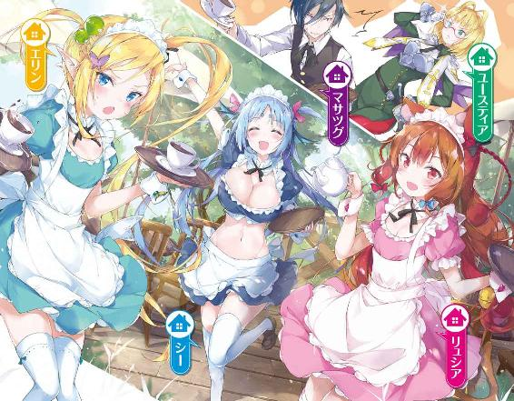
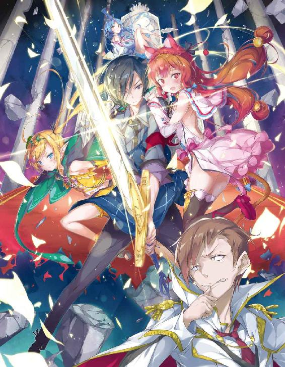
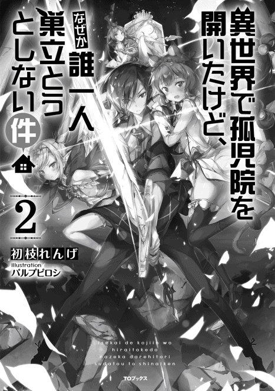
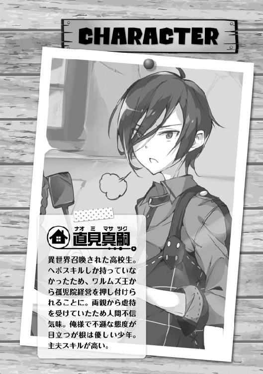
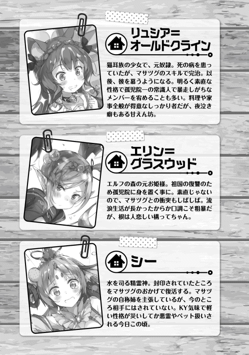
ちゅどおおおおおおおおおんんん!!
「いったい何だ⁉」
ソファで小休止を取っていた俺こと直見真嗣は、突然鳴り響いた爆発音に飛び上がった。
音はルーナ孤児院の厨房から鳴ったようだ。
俺は急いで駆け出す。
走りながらも嫌な予感が脳裏を駆け巡るのを感じた。
ルーナ孤児院。
先月、俺は異世界の勇者召喚という失われた魔法により、現代からこの中世ヨーロッパとよく似た世界に、クラスメイトどもと一緒に呼び出された。
勇者召喚には不思議な力があり、召喚されたものに特殊なスキルを付与する効果がある。
だが、『守る』と『鑑定』というヘボスキルしか与えられなかった俺は早々に左遷され、こうして瓦礫か廃墟かと見間違えること必至のルーナ孤児院の院長へと就任することになったのである。
そして、何の因果か冒険者ギルドのマスターや国を牛耳るほどの借金取りどもから追い回され、あろうことか、国の危機を救うなどという体験をすることになった。
全く何の冗談かと呆れ返るしかない。
だが、それを通り越して信じられないことがある。
それこそ、
「あ、ご主人様、いま物凄い音がしましたね。厨房の方でしょうか？」
そう言ってひょこりと顔を出したのは獣人の娘、リュシアだ。
このルーナ孤児院の最初の孤児である。
不治の病にかかり、このルーナ孤児院に捨てられていたところを、偶々やって来た俺が助けることになった。
何が嬉しいのか、俺の方を見てニコニコとしている。
尻尾も左右にゆらゆら。
「ま、どうせまたシーが料理を爆発させたんだろ？ まったくしょうがない奴だぜ。あ、あたしだったらマサツグにちゃんと美味いもん食わせてやれるのによ」
と、別の部屋からもう一人、少女が姿を現した。
二人目の孤児であるエリン。エルフの少女......いや、元王女だ。
国を失って放浪の果てに、この孤児院に転がり込んできたのである。
自分の国を滅ぼしたバルク帝国への復讐を誓い、この孤児院に潜伏しつつ機会をうかがっているとんでもない娘だ。疫病神と言って差し支えないだろう。
なぜかコチラをちらちらと見てくるが、俺の顔に何かついているのか？
まあ、ともかく、
「やれやれだな......」
信じられないというのは、当然こいつらのことだ。
一週間すら続けるのが難しいと思われた孤児院での共同生活も、ついに一か月が過ぎた。
院長の職など長続きするはずがない。早々に破綻をきたすだろうと言う確信も、今や過去のものとなりつつある。今はこうして喧噪とともに過ごすのが当たり前になっていた。
「孤児二人との生活がこれほど続くとは、な」
若干の感慨にふけるのも致し方あるまい。
俺自身、お世辞にも恵まれた家庭環境で育った訳ではない。いや、むしろ虐待といってよい生活の中で育ってきた。
そんな俺が年端も行かぬ少女たちの面倒をみるのだ。
うまく行くという予想をする方が難しい。
「ふ、思えば遠くにきたものだ」
俺はそう呟いて苦笑するのだった。
「って、ちょっと待って！ 忘れてる！ ナチュラルに一人忘れてるよ！」
と、そう叫ぶようにして厨房の扉が勢いよくバン！ と開く。
いつもながら騒がしい口調でまくし立てるのは自称、精霊神のシーだ。
自分は女神だと名乗る虚言癖がある、かわいそうな娘である。
俺はその声を聞いてポカンとしながら、
「お前がいつ孤児に昇格した？ ちゃんと玄関前で怪しい奴がきたらワンと吼える仕事に専念しないか」
その言葉にシーは涙目になりながら、
「もう二日も専念したよ！ 確かにマー君のおやつを食べたのは悪かったけど、もう濡れネズミになりながらワンワン言って近所の子供に石を投げられるのは嫌だよお！ ね、マー君、わたし精霊神なんだよ？ 女神様なんだよ⁉ もっと相応しい役割があるでしょ⁉」
「うるさい。何度言ってもつまみ食い癖の直らない女神などいてたまるか。お前などペット枠で十分だ」
と、そんなやりとりをしていると、リュシアが口を挟む。
「ま、まあまあ。ご主人様、もういいじゃありませんか。シーさんも反省してます」
「そうか？」
俺は疑わしそうに顔をしかめる。
が、リュシアにしては珍しく、強く首を縦に振り、
「はい！......えっと、それにですね、正直 ご近所さんに変な噂がたちそうなのでやめて欲しいなあ、と。ただでさえ廃墟みたいな建物ですので、シーさんが玄関で奇妙な声を上げていたら......」
リアルお化け屋敷というわけか。
「犬の役目もこなせないとは、呆れた自称女神だな」
「私のせい⁉」
はあ......、と俺はため息をつき、
「まあいい。確かにこれ以上続ければ、ルーナ孤児院に頭のおかしい駄犬が住み着いたとあらぬ噂が流れる。臭いものに蓋をすることもやむをえまい」
「ほ、ほんと⁉ やったぁ!! やっと今日からあったかい布団で眠れるんだね！」
「あ、そこは喜んじゃうんですね」
リュシアが若干引き気味に突っ込んだ。
まだまだシーへの認識が甘いようだ。
「んなことより、さっきの爆発音は何だったんだ？ また料理でも爆発させたのか？」
と、呆れた様子でエリンがもっともな疑問を口にした。
俺としたことが、すっかりとこいつらのペースにのせられ、当初の目的を失念していたようだ。
「そうだった。おい、さっきの爆発音は一体なんだ？ また魔力をお漏らしでもしたか？」
「お年寄りのお漏らしみたいに言わないで！ た、確かに何万年も生きてるけど他の神様からしたら子供みたいなものだし、それに他の神様みたいに老害をこじらせたりしてないんだから！」
他の神々を真正面からディスる。
「お前の年齢などどうでもいい。とにかく何があったのかさっさと言え」
俺はイライラしながら言う。
だが、
「えっ、マー君って歳の差は気にならないタイプなの？」
「はあ？ お前は突然何を言い出し......」
俺が呆れて返事をしようとすると、
「そ、そうなんですか、ご主人様⁉」
「上も下もオッケーなのか⁉」
と、なにが引っかかったのか、リュシアとエリンまでもがその話題に食いついてくる。
本当になんなんだ一体？
「別に年齢などどうでもいいだろう。というか、今はそんな話はしていないだろうが！」
「へ、へー...」
「ふ、ふーん、歳の差は別にどうでもいいのか......」
「姉さん女房路線確定!!」
訳が分からない。俺の趣味などこいつらには関係ないはずだが......。
と、妙な間があったが、シーがコホンと咳払いしつつ、
「えっと、爆発はね、別に料理とは関係ないよ。千年ぶりの復活だったから、ちょっと魔法の練習してたんだ。そしたら、すこし失敗しちゃって」
ペロっと舌を出す。
その仕草にはイラっとしながらも、俺は少しばかり納得した。
なるほど、魔法の練習か。
俺は一部例外を除き魔法というものが使えない。だから完全に理解できる訳ではないが、それを使いこなすのに絶え間ない修練が必要なものということは何となく分かる。
「けどよ〜、何だって厨房なんかで練習してたんだ？ あたしも時々腕がなまらないように訓練するが、だいたい庭でやるぜ？」
そう言えばそうだな。
このルーナ孤児院には、表にも裏にも無駄に広い庭が存在する。
そこを使えばいいだけのはずだが？
「それだと、三時のおやつを食べながら練習できないじゃない？」
なんちゅう行儀の悪い......。そんなだから気が散って魔法の練習で失敗を......ん？
「って、お前は自分の分を朝に食っちまったはずだろうが！」
俺が止めるのも聞かずにな！
「んん？」
とエリンがあることに気づき、みるみる目を見開く。
「ああっ⁉ ってことは、それあたしとリュシアの分じゃねえか⁉」
「ええっ⁉ ひどいですよシーさん!!」
リュシアも抗議の声を上げる。
一方のシーは焦った表情になり、
「あ、あれ？ それって昨日のことじゃなかったっけ？ あたし、しっかり寝た記憶があるんだけど......」
「それはあんたが昼寝しただけだろうが！ どんだけ食い意地がはってるんだ⁉」
「ええー⁉」
ええー、じゃない。結局つまみ食いじゃないか！
ギャーギャーと少女たちが騒ぐ。
俺はそんな光景を見ながら深々とため息をついた。
やれやれ、毎日がこんな感じだ。
やはり俺には孤児院長の職など向いていないのかもしれない。
まったく、もしも俺が孤児院長でなくなりさえすれば、こんな苦労もしなくてすむのだがな。
と、そんな詮無きことに頭を悩ませていた最中、
「ナオミ・マサツグ!! ナオミ・マサツグという者はいるか!!」
そんな女性の声とともに、ルーナ孤児院の扉が「バン!!」と勢いよく開かれたのである。
突然、人のフルネームを叫びながら現れたのは、キリッとした眼差しの少女であった。
年齢は俺と同じか少し上くらいだろうか？
容姿は控えめに言ったとしても整っており、ブロンドを肩まで伸ばして几帳面に切りそろえていた。
だが、その表情が全てを台無しにしていた。
口はヘの字を通り越し二等辺三角形になっていて、こちらを見る目は敵意に満ちているのだ。
腰には護身用のショートソードを差していて、いつ斬りかかって来てもおかしくはない。
しかし、この女の素性を一番分かりやすく示すのは、その胸についたバッジだろう。
そこにはこう書かれていた。
『王国児童保護監察官ユースティア』
と。
まったくもって嫌な予感しかさせない肩書だ。
が、
「いきなり人の敷地に踏み込んでくるとは、一体どういうつもりだ？」
気づけば俺の口が知らぬ間に文句を紡いでいた。
さすがに官憲どもにいきなり喧嘩を売る程、馬鹿ではなかったつもりなのだが。
どうやら、この口の悪さは死なないと治らない類のものらしい。
思った通り、女はもともと敵意に満ちていた瞳を更に厳しく釣り上げ......るかと思ったが、
「ふむ、一理ありますね。それはどうも申しわけありませんでした」
そう言って素直にペコリと頭を下げたのだった。
「あ、ああ......」
言った俺が逆に面食らってしまった。
と、そんな風に俺が調子を狂わされている隙に、顔を上げた女は先ほどと同様、厳しい表情で口を開く。
「それはそうと、ナオミ・マサツグ！」
そう言って、鞘からショートソードを抜き、ビシリと俺の方に突きつける。
「あなたには児童虐待の嫌疑がかけられています！ さあ、大人しく白状してお縄につきなさい!!」
なんだと？
「女、お前は一体なにを言ってるんだ？」
俺は素直にそう言う。
だが、女は「む？」と言うと、剣を収めてこちらにズイと迫って来た。
何だ、いきなり実力行使か？
そう思ったが、彼女は顔を数センチまで近づけて、俺の目を真正面から見ながら、
「誰が『女』ですか。私の名前はユースティア・ライメイルという立派な名前があるのです。ちゃんと『ユースティア』と呼ぶように」
などと、息のかかる距離で言う。
「暑苦しい女だな。少し離れろ」
「また！ 女、ではありません。ユースティア、だと言ったでしょう。さあ、一緒に復唱してください。ユースティア・ライメイル、ですよ？ さん、はい！」
「いいから距離を......」
「さん、はい！」
「......」
「むう、どうして復唱しないのですか？ 何かユースティア・ライメイルと言えない特殊な宗教を信仰しているのですか？ そうした事由がなければ、ユースティア・ライメイルと復唱しない理由は特にないと思われるのですが......」
（面倒な！）
俺はこっちを真っ直ぐに見つめてくる女の顔を見返しながら、内心思い切り舌打ちした。
なぜなら、こいつが俺の最も苦手としているタイプであることが分かったからだ。
そう。
こいつは、このユースティア・ライメイルという女は、他人との距離感というものを一切無視して、人の領域に土足で踏み込んでくるばかりか、いつの間にか我が物顔でお茶を飲んでいるタイプである。
現に俺が睨み付けても、睨まれている理由自体が理解できないとばかりに、純粋と言ってよい瞳をこちらに真っ直ぐ寄越して来るのだ。
と、そんな内心の葛藤に苛まれていると、
「あ、あの、お二人とも、先ほどから少し距離が近すぎます！」
思わぬ声が割って入った。
なぜかリュシアが慌てた様子で俺の腕を引っ張って来たのである。
（......なるほどな。息のかかる距離でにらみ合っていたから、どうやら臨戦態勢だとでも思ったわけか）
ふん、と俺は鼻を鳴らす。
無論、そんな訳はない。
察しの悪い奴だ。
いきなり、やり合うほど俺は短慮な男ではない。
......が、このままでは話が進まないのも確かだ。
ちっ、仕方あるまい。
「......元の場所まで下がれ、女。そうすればお前の名前を呼んでやろう」
やむを得ず妥協案を提示する。
女は突然の提案に驚いたようだ。
目を見開いて「むむ」とうなった。
だが、数秒考えた後、
「......いいでしょう。あなたが私の名前を呼ぶということは、私の正義をあなたが認めたという証拠なのですから」
ユースティアはそう言って、最初いた場所に数ミリの狂いもなく戻る。
いちいち理屈っぽい奴だ！
......ふ、まあいい。
俺の『距離を空けさせる』という要求は通ったのだ。
そのために女の名を呼ぶくらい何でもない。
俺はなにも失ってはいないのだから。
「俺の勝ちだ」
俺は勝利宣言を行う。
が、シーとエリンがぼそぼそと、
「お姉ちゃんだけかなあ。最初から名前を呼べば良いだけだったんじゃないの？ って思うのは？」
「てか、あたしには単なる似た者同士にしか見えないんだが？」
よく聞こえないな。
まあ、今はそんなことよりも、だ。
「女、もといユースティア。それで一体、何の用でこのルーナ孤児院にやって来た？ 児童虐待だとか、たわけたことを言っていたようだが？」
「ふむ、そうでした......ですが、ナオミ・マサツグ、私はたわけてなどいませんよ。あなたには児童虐待の容疑がかかっています！」
ユースティアはそう叫ぶと、ビシリと俺に向かってショートソードを突きつける。
「......貴様は剣を構えないと、まともにしゃべれない特異体質か何かか？」
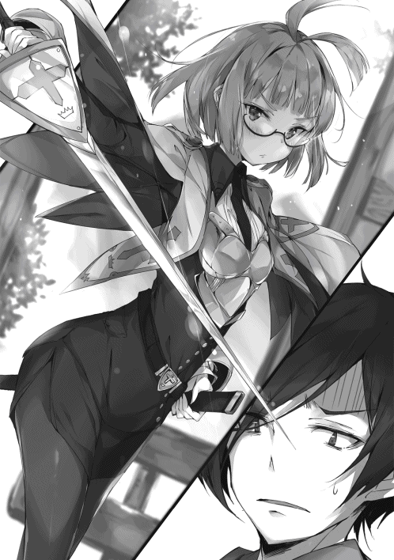
「愚かな！ これは私の悪を糾弾する心が剣を取らせたのです！ ナオミ・マサツグ、あなたの身柄を拘束し、孤児たちを別の孤児院、ないしは里親に引き渡します!!」
ほう......。
「愚か者はお前だ。なぜ、俺がそんな罰を受けねばならん？ この国の法律がどうなっているのかは知らんが、身に覚えのない罪を認めるつもりはないぞ」
「あくまで白を切ると言うのですね？」
俺は呆れて肩をすくめる。
「切る白など元からない。そもそも何の証拠があって人を犯罪者扱いする？」
事実無根なのだ。証拠などあるはずがない。
そう思ったが、
「タレコミです」
女は簡潔に答えた。
......なるほど、そういうことか。
とすれば、やはり何か証拠がある訳ではないのだ。
「ふん、バカバカしい。そのタレコミが嘘なのだろう。そんなものに振り回されるとは、愚かすぎて笑えんな」
だが、女はまじめな表情で首を横に振り、
「いいえ、正確には情報提供を受け、王城のモルテッシモ宰相閣下が直々に当局へ対応を打診されたもの。ならばその情報の確度は相当高いはずです」
王城から直々にだと？
俺は軽い違和感を覚える。
言っては何だが、市井の一孤児院のことなど、奴ら上層の人間にとってはどうでも良いことのはずだ。
が、このことについて十分な思考を巡らせる時間はなかった。
ユースティの次の言葉があまりに衝撃的だったからだ。
「その情報によれば、あなたがそこの孤児たちに『不埒』なことをしているということでした」
「....................................はあ？」
俺は余りに想定外の内容に思わず間抜けな声を上げてしまう。
「こいつらに、『不埒な真似』、だと？」
「ええ。その通りです」
俺は視線をリュシアたちに向ける。
そこには年端も行かない少女二人。
そして自称・女神の痛い女が一匹。
......一体どこに不埒なことをする要素があるというのか？
「何を言うかと思えば、くだらん。こんなガキどもに手を出す訳がないだろう」
俺がそう言うと、リュシアも、
「そうなんですよ！」
と力強く頷いた。
それ見たことか。
本人が言うのだから間違いない。
が、リュシアの言葉は続き、
「ご主人様は一緒のベッドで眠っていても、全く私たちに触れようともしない、ものすごく紳士な方なんです!! わ、わたしは別に何をされたって一向に構わないんですが......」
「一緒のベッド、ですって⁉」
クワっと目を見開いて、ユースティアがこちらを睨み付けて来た。
「おい、勘違いするな。それには訳が......」
俺が慌てて口を挟もうとする。
が、エリンが先に口を開き、
「そうだぜ、ユースティアさん。あんたが思ってるような状況じゃない。マサツグは仕方なくあたしたちの面倒をみてるだけさ」
と、理由を説明した。
よし、でかしたぞエリン。
「ほう、そうなのですか？」
ユースティアも冷静さを取り戻す。
やれやれ、妙な誤解は解けそうだな。
「ああ」とエリンはまじめな表情で頷きながら、
「もうマサツグなしじゃ眠れない体にされちまったからなあ。あたしの大事なもんも奪われちまったし、観念するしかねえのさ」
「大事なものを奪われた⁉」
「おい、ちょっと待て！ 激しく勘違いをしているぞ!!」
ゴミを見るような視線を投げかけてくるユースティアに向かって否定をする。
リュシアは夜泣きを慰めるため。エリンは睡眠中に物音に反応して無意識に攻撃してしまうのを防ぐためだ。
「そうよ！ マー君がそんな不埒なことする訳ないじゃない!!」
シーがすかさずフォローに入る。
よし、言ってやれ。
「マー君とは子づくりの練習をするくらいだもん。十人くらい子供が欲しいねって言いながら♬」
「じゅ、十人も⁉」
違う意味で目を見開いたユースティアが頬を赤らめてこちらを見つめてくる。
「頬を染めるな頬を！ まったく完全に誤解だ！」
「い、いえ」
彼女は首を横に振り、
「シーさんと言いましたか？ 貴方なら年齢も釣り合いますし、恋愛関係になることも頷けます。ですが、十人も子づくりを......大家族計画ですね......」
だが、これには俺の堪忍袋の緒が切れた。
「貴様、それ以上俺の尊厳を踏みにじるようなことを言ってみろ？ ただでは済まんぞ。こんな自称・女神の痛い女と恋愛関係になる訳がないだろう！ 豚の方がマシだ」
「マー君ひどい⁉」
あんなに沢山子供の名前を考えたのに！ とシーの悲鳴がとどろく。
あれはお前が勝手に命名していただけだろうが！
はぁ、と俺はため息をつきながら、
「ともかく、俺はこいつらに不埒なことなどしていない。そのタレコミこそ疑うべきだと思うがな」
「ふうむ。今のやりとりで疑念はどちらかと言えば深まったのですが......」
ユースティアが顎に手を当てる。
「ですが、あなたの言う通り確実な証拠がない以上、処分は時期尚早ですね」
女はあっさりとそう言った。
ふん、分かればいいんだ。
俺が安堵したその瞬間、
「ですので、私もこのルーナ孤児院に同居し、タレコミが真実なのかそうでないのか、この目で確かめることにします」
............は？
不意を突かれた俺は呆気にとられる。
「あの、ユースティアさん。同居って、もしかしてこの孤児院に寝泊りされるということですか？」
意外と冷静なリュシアが口を開いた。
「その通りです。常にナオミ・マサツグを観察し、あなたたちに妙な真似をしないか見張ります。ええ、あなたたちは何も心配しないで大丈夫ですからね」
大船にのった気持ちでいなさい、と自らの正義を信じて胸を張るユースティア。
リュシアは困ったように笑い、
「えっと、私としてはそこは放置しておいていただいて一向に構わないのですが......。それはそれとして、寝泊りするならお部屋をご用意しないといけませんね。奥の部屋が余っていましたから、そこを少し掃除してきます。ベッドもこの前綺麗にしましたので使えるはずです」
「おお、リュシアと言いましたか。何といい子なのでしょう。ありがとうございます。感謝いたします」
「おい、俺は受け入れるとは一言も......」
「いんや、マサツグ。これは同居でも何でもしてもらって、とっとと見てもらった方が早いと思うぜ？」
と、エリン。
どういうことだ？
「そうよね。エリンちゃんの言う通りだとお姉ちゃんも思うな。マー君が全然手を出さないヘタレだってことを見てもらえば、すぐに疑惑は解消すると思うもの」
誰がヘタレだ？ 誰が⁉
だが、確かにこのユースティアという女、遠ざけようとしても絶対にあきらめずに付きまとってくるタイプだ。
ならば、逆に受け入れてしまった方が、手っ取り早く追い払えるかもしれん。
実際、俺は潔白なのだから。
「その通りです。やましいことがなければ受け入れられるはずですよ？ ですが、無論そうした不埒な現場が確認されたら即刻逮捕。孤児の皆さんには別の孤児院か里親を紹介することになりますが」
ちっ、こいつの言う通りにするのは癪だが......。
俺は大きく舌打ちをしてから、
「いいだろう」
俺は渋々頷いた。
「ユースティア・ライメイル、お前を孤児院に受け入れることとしよう」
「ふ、腹をくくりましたか」
が、
「ただし、条件がある。これを守れないようならばお前を受け入れるわけにはいかん」
女は警戒するように眉をひそめる。
ふん。
俺は厳かに口を開く。
「朝食は七時半からだ。七時には起きるようにしろ。寝坊は厳禁だ。それから昼食は一時、おやつは三時、夕食は六時からだ。必ずその時間には孤児院にいるようにしろ。三食欠かさず食べることが健康の基本だからな。一人食べるのが遅れると食器が片付かないから、みんな一緒に食べることがルールだ。ああ、あとそれから就寝は九時だ。それ以上の夜更かしは禁止している。背が伸びなくなるからな」
「は、はい？」
ユースティアが瞳を大きく開いた。
ん？
何かおかしなことを言ったか？
......ああ、そういうことか。
「安心しろ。お前の食事ぐらい用意してやる。四人分作るのも五人分作るのも変わらんからな」
こういうのは買い物の仕方次第でどうとでもなるのだ。
「えっと、あの......そういうことでは。ああ、いや、そうですか......。では、ええ、はい、それは、ふふ、お世話になります」
「？ ああ」
なぜか最後妙な間があったが、ともかくユースティアは条件を飲んだのだった。
ふん、だが何日持つかな。
ここでの生活は決して裕福なものではない。何せ廃墟だからな。お役人様が何日で音を上げるか見ものだ。
俺は内心鼻を鳴らす。
ともかく、こうしてユースティアとの共同生活がスタートしたのだった。
「露店販売、ですか？」
ユースティアが真っ直ぐに俺の目を見て聞き返して来る。
こいつは宣言通り、翌日寝泊りの道具一式を持ってやってきた。
......悪い冗談であることを願っていたのだがな。
相変わらず口元は二等辺三角形でむっつりとした様子だ。
「ああ」
と、俺はそっけなく答えた。
リュシアが口を開く。
「ご主人様が作られたコンニャクを販売するんです。常連のお客さんもいて、とても人気があるんですよ？」
「ほほう」と、ユースティアは感心したように頷いた。
ふん。
「だが、お前はここで待っていていいぞ。客商売をしている時に見張りがいても邪魔なだけだからな」
「むむっ、そうはいきません。あなたが過重な労働を子供たちに押し付けている可能性もありますからね」
しっかり監視させてもらいます、と続けた。
「話の分からない奴だ。お前の不愛想な顔を見れば客も逃げ出す。迷惑だと言っているんだ」
すると、女は自分の顔をぺたぺたと触ってから、
「なるほど、もっともですね」
と、まじめな様子で頷いた。
肩透かしを食らいながら、
「......分かったなら、大人しく留守番をして......」
「ならばこそ!!」
と、いきなり大声を出す。
「うるさいぞ！」
「おっと、失礼しました。逆境に打ち勝てと言う私の正義の心がつい口をつきました」
よく分からないことを言う。
「ならばこそ、私も売り子として、その露店販売を手伝います！ 同じお釜のご飯を頂くのですから、私も何かお役に立たねば気がすみません。......無論、あなたの言うところの『愛想』というものも最大限発揮しましょう」
「お前がか？」
俺は心底疑わしそうに疑念を露にする。
こいつに愛想笑いが出来るとは思えないのだが......。
しかし、
「疑っているのですね？ ではその疑念を払拭してみせましょう」
ユースティアはそう言って、口元をほころばせた。
「これで、どうですか？」
......ほう。
認めたくはないが、悪くない。
俺は素直に感心する。
元が良いため、こうして普通に笑っていれば、そこいらの女など足元にも及ばないほど人目を惹く。
中身は自己中な正義感を振りかざす面倒な女だが、そのことを知らないバカな男どもは食いつくだろう。
「ふん、まあいいだろう」
「む、そうですか......。てっきり、また罵倒されるかと思いましたが？」
俺を何だと思っているんだ？
「俺は正直なことしか言わん。お前の笑顔が他より秀でているというだけで、それ以上でもそれ以下でもない。別に褒めている訳ではないから勘違いするなよ？」
「ほ、ほほう、なるほど」
ユースティアはなぜか目線をそらし頷いた。こいつが視線を外すのは珍しい。
と、そのやりとりを見ていたシーが、
「マー君！ お姉ちゃんは？ お姉ちゃんの笑顔だったらいつでもプライスレスだよ。女神の微笑だよ⁉」
いきなりそう言って割り込んできた。
鬱陶しいな。
「ほう、プライスレスなのか？」
「そうだよ！ ほら、見てこの素敵な笑顔！ 好きなだけ見放題!!」
「ならば、他の男どもに無料で配ることにするか。受け取ったそばから路上に捨てられそうだがな」
「いらないゴミ扱い⁉」
「持って行ってもらうには、こちらが金を払う必要があるな」
「しかも粗大ゴミ⁉」
「お、おいマサツグ。ちなみにあたしのはどうだ？ うん？ 元お姫様のロイヤル・スマイルだぞ？ 貴重品だぞ？」
「ご、ご主人様、わたしも、わたしも！」
エリンとリュシアも、ぴょんぴょんとアピールするように、こちらに笑顔を向けてくる。
何だってんだ、一体？ 頭が痛くなってきた。
まあ、実際、俺だけで売り子をしても今のようにたくさんの客は来ていなかっただろう。
そのことは事実だ。
「お前らは普段通りにしていれば十分だ」
少なくとも、俺が売り子をしている万倍はマシだろうからな。
「ふ、普段通りで十分って......」
「は、はう、ご主人様......」
なぜか頬を染める二人。
理解不能だ。
と、そんなくだらないやり取りをしているとユースティアが、
「......さ、さあ、もういいですね？ 証明は十分になされたと思いますので」
と、なぜか急かす様な口調で言って来た。
見れば口元がピクピクと痙攣している。
「......お前は愛想笑いを一分も持続できんのか？」
笑顔を作るだけで、表情筋が死亡しかけている。
「そんなことで売り子が務まると思っているのか？」
「うう......」
やはり留守番だな。
と、そう思った時、
「てか、マサツグだって人のこと言えねえぜ？」
「......む？」
「そうよお。笑顔なのに目が笑ってなくて逆に怖いんだから！」
「......むむ」
横からエリンとシーがそろってツッコミを入れてくる。
それは......自分が一番よく分かっていることだ。
反論する気にもならない。
......というか、
「お前ら、やけにユースティアの肩を持つな。どういうつもりだ？」
俺の質問にリュシアが口を開く。
「すみません、勝手なことをしてしまって......。でも、ご主人様の潔白を証明するには、ユースティアさんに包み隠さず全てをご覧いただくのが一番いいと思うんです」
......やれやれ。
俺の意志を確認もせず、勝手にことを進めようとしていたわけか。
ずいぶん偉くなったものだ。
「ふん、好きにすればいい。俺は知らんぞ」
不機嫌そうに言う。
と、ユースティアが、
「ナオミ・マサツグ！ 子供たちがこれほどあなたのことを考えてくれているというのに、何ですか、その態度は!!」
笑顔から一転、怒った表情になる。やはりこいつはこっちの顔の方がしっくりくるな。
俺はその女の言葉を無視して、そっぽを向く。
ユースティアは更に言いつのろうとする、が、
「あ、いえいえ、いいんですよ、ユースティアさん」
「しかし！」
だが、リュシアは微笑みを絶やさず、
「あれはご主人様的オッケーサインなのです。照れくさくて、ああいう言い方になってしまわれるんですよ？」
「そ、そうなのですか？」
とんでもないことを言う。
「おい、聞こえているぞ。間違った認識を他人に堂々と吹聴するんじゃない」
「あ、はあい、ごめんなさい、ご主人様」
尻尾を揺らしながらリュシアが謝った。
まったく。
「罰として今日のランチは野菜多めの刑だな」
深く反省するがいい。
が、リュシアは小首を傾げ、
「え？ あ、はい。......お野菜をたくさん頂けるのが罰なのですか？」
......ふむ？
子供というのは野菜を嫌がるはずなのだが。そう教えられたように思ったのだが、記憶違いだったろうか？ まあ、確かに俺も別に野菜を食わされて嫌だった思い出はないな。
......というか、
「今はそんなことはどうでもいい」
さっさと露店の準備のために、出発せねばらならない。ユースティアが付いてくるというのなら勝手にすればいい。
そんなことよりも、今日は重要なイベントがあるのだ。それは、
「お前たちにはまだ言ってなかったな。今日から新商品を投入する。ルーナ孤児院ブランドの第二弾、コーヒーだ！」
「「「......へ？」」」
突然の宣言に、孤児たちの間抜けな声が響いたのだった。
◆◇◆◇
「わー、とってもかわいいですね、このエプロン♬」
「あたしには似合わねえんじゃないか？ こんなフリフリしたのは？」
「そんなことないわよお。ねえ、マー君、エリンちゃん可愛いわよねえ」
「無論だ。何せ俺の手製だからな。ちゃんと似合うように作ってある」
「マ、マサツグがあたしのために......。そ、それに、あたしのことを可愛いし抱きしめたいだなんて......」
「おい、何もかも誇張されているぞ」
「あの」
と、盛り上がる三人娘を尻目に、
「本当に私までこんな格好をしないといけないのですか？」
ユースティアがまじめな表情で固まっていた。
手に握られたそれは無論エプロンだ。
予備として作っていたものであり、他と同様大きなフリルが特徴である。
「売り子をすると言ったのはお前だろう？ まさか、もう発言をひるがえすのか？」
俺はせせら笑うように言う。
「む、ぐぐ、そ、そんなつもりはありません！」
「ならば、さっさと支度をしろ。客は待ってはくれないぞ？」
「で、ですが、こんなかわいい恰好、私に似合うはずがなく......」
なるほど、そんなことを考えていたのか。
「くだらん、男の俺だってエプロンを身に着けるんだ。女のお前がエプロン姿をしていて誰が気にするものか」
俺はそう言って鼻を鳴らす。
が、ユースティアは首を横に振り、
「......あなたは少しエプロンが似合いすぎです」
......は？
と、孤児たちも、なぜか凄い勢いでウンウンと頷いている。
訳が分からん。
「はあ、ですが是非もありませんね......」
結局、観念したかのようにエプロンを付けたのだった。
ふうむ、まあいい。今は準備が先だ。
テーブルとイスをいくつかセットして、と。
......よし！
「異世界初の喫茶店、その名もルーナ・カフェの開店準備、完了だ！」
俺はそう宣言すると、カフェに必須の、あの飲み物を作り始めたのであった。
「ご、ご主人様、ほ、本当にこれは飲み物なんですよね？」
リュシアが驚いた様子で声を上げた。
「当然だろう？ 俺の国では人気のある嗜好品だった」
ユースティアが、
「泥水か何かではないのですね？」
と眉根を寄せて言う。
「ほう、驚いたな」
俺は目を丸くしながら、
「ライメイル家では泥水を飲む習慣があるのか？」
「そんな訳がないでしょう！」
俺は嘆息しつつ、
「店先で大声を出すな。金づる......いや、客が逃げるだろうが」
「そのお客様に泥をすすらせて、お金を巻き上げようとしているのですね？」
「お前の鼻は飾りか何かか？ よい匂いがしているだろう？」
「むう、確かにそうですが......」
まだ納得いってないようだ。
やれやれ、まあ、無理もない。
俺は目の前に置かれた真っ黒の液体を見下ろした。
ターキッシュ式コーヒー。
つまりドリップ式ではなく、単に鍋で煮出しただけのコーヒーだ。
細挽きしたコーヒー豆が混ざるので沈殿してから飲む必要があるが、ちゃんとした味にはなっている。
初めて見た奴にはインパクトが強いだろうが。
（正確にはコーヒー豆らしきものを焙煎して使っているだけだがな）
コンニャクイモの採取時に偶然、コーヒー豆と似た木の実を発見したのだ。
ものは試しで焙煎したところ、元いた世界のコーヒーとそっくりの味になった。この世界では単なる無名の木の実である。
「いいでしょう。ですが、安全なものか私がテストします。それを飲ませなさい」
「念入りに試飲はしているのだがな」
「私はあなたを信用したわけではありません。安全衛生上、問題ないかどうかチェックさせて頂きます」
挑むように言ってくる。
「ふむ、まあ良かろう」
俺はそう言って、あっさりとグラスを差し出す。
と、ユースティアは目をパチクリとさせて、
「......怒るかと思いましたが案外冷静ですね」
「ふん」
俺は不機嫌そうに鼻を鳴らした。
と、リュシアが口を開き、
「きっとご主人様は、ユースティアさんが自分の体を張ってまで、毒見をされようとしていることを好ましく感じているのだと思います」
「そうなのですか？」
ユースティアが驚いた表情で聞いてくる。
「勝手なことを言うな。そんな訳がないだろう。とんだ勘違いだ」
あまりに見当違いな推測に、俺は即座に否定する。
「では他に何か理由が？」
ユースティアがまじめな調子で聞いてくる。
いちいち面倒な奴だ！
「......俺は単にお前の驚く顔が見たいだけだ」
「ほう、わたしの顔を......」
ユースティアはそう言うと、少し思案顔になる。
そして、
「では、これくらい近ければよく見えますか？」
そう言って目の前に顔を寄せて来たのだった。
「お前はいちいち顔を近づけないと気が済まない病か何かなのか？」
「あ、あなたがよく見たいなどと言うからでしょうが！」
言われてから恥ずかしくなったのか、顔を赤らめる。
が、視線はそらさない。
恥ずかしいなら最初からするなと言いたい！
......が、反対にここで俺が目をそらせば、まるでこっちが照れていると思われかねない。
とんだ誤解だ。そんな辱めを受けるわけにはいかない。
動じたら負けだ。
俺は余裕の笑みを貼り付けながら、
「ふん、まあ好きにするがいい。さあ、飲みたいなら飲むといい。コーヒーをな！」
そう勢いで発破をかける。
ユースティアもその声に後押しされ、
「い、いいでしょう！ よく見ておきなさい！ そして、もしこれで私の体調が悪くなればコーヒーの販売は認めません!!」
そう宣言すると、初めてのコーヒーをグビッと呷ったのである。
そして、
「ヴォエッ⁉」
初めて経験する苦みばしった独自の味に、思わず口に入れたものを吹き出したのであった。
そう至近距離から俺の顔に向かって......。
「あちちちち、この馬鹿が！ 初めての飲み物を一気に行く奴があるか！」
「す、すみません。で、でもこれほど苦いものだとは思いもよらず......」
「マー君、じっとしてて......はい、拭き終わったよ。さ、じゃあ次はお膝の上に頭をのっけよっか♬」
「お前はどさくさに紛れて膝枕させようとするんじゃない」
と、そんなやりとりをしていると、
「ふ〜ん、どれどれ？ お、確かに変わった味だなあ。でもあたしは嫌いじゃないぜ？」
「あ、私も結構飲めますね。口の中がすっきりします。後味がいいです」
エリンとリュシアが別に用意してあったコーヒーを飲んで感想を言った。
「結局、お前たちが毒見するのか......」
「どうですか？ 体に湿疹や嘔吐感を覚えたりはしませんか？」
心配そうにユースティア。
「全く大丈夫です。さすがご主人様です」
「マサツグは性格はこんなだが、料理の腕は悪くねえからな」
ふん。
「あまり調子に乗って飲みすぎるなよ。若干だが興奮作用がある。ほどほどにしておけ」
「はいよ」「はーい」
やれやれ。
と、ユースティアが、
「火傷は大丈夫でしょうか？ ともかくすみませんでした」
頭を深々と下げてくる。
「大層なことをするな。悪目立ちするだろうが。それに、この程度のこと、俺にとっては何でもない」
「怒らないのですか？」
「？ 別にわざとでもあるまい。だが、食材は無駄にするな。罰が当たるぞ？」
「へ？ あ、あの......」
「さ、そんなことより、そろそろ客も集まって来る頃だ。さっさと準備するぞ」
「「「了解！」」」
元気の良い孤児たちの声が響いた。
が、ユースティがまだこちらをじっと見ている。何かまだ文句を言い足りないのかもしれない。しかし、もう構っている暇はない。
早速、客がやって来たからだ。
「えらく苦いな、マサツグの兄ちゃん！......けど、何だか癖になる味だな!!」
「ええ、コーヒーと言う飲み物です」
「これも外国産の飲み物ってやつかい？ どこの国だ？」
「確か原産国はエチオピアという国です」
「えちおぴあ？ 聞いたことない国だなあ」
「まあ、海を越えてずっと西の国ですからね」
「へー、珍しい飲み物なんだなあ」
尋ねて来た客に返答する。
本当は異世界産とも言うべき飲み物であるが、もちろんそんな説明をするつもりはない。
あくまで外国産の珍しい飲み物として、希少価値をアピールして興味をひく作戦だ。
嘘ではない。
......無論、真実でもないが。
が、そこまでした俺の作戦も、その効果はイマイチだと評せざるを得ない。
なぜならば......、
「ほっほっほ、リュシアちゃんは本当に可愛いらしいのう。うちの孫に欲しいくらいじゃよ」
「そ、そんな。でもありがとうございます」
温和そうな爺さんがホクホクとした表情で、コーヒーを運んできたリュシアに話しかけていた。
「エ、エリンちゃーん、き、今日も来たよ！ コーヒー？ 新商品かい⁉ き、君のためならコーヒー百杯だって頼んでみせるよ!!」
「ぼ、ぼくも、だよ！ ふひひ」
「うげえ、あんたらまた来たのかよ。気持ちワリいからもう来んなって言っただろうが！」
オタクっぽい青年たちがエリンに罵倒されていた。
が、男たちの表情はむしろ罵倒の言葉を浴びるたびに恍惚となっていく。
......見なかったことにしよう。
「おーい、ばかシー！ お前今日からコーヒーってやつ売ってんだろ？ 友達連れて来たぜ。ちゃんと働けよな〜」
リュシアよりもまだ幾らか年下と思われる悪ガキどもが、シーをからかって遊んでいた。
「こ、こらあ！ 年上で女神のお姉ちゃんになんてこと言うの！ シーさんって呼びなさーい！」
「えー、やだよ〜！ そんなことより仕事が終わったら隠れんぼしようぜー。お前オニなー」
「えー！ 何で私がオニなのよ！ 仮にも女神なのよ！」
「何でって......。前に遊んだ時、飛んでって雲に隠れる、なんていう反則をしたからだろ？ 罰として、次はシーがオニ役だって話だったじゃん」
「そうだった！」
子供相手に言い負かされていた。
頭が悪くなりそうなので、これも見なかったことにしよう。
悪ガキどもにはミルクで薄めたものを出しておけばいいか。
......とまあ、客層の質はどうあれ、孤児たちは売り上げに大きく貢献しているのだった。
無論、俺のバリスタ能力あってのことだがな。
と、そんな風に孤児たちがウェイトレスの役目を果たす中、俺は一人役立たずな女に声を掛けた。
「ユースティア、お前もちゃんと働かないか」
「む。ですが、誰も私に注文をしようとしないのです」
ふうむ。
俺は女の姿をまじまじと眺める。
容姿は悪くなくエプロンも（俺が作ったのだから当然）似合っている。客を遠ざける要素は本来ならばないはずであるが......。
（その仏頂面ではな）
武士の商法という言葉を体現している。声を掛けたが最後、取り締まりを受けそうな雰囲気である。
「愛想笑いはどうした？」
「先ほどの練習で、限界を迎えたのをもう忘れたのですか？」
そうだったな、と俺は深く嘆息してから、
「俺が言えたものではないが、笑顔については今後の課題にしておけ。だが何にせよ、待っているだけでは客はつかない。自分から注文を取りに行け」
ユースティアは少し考えてから、
「一理ありますね。分かりました」
そう言って新しく来た客の元へ向かう。
やれやれ。
が、奴がどんな接客をするつもりなのか、そこはかとなく不安に駆られた俺は耳をそばだてる。
「注文を賜りましょう」
「わっ⁉ ビックリした」
「早くしなさい。時間は有限ですよ？」
「へっ、あ、はい、すみません」
「分かればよいのです。さあ、注文を言ってみなさい。可能な範囲で善処するようにしましょう」
「え⁉ あ、あの、周りの方たちが飲んでる......コーヒー......ですか？ その新商品を頂ければと......」
「間違いありませんね？」
「え？」
「え？ ではありません。あなたの発言に誤りがないか確認しているのです。最初に言った通り、時間は有限です。イエスなのかノーなのか、はっきりと自分の意志を答えなさい」
「は、はい、すみません......」
「謝る必要はないのですが......。肯定、と受け取ります。ちょっと待っていなさい」
そう言ってユースティアはこっちに振り向き、
「ナオミ・マサツグ！ この男がコーヒーを所望です。早速準備なさい！」
そう大きな声でオーダーを叫んだのであった。
俺は頭痛がするのを感じながらユースティアのところまで行き、
「今のは何だ？」
「？」
ユースティアは俺が何か哲学的な問いかけでもしたと思ったらしく、真意を探る様に俺の目を真っ直ぐに見つめてくる。
俺は頭を振り、
「相手は金づ......客だぞ？ もっと柔らかい言葉遣いは出来んのか？」
「？？？？ 十分相手の意図を組むべく、合理的な話し方をしたつもりですが。何か問題が確認されましたか？」
「問題のない部分が見当たらなかったがな！ なんだあれは。ウェイトレスが尋問をしてどうする？」
すると、ユースティアはムッとした表情をして、
「舐めないでください。私の尋問はあの程度ではありません。並みの犯罪者ならば決して耐えきれない地獄の辛酸をなめるが如き体験をさせられます」
「ウェイトレスには全く無意味なスキルだな！ 今のお前はウェイトレスなんだぞ？ ちゃんとそれらしい物腰で対応しろ！」
「あっ、今、『お前』って言いましたね？ ユースティアと呼ぶように言ったはずですよ？」
「何で今、そこにこだわる⁉」
と、そんなやりとりをする。
一応、最後は（渋々）了解したらしく、それなりの言葉遣いになった。
まったく......面倒だがさっきの客をフォローしておくとするか。
「お客様、先ほどは当店のウェイトレスが大変失礼な言葉遣いをしてしまい、申しわけございませんでした。ご容赦を......」
「あっ、いえ。そんなことはありません......。あの、なんていう方なんですか？」
「はい。ユースティアという言う者です。本当に失礼を......」
「いやあ！ 実に素晴らしいですね！」
......は？
「あ、あんな風に高圧的に接客されたのは初めてです。なんでしょう、言い知れぬ心地よさを感じました。あ、明日も来ますので、もっと責めるような感じでお願いできますか⁉」
鼻息荒く俺に言った。
この異世界はどうなっているんだ......まともな奴はおらんのか⁉
と、
「ご主人様ぁ」
「マサツグぅ」
リュシアとエリンが声を掛けて来た。
俺は少し胸をなでおろす。
この二人はまだまともだ。
少なくとも悪ガキどもと次のオニをめぐって攻防を繰り広げたり、客を牢屋に送り込むが如き尋問を繰り広げたりはしない。
「どうした？ 何か問題でもあったか？」
そう言って俺が振り向いた途端、
「ねー、ご主人様ぁ、リュシアはご主人様のこと大好きなんですぅ。だから、抱っこして欲しいですぅ。ひっく」
「あ、あたしは別にあんたのことなんかどうでもいいけどな。ひっく。でも、ちょっとこの長耳を触って、可愛いね、って囁いてくれればそれでいいから。うぃー、ひっく」
......は？
俺の聞き間違いか？
......と、二人を見ると、妙に目がトロンとしており、頬を上気させている。
まさか、これは......、
「お前たち、もしかしてコーヒーで酔ったのか⁉」
確かにカフェインに弱い奴の中には、まるで酒に酔った様な状態になる者がいると聞いたことがあるが、
「あー、エリンちゃんずるいんだー。私もお耳触ってほしいですぅ。それでそれで、夜のベッドの中でお耳触りながら、『お前がいてくれて助かっているぞ』とか、『ずっと俺の傍で役に立て』とか言われたいですぅ！」
「あたしだってベッドで『お前は俺だけのプリンセスだ』とか、お風呂に運ばれる時はマサツグにお姫様抱っこで運ばれたい！」
泥酔状態よりよほど酷い!!
「な、何と、あの目つきの悪い孤児院長、わしのリュシアちゃんを毒牙に......」
「ぼ、ぼくのエリンちゃんがあんな男なんかに⁉」
外野がざわつく。
「待て、お前たち誤解だ！」
俺はたまらず叫ぶ。
と、ユースティアが、
「ナオミ・マサツグ、その言葉遣いはお客様たちに対していかがなものでしょうか？ ちゃんと店員として適切な言葉を使用すべきでは？」
「何でこんな時だけまともになる⁉」
「分かるよ、マー君も疲れてるんだよね？ ほら、お姉ちゃんのおっきな胸で癒してあげるから、ドーンと飛び込んできて!!」
「お前は酔っ払ってなくても通常運転だな⁉」
いや、酔っ払い運転なのか？
ああ、もう訳が分からん！
「とにかく、もうそろそろ閉店するぞ。今日用意してきた豆も無くなったからな」
「なんじゃと⁉ わしのリュシアちゃんに対する疑惑は晴れておらんぞ？」
「そうだ、そうだ！ ぼくたちみんなのエリンちゃんだぞ!! 独占は会員規則第一条に抵触するんだ!!」
「あっ、終わりか？ んじゃ、馬鹿シー、遊びに行こうぜ〜」
「明日はもっと責めるような感じでお願いしますね！」
「お前たちもさっさと帰れ!!」
店長としてあるまじきことだが、収拾がつかないので無理やり追い払う。
やれやれ。
「ういー」
「ひっく」
......はぁ。
こいつらも連れて帰らないといけないな。
まあ、俺の監督不行き届きという面も否定できない。
次回からコーヒーを口にするのは禁止だな。
「むむむ、コーヒーという怪しげな飲み物を使って子供たちを酔わし、その隙に不埒なことをしている可能性も浮上してきました。ますます査察に力が入ります」
ユースティアが力強く宣言していた。
ますます疑惑は深まったらしい。
今度こそ俺は大きなため息をついて、カフェの撤収準備を始めるのだった。
「うーん、何か大変なことを言ったような気がするのですが、全く記憶がありません」
「あたしもだ。コーヒーを飲んでからしばらくの間のことは覚えてるんだがなぁ」
「忘れてろ。それからお前らはコーヒー禁止だ」
リュシアとエリンが首を傾げる。
やれやれ。
まあ、忘れているならば都合がいい。
俺のことを好きなどと、心にもないことを公衆の面前で言ったのだ。
覚えていればとんだ生き恥。二度と表は歩けなかろう。
「何にしろ疲れたな」
これはこいつらのせいばかりではなく、新商品を扱う緊張感から来たものだ。
俺の世界の商品がこの世界で受け入れられるかどうかは分からない。
新商品の開発と販売はルーナ孤児院の生命線だ。
否応にも力が入る。
が、反応としては悪くなかったように思う。
ウェイトレスどもは論外だったが、味は意外にすんなりと受け入れられた。
次からはもっとスムーズにやれるだろう。
そんなわけで、ほっとしていると言うのが本音だ。
とにかく今は風呂に入ってゆっくりしたい。
「シー、風呂はすぐに入れるか？」
ルーナ孤児院は廃墟と言って過言ではない建物だが、数少ない利点として大きな浴槽がある。
水の精霊神を名乗るシーは、水を扱う魔法に長けており、おかげでいつでも風呂に入れるのだ。
日本人の俺としては、贅沢とのそしりを受けようが毎日の風呂を欠かすつもりはない。
と、シーが俺の言葉に、
「ふっふっふ、とうとうアレのお披露目をする時が来たみたいね！」
そう言って、怪しげな笑みを漏らしたのであった。
「そうか準備には時間が掛かるのか。なら風呂は飯の後にするとしよう。俺は夕飯の支度をしてくるから、お前たちは好きにしていろ」
「ちょ、待って待って！ 無視するどころか、勝手に私が返事した体で話を進めないで！」
そう叫んで足に絡みついて来る。
鬱陶しいな。
「離れんか、お前のしょうもない寸劇に付き合っている暇はない」
「ダメ！ この手を離したら、マー君どこかに行っちゃうに決まってる！ 絶対にこの手は離さない!!」
「言ってるそばから寸劇をするんじゃない！」
が、シーは離れず、
「冗談！ 今のは可愛い女神ジョークよ！ そうじゃないの！ 絶対にマー君が喜んでくれるものなの!!」
は〜？
俺は疑わしそうにシーを見下ろす。
が、そんな俺をこいつは自信ありげに見つめると、
「温泉！ 実は温泉の源泉を発見したの！」
と、そんな訳の分からないことを自信満々に叫んだのである。
「いつの間に......」
それはまごうことなき『露天風呂』であった。
ルーナ孤児院の裏庭は広い。
その一角に、いつの間にか掘っ立て小屋と柵が作られていたのである。
脱衣所と湯殿だ。
「すごいでしょー？ 古井戸に封印されてる時にいい源泉があるなー、って思ってたんだ〜。私の魔力をもってすれば、源泉からお湯を湧出させるなんてチョチョイノチョイ、だよー♬」
しかも源泉かけ流しか。
「時々いなくなると思っていたら、こんなことをしていた訳か」
俺は嘆息しつつ言う。
「えーっと、怒ってる？ またシー、余計なことしちゃった？」
「む？」
シーがシュンとした様子で尋ねて来た。
ふうむ。俺は少し困る。
なぜなら、正直なところ、これはかなりありがたいサプライズだったからだ。
風呂好きの俺からすれば、異世界で露天風呂が楽しめるなどとは想像だにしていなかった。だからこそ余計にうれしい。
......が、そんなことを素直に口にすることなど俺に出来る訳もない。
そんな器用な真似ができたならば、クラスで孤立することもなかっただろう。
が、沈黙する俺を見て、シーの表情が更に曇った。
ううむ......。
悩んでいると、ふとリュシアの姿が目に留まる。
（そうか！）
ピン！ と来た。
そこで俺は早速手を伸ばす。
「ええっ⁉」
すると、なぜかシーが驚きの声を上げた。
（？？？）
オーバーなリアクションだな。
俺は単に、
「頭を撫でてやっただけでどうして驚く？」
もっともな疑問を口にした。
そう、俺はシーの柔らかい髪をゆっくりと撫でてやっただけだ。
リュシアも確か頭を撫でてやると喜んでいたことを思い出したのである。
口下手な俺でも、これくらいの単純な行為なら実行可能だ。
俺が多少なりとも感謝していることを、これでシーもいちおう理解するだろう。
本来ならば感謝の言葉の一つでもかけてやるべきなのだがな......。
が、口下手な俺にはこれくらいが限界だ。
わざわざ露天風呂まで作ってもらって何だが、俺に多くを期待するだけ損だということだな。
と、そんな風に自嘲していたのだが......、
「い......」
「い？」
「いやっほおおおおおおおおおおおおお!!」
突如シーが飛び上がり、上空を舞った。
「一体何だ⁉」
ついに発狂したか⁉
「マー君が、とうとうマー君が私にデレたんだね！ 駄犬とかエセ女神とか、風呂焚きの精とか言われてきたけど、ついに！」
俺は自分の行為を早くも心底後悔した。
「今日は頭を洗えないなあ！ そうだ、今日という日を『マー君がお姉ちゃんの頭をナデナデしたＤＡＹ』として、神々の間に流布させることにしようっと！ 神話化決定!!」
「貴様は俺に、考えられる限り最大の恥辱を与える趣味でもあるのか？」
人類史に残そうとするんじゃない。
「てか、あたしら今から風呂に入る話をしてるんだぜ？」
頭は洗えよ、とエリンが冷静に指摘していた。
と、その時である。
「あの、ちょっとよろしいでしょうか？」
今まで黙っていたユースティアが口を開いたのだった。
彼女は口元を二等辺三角形にしながら、
「まさかとは思いますが、あなたたちは一緒にお風呂に入っているのですか？」
「俺たちがか？」
「ええ。......いえ、まさかそんなはずありませんね。忘れてください。愚かな質問でした。いくらナオミ・マサツグでも、そこまでの犯罪行為に走っているということは......」
「入ってるが、それがどうした？」
俺は疑問に首をひねる。
「ほほう......」
彼女は一瞬目をつむってから、
「............『それがどうした？』ではありませーん!!」
突如、大声で怒鳴ったのであった。
「急に大声を出すな。近所迷惑だろうが」
「また隣のおじいさんに怒られちゃいます」
リュシアが困ったように言う。隣の爺さんは俺たちが騒ぐとすぐ怒鳴り込んでくるのだ。
「むむ、では今後は小さな声で怒鳴ります」
そう言ってボリュームを絞ってから、
「ナオミ・マサツグ!! 見損ないましたよ！ やはり不埒なことを......犯罪行為に走っていたのですね⁉ こんな幼い少女たちと一緒にお風呂とは......これこそ動かぬ証拠。即刻逮捕します!!」
ちゃんと小声で怒鳴りながら、剣を抜いて俺に突きつけたのであった。
器用なのか不器用なのか分からない奴だ。
ともかく、
「馬鹿が。こんなガキどもにどうこう思う訳がないだろう？ 常識で考えろ」
「シーさんもいらっしゃるじゃないですか！ 彼女ほどのバインバインのボインボインを見て、なお、何も感じないと言うのですか！」
俺はシーの方を見る。
両手を頭の後ろに組んで『あはーん♬』と悩まし気な声を上げた。
ふっ。
「犬に欲情する訳がなかろう」
「なんてことを言うのです！」
ユースティアが義憤の声を上げた。しかし、
「ふふん、お姉ちゃん、もう慣れちゃったからショックも何もないよ。むしろ、最近は駄犬扱いされるたびに、なんだか言い知れない快感が下腹部に走るっていう、それくらいレベルアップしてるから！」
「シー、お前それ調教って言わねえか？」
「シーさん、女神的にレベル下がってますよ⁉」
エリンとリュシアが思わず突っ込んだ。
「ともかく、あくまで白を切ると言うのですね！」
ユースティが話を戻す。
「初めから切る白などないと言っているだろう？ なにより、証拠もないのにどうする気だ？ 一緒に入っていようが、俺は何もしていない。お前が何か証拠を持ってくれば別だが......」
「私も一緒に入ります！」
「......は？」
俺は発言の意味が一瞬理解できず間抜けな声を上げてしまう。
その隙にと言うべきか、ユースティアは、
「私が一緒に入ることで、あなたを現行犯逮捕できます！ ええ、そうすれば、いたいけなこの子たちの安全も確保できて一石二鳥ですから！」
そう言って、止める間もなく、目の前で上着を脱ぎ始めるのであった。
「せめて脱衣所で脱がんか!!」
「ナオミ・マサツグ......」
ユースティアは真っ直ぐ俺を見つめながら、
「大きな声は厳禁です。ご近所迷惑でしょう？ 常識がないのですか？」
人差し指を立ててシーっとした。
「お前が言うな!!」
今度こそ俺の怒声が裏庭に響いたのである。
「すごいですね、シーさん」
「えへへー。そー？ たいしたことないよ〜」
「いや、実際すげえよ」
「はい、私もそう思います」
「ええ、本当に大したものです。一体どうされたのですか？」
「ん〜？ えっとね〜、実は......」
脱衣所からは女どもの話し声が聞こえて来る。
はっきりと内容までは聞き取れないが、恐らくこの露天風呂をシーが作ったことについてだろう。
会話に花が咲いている。
俺は女どもより一足先に湯につかっていた。
風呂はやはりいい。心が洗われるな。
年寄りくさいかもしれないが、俺はのびのびした気持ちになる。
と、
「ナオミ・マサツグ、こちらでしたか」
ユースティアたちも入って来た。
無論、タオルを巻いている。
「ああ、いい湯だぞ」
「ん......。はい、少し熱いようですが、いい温度ですね」
「そうだろう」
俺はそんな会話をしながら何気なく、
「さっきは盛り上がっていたみたいだな。一体何の話をしていたんだ？」
と聞く。
「はい。乳房の大きさについて少々意見交換をしておりました」
「なるほどな。ちぶ............は？」
俺は思わず絶句する。
先ほどまでの平穏な気持ちは一瞬にして消しとんだ。
「......俺の聞き間違いか？ なにか、いきなりお前の胸の話になったような......」
「私の、ではありません。シーさんの乳房です」
ユースティアはそう言って、シーの胸を指さす。
そこにはメロンかスイカのようなまん丸とした物体が、布切れをまといながらお湯にぷかぷかと浮いていた。
一つ一つが俺の頭くらいありそうである。
って、
「違う！ 誰の胸かなどどうでもいいわ！ どうして、そんな話題で盛り上がっていると聞いてるんだ！」
が、女はまじめな表情で、
「『そんなこと』ではありません。子供を育てるためには大きな乳房が必要なのですよ？ であれば、シーさんにそのコツを教わることは、勤勉実直である私にしてみれば、至極当然のこと」
「凄く残念なこと、の間違いだろう？」
「異なことを。リュシアさんやエリンさんも、非常に興味深く聞いていたというのに」
「何をやっているんだお前らは......」
リュシアとエリンが、
「だ、だって。やっぱりご主人様もあった方がいいと思ってらっしゃるに違いありませんし......」
「あたしは別に興味ないがな。......ちなみに、ほんっとーに、ほんっとーに興味はないんだが、マサツグはやっぱり大きいほうがいいのか？」
二人は自分の無い胸をぺたぺたと触っている。
ハァ......と俺はため息をつき、
「そんなものどっちでもいいだろう。だいたい、シーの胸が大きかろうがお前たちに何の関係がある？」
「いいえ、因果関係は明らかです」
と、ユースティア。
「なぜなら、乳房が大きくなったのはナオミ・マサツグに毎日もんでもらったおかげだと、シーさんは脱衣所で証言されましたから」
俺は思わず微笑み、
「ではご希望通りもいでやろう。なあに、無駄な贅肉がなくなれば、少しはお前の足りない頭にも栄養が回るだろう？」
「も、もいじゃダメだよ、優しくもんでくれないと！ でないとお姉ちゃん壊れちゃう!!（物理的に）」
「やかましい！ そもそもお前の胸をもんだことなどないわ！」
俺は頭を振って、
「貴様ら少しは落ち着いたらどうだ？ せっかくの露天風呂なんだ。もう少し風情とやらを楽しまんか」
「ナオミ・マサツグ、あなたは老人ですか......。とはいえ、犯罪者と同意見と言うのも遺憾ですが、私もその意見に賛成です。たまにはまともなことを言うのですね」
「乳房乳房と連呼する痴女に風情などと言われてもな......」
「誰が痴女ですか！ それに乳房を連呼と言っても、まだ四回だけです!!」
「今ので五回だ」
はあ、と俺はため息を吐く。
「それよりも査察中なのだろう？ どうだ、俺がこいつらに何か不埒なことをするように見えるか？」
するとユースティアは「む」と口を二等辺三角形にして、
「犯罪者がそう簡単に尻尾を出す訳がないでしょう？ 犯罪は常に隠蔽されるもの。それを暴くのが監察官の役割です」
「ふん、ご苦労なことだ。まあ、せいぜい無い尻尾を探していろ」
「別段、あなたの許可は不要です。王権において授けられた権限の範囲において調査を行うまで」
ご大層なことだな。
「ですが......」
と、ユースティアが言葉を続けた。
「確かにあなたの言う通り、尻尾を出させるには仕掛けがいりますね」
「？」
俺が首を傾げていると、女は独りで納得したように頷き、
「ではナオミ・マサツグ。わたしと洗いっこで勝負です!!」
「「「「..................は？」」」」
俺だけではなく孤児たちの間抜けな声が風呂場に響き渡った。
「痴女ここに極まれり、と言ったところか」
「何を無礼な。それ以上の侮辱はこの監察官ユースティア・ライメイルが許しませんよ!!」
「お前は......」
一度大きく息を吸ってから、
「こんな状況で何を偉そうなことをほざいている⁉」
俺は思わず叫んだ。
タオルを巻いたユースティアに無理やり引っ張りだされた俺は、こうして対面で座らされていた。
「しかも、何で対面なんだ⁉」
せめて背中を流すくらいにせんか！
「ふ、その手には乗りませんよ、ナオミ・マサツグ」
女は凛々しい笑みを浮かべると、
「背中を見せた途端、私を昏倒させ、幼い少女たちをその毒牙にかけるつもりでしょう？ この監察官の目はごまかせません！」
「どんな凶悪犯罪者なんだ俺は！」
俺は憮然としつつ、
「って、待て待て。そもそも、どうしてお前と『洗いっこ勝負』などせねばならん？ 目的も理由も一切合切不明なのだが？」
「愚問ですね。そんなことは明白でしょうに？」
ユースティアは本気で俺が何を言っているのか分からない、といった口調でのたまう。
「あなたの手管は読めています。少女たちの体を洗う振りをしつつ、その毒牙を巧妙に伸ばし、ことに及ぶつもりでしょう。いかにも狡猾なあなたが考えそうなことです」
「だから、俺はロリコンではないと何度言えば分かる」
「分かるものですか。いえ、だからこそ、私は『洗いっこ勝負』をあなたに仕掛けるのです。これであなたが尻尾を出せば私の勝ち。出さなければ私の勝ちです」
「全然訳が分からん」
「話には順番があります。黙って聞きなさい。尋問や拷問と同様に段階を踏まねば、良質な自白を得ることが出来ないのと同様です」
「さらっと冤罪の温床らしき発言を聞いた気がするが」
「気のせいです。話の腰を折らないでください。ともかく結論から言えばこういうことです。私があなたと洗いっこすれば、あなたは少女たちに毒牙を伸ばすことが出来なくなる」
「それでは俺に尻尾を出させることは出来ないのではないか？」
いや、そもそも尻尾などないが。
「いいえ、あなたはこう考えるはずです。『それでも何とか、この女、ワルムズ王国で最も優れた監察官ユースティア・ライメイルの目を盗んでロリロリしてみせる』、と」
「『ロリロリ』とか言ってしまう残念女が、国一番の監察官で大丈夫か？」
「減らず口を叩くのはそこまでです。さあ、この勝負受けるのですか、受けないのですか⁉ 私の目を盗みロリロリすればあなたの勝ち！ それを未然に防げば私の勝ちです!!」
「いや、本気で待て、馬鹿監察官！ 俺が勝負を受ける理由が全くない気がするぞ？ というか、これだけ無駄に長い説明を受けたというのに、今だに一切合切理解できないのだが？」
「む、それは『逃げる』ということですね？」
「むっ、何だと？」
俺はピクリと反応する。
「だってそうでしょう？ こちらが勝負を仕掛けているというのに尻尾を巻いて逃げるとは、ナオミ・マサツグ、あなたは男の風上にも置けない臆病者です」
「ふん」
俺は馬鹿にしように、ユースティアの言葉を鼻で笑う。
「そんな挑発に乗ると思っているのか？ くだらん。お前の安い正義感に振り回されるつもりはない」
だが、
「お前がそこまで俺に挑戦したいと言うのなら受けて立とう。孤児たちの手前、院長の俺が勝負から逃げたなどと誤解されては沽券にかかわるからな！」
俺は正々堂々とそう宣言したのであった。
（マサツグのやつ、めっっっっちゃ簡単に挑発に乗ったな！）
（はい。というか私、ご主人様のお背中を流して差し上げたかったんですが）
外野が小声で何か言っているようだったが、勝負の算段に入った俺の耳には届いていなかった。
「よく考えたら、俺の勝ち筋がないような......」
ロリロリ（何と頭の悪い単語だろう）しないと負けらしいが、勝った時には人間的に終わるという二律背反っ！
「何をごちゃごちゃと！ 戦場で考え事とは軍師の所業。我らは戦士！ さあ、勝負開始です!!」
「いきなりか⁉」
少し冷静になった俺は我に返るが、ユースティアが襲い掛かって来る。
ええい、ままよ!!
俺も反射的に負けじと手を伸ばす。
ワシャワシャ。
ワシャワシャ。
ワシャワシャ。
「む、初手は頭からですか。焦ったふりをしながら急所を狙ってくるとは、やはり油断なりませんね、ナオミ・マサツグ！」
俺の首元当たりにタオルをあてながら、ユースティアが厳しい表情で言った。
単にこいつが飛び込んで来たので、咄嗟に届く範囲へ手を伸ばしただけである。
「ふ、ですが、ナオミ・マサツグ、ここからどうするつもりですか。言っておきますが、何をされようとも、私は一瞬たりともあなたから目を話すつもりはありませんよ」
この手も離すつもりはありません！ と上目遣いでこちらを見上げて来た。
「ユースティア、お前......」
「何でしょうか？ 言っておきますが、言葉で篭絡しようとしても無駄ですよ？」
これでもその道のプロですからね、などと、どこか得意げに語る。
「ちゃんと毎日髪の毛の手入れをしているのか？ 酷く傷んでいるようだが？」
「え」
ユースティアの表情がピシリと固まった。
「わ、わたしの髪の毛が傷んでいることが、あなたに何の関係がありましょう。そんなことで私の気をそらそうとしても無駄です！」
そう力強く否定した。チラチラと自分の頭に視線を向けながら。
「だが水分を吸って少しゴワゴワとしているぞ。これはキューティクルが剥がれ落ちている証拠だ。傷んだ箇所から水気を吸ってしまっている」
「キュ、キューティクル⁉ 聞いたことがない単語です......で、ですが何やら不穏当な響き！ そ、それが剥がれ落ちているというのですか⁉」
そう言いながら、使っていない方の手で自分の髪の毛をいじり始める。
「毎日水洗いもして、髪のケアには気を遣っているのに......」
「何か髪の毛を傷めるような生活をしているんじゃないのか？ 余り太陽の下にいすぎると髪の毛が焼けて傷んだりするようだが」
「い、いえ。確かに仕事柄、日中出歩くことは多いですが、事務仕事も多いですし......。あっ、もしかして⁉」
「何か心当たりがあるのか？」
俺の質問に深刻な表情を浮かべ、
「最近郊外にファイヤバタフライが出没するようになったため、その討伐にたびたび出撃しているのですが......」
それに間違いないようだな。
「キューティクルは熱に弱い。恐らく戦っている時に髪の毛が高温にさらされたんだろう」
「そ、そんな......」
絶望に打ちひしがれ両手で顔を覆った。
だが、
「そう心配するな。大丈夫だ」
「えっ⁉」
ユースティアが驚いた表情を浮かべる。
と同時に、俺が次に何を言うのか固唾を飲んで見守った。
「幸いながら傷んでいるのは一部だけだ。根元の方は問題ない。これからちゃんとケアすれば元に戻るだろう」
「よ、よかった。元に戻るのですね！ で、ですが、一体どうすれば？」
「先っぽはカットするしかないが......基本的にはちゃんケアしてやることだ。水洗いした後に俺特製のトリートメントを使うといい」
「何と、そんなものがあるとは！」
「ちょうど脱衣所に置いてあったはずだ。持ってきてはどうだ？」
「ありがたい。恩に着ます！」
そう言って脱衣所の方へ一目散に駆け出した。
俺は自分の体をタオルで洗い始める。
「ナオミ・マサツグ、一体どこにあるのですか〜！」
と、脱衣所から俺を呼ぶ声が聞こえて来た。
「どうした〜？ 見つからないのか〜？」
俺は答えながら、持ってきた石鹸で頭も洗い始める。
油が落ちてしまうのでやりすぎるとよくないが、多少ならばむしろ綺麗になる。
「見つかりませ〜ん」
「そんなはずはないんだがな〜。もう一度棚の上も含めて全部探してみてくれないか〜？ 念入りに、とにかく念入りに時間をかけてな〜」
洗髪も終わり、桶に入れたお湯でもう一度全身を洗い流す。
ふう、さっぱりした。
「どこにも見当たりませ〜ん。はっ、もしかして盗まれたのでは⁉」
「ん〜、あー、その可能性は否定しきれないこともないな〜」
俺は立ち上がると、湯船へと戻る。
余り外にいると湯冷めする。
「はあ、いい湯だな」
体の芯が温まっていくのを感じる。
我ながら年寄りじみていて、苦笑を浮かべてしまう。
だが、こうしたのんびりとした時間も必要だ。
人は労働のために生きるのではあらず。
ただ、こうしてゆったりとした時の流れに身を委ねることもまた必要なのだ。
柄にもなくそんなことを思う。
「よくも騙しましたね！ ナオミ・マサツグ!!」
「ちっ、もう戻って来たのか」
貴重な静寂はこうして終焉を迎えた。
「お、恐ろしい男です。あのように狡猾な手段を用いて、この敏腕監察官の目を盗むなんて......！ 善神オルティス様ですら見破ることは出来ないでしょう。まさに悪魔の所業!!」
「善神たいしたことないな......」
まあ、そんなことはどうでもいい。
「ともかく、お前は俺から目を離した。つまり、俺の勝ちということで異論はないな？」
俺は唇を釣り上げながら言う。
ユースティアは悔しそうに顔を歪めつつ、
「くっ、いいでしょう。今回は私の負けであることを潔く認めます。あなたが監察官の目を巧妙に欺き、ロリロリしたことを公的に認定しましょう。あなたは今日から凶悪犯ロリロリとして全国指名手配です！」
「そんな汚名を被るくらいなら俺の負けでいいわ！」
と、やりとりを見守っていたリュシアたちが、ざぶざぶと近づいて来た。
「勝負ごとのようでしたから口を挟まないようにしていましたが、もういいですか？」
「全く不要な気遣いだったな......。いいか、今度からこの女が突っかかって来た時は止めるようにしろ。俺の尊厳が急低下する」
「それは、すみませんでした。ややもすればロリロリして頂けるのではないかと思い、つい口出しするのを躊躇してしまいました」
「？」
俺が首を傾げると、リュシアが何だか困ったような笑顔を浮かべる。
と、その時である。
「キャッ⁉」
「いやーん、お姉ちゃん困っちゃう！」
露天風呂にエリンとシーの悲鳴（？）が轟いたのである。
「マ、マサツグのエッチ！ 今、あたしのお尻触ったろ⁉ さ、触りたいんだったら、ちゃんと許可を取ってくれさえすれば、いくらでもだな......もう！」
「お姉ちゃんも！ お姉ちゃんも触られちゃった♪ これは既成事実だね！ だよねっ⁉ 監察官ちゃんもいるんだから、言い逃れは司法が許さないよっ!!」
「はあ？ お前たちは一体何を......」
が、俺が言い終わる前に、
「ふっふっふっふ......」
ユースティアがゆらりと立ち上がり、
「ナオミ・マサツグ、ついにお縄につく時が来ましたね。監察官の目の前で手を出すとは迂闊にもほどがある。このユースティア・ライメイル、ワルムズ司法に則り、あなたを現行犯逮捕します!!」
そう言って麻縄を取り出す。てか、どこに隠し持っていた？
「ま、待ってください」
と、リュシアが声を上げる。
珍しくキッっとした表情をしていた。
きっと俺の仕業ではないと主張するつもりだろう。
「ご主人様にかぎって、そのような真似をされるはずが......されるはずが......いえ、もしかして、ついにご主人様も心変わりされたということでしょうか？ で、でしたら、これは千載一遇の機会がやって来たということですか⁉ だ、だとすれば大変です。つ、次は私の番ということですよね⁉」
リュシアは急に顔を真っ赤にすると、「どうぞ、どうぞご主人様！」などと訳の分からないアピールをしてくる。
よく分からないが、ともかくダメのようだ。
「これが冤罪と言うものか」
「何を開き直りを！ こうして立派に証言がっ......」
「うわっ、また！」
「今度は足にぬめって来たよ、ぬめって！」
再び悲鳴が響く。
「......ナオミ・マサツグ、驚きました。私と話しながらも不埒な行為を続けるとは。......これは死罪相当ですね」
「そんな訳があるか！ そもそも、俺が手を伸ばしても二人には届かんだろうが！」
二人とは一メートル以上距離があるのだ。
「なっ⁉ だとすれば犯人は......」
「きゃああああああああああああああああ⁉」
と、突如としてリュシアの体が空中に浮きあがる。
同時にお湯の中より巨大な何者かが現れたのだった。
ザッバアアアアアアアアアアアアアアアアアアアアアアアアアンンンンン!!
猛烈なしぶきを上げながらその姿を現したのは、
「イカだと⁉」
「いいえ、ナオミ・マサツグ！ あれはキング・イカⅡ世！ 世界の海洋を統べる恐るべきモンスターであり、船乗りたちの宿敵！ イカたちの王!! 闇の淵より現れ、人間たちに対して漏斗から墨をかけて逃げ去る姿は、まさにスナイパー・オブ・シー。王の名を冠されるに相応しき海の怪物です!!」
「結局イカじゃないか！」
しかも、キングのくせにやることがしょぼいな！
あと何でⅡ世なんだ！ Ⅰ世がいるのか⁉
......が、今は気にしたら負けだ。
それに、確かにユースティアの言う通り、こいつは間違いなく只のイカではない。なぜなら大きさが全然違う。
その体調は軽く四メートルを超え、小さなビルなら飲み込めるほどの大きさなのだ！
「ＲＲＲＲＲＲＲＲＲＲＲＲＲＲＲＲＲＲＲＲＲＲＲＲＲＲＲＲＲ！」
奇妙な声を上げ、キング・イカⅡ世が触腕を振り上げて襲い掛かってきた！
迎撃せねば！ と俺が考えた時、
「任せなさい！ 『我が身我が剣無謬なる盾』!!」
ユースティアが前に出て、剣を抜き放ち薙ぎ払ったのである。
しかし、それでは足りない。
なぜなら襲い掛かる敵の足は五本に及ぶ。
迎撃できるのは一本のみ。
残り四本が殺到して終わりだ！
......が、
「甘い！ 十本であろうと百本であろうと、この『ユースティア』の名を継承した我が防壁を破ることは不可能！ 我が剣は人智の盾！ 殺めるために非ず！ ただ司法の鎧によって人々を守護る国家の番犬である!!」
そう叫びながら残りの足もまとめて弾き返した。
女の目の前には不可視の盾が顕現しているようだ。
「剣だとばかり思ってたが......」
「ふふふ、見誤りましたね、ナオミ・マサツグ！ これは盾！ 我がライメイル家において、ユースティアの名を継ぐ者だけが帯刀を許された聖盾なり!!」
「剣なのか盾なのかややこしいな......」
「それはライメイル家最大の禁句。うっかり口にしようものなら、叔母様がたに一か月ぐらいいびり倒されますよ⁉」
ユースティアが心持ち青ざめながら言う。
「色々と複雑なお家事情がありそうだな......」
触れぬが吉だ。
「まあ、そんなことはどうでもいい。いずれにせよ、お前の力は理解した。大したものだ。その調子でリュシアの救出も頼むぞ」
「いえ、それは無理です」
......は？
「今ので限界を迎えました。一日一回が限度でして、次の攻撃を防ぐには丸一日空ける必要があります」
「あれだけ偉そうな口上を述べておいてそれか⁉」
「むっ、ナオミ・マサツグ、それは浅慮です。ああいった権威を高めるパフォーマンスこそが最も重要なのです。でなければ、誰も法律など守りませんからね」
「モンスター相手には必要ないだろうが！」
「家訓ですので」
「嫌な家訓だな......」
必殺技を出す時は、あの口上を述べないといけないのか。
と、そんな下らないやり取りをしている内に、
「うわっ、あたしたちまで⁉」
「きゃあああああああああああああ！」
エリンとシーまでもが捕らわれてしまう。
「ふわわっ⁉ ヌメってするせいでタオルが！ タオルが取れちゃいます⁉」
「あ、あたしのタオルもどっか行っちまったぞ⁉」
「きゃー⁉ マー君に見られちゃう見られちゃう♪」
少女たちの悲鳴が轟いた。
「で、でもご主人様でしたら、わたし、わたし......」
「あ、あたしは嫌だぜ⁉ ちゃ、ちゃんとこういうのはチューから始めないと！ そんで、その後にちゃんと優しくエスコートしてくれてだな......」
「お姉ちゃんは大丈夫だよ！ どんと来て、マー君!!」
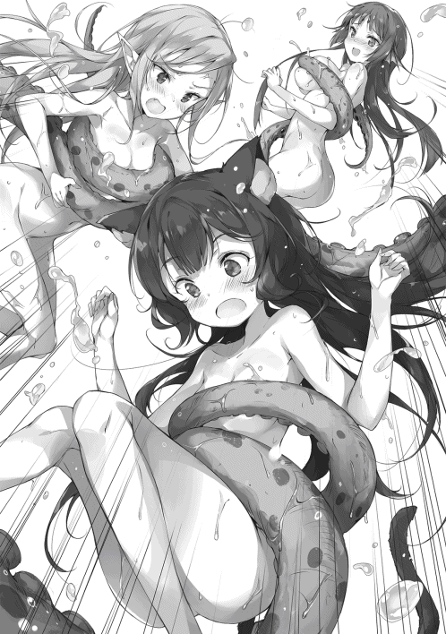
どうやらキング・イカⅡ世の触腕には、正気を犯す毒素か何かが混じっているらしい。
「まずいな。混乱しているようだ。早く救出せねば」
「混乱なのでしょうか？」
何と見る目のない監察官だ。
いや、そんなことより、
「ユースティア、次の攻撃が来る。気をつけろ！」
「え？」
モンスターの方へ顔を向ける。
キング・イカⅡ世は体を痙攣させ、まるで力を溜めているように見えた。
「は、はい。ですが、あの敵は一体何をするつもりなのでしょうか？」
が、それに答えている暇はない。
なぜなら、俺は大急ぎで湯の中に潜ったからである。
突然のことに女が驚きの表情を浮かべたが、俺は悲しみを押し殺し、目を伏せる事しかできなかった。
そう、人はすべてを守ることは出来ないのだ。
と、次の瞬間、
「うっひゃああああああああああああああ⁉」
キング・イカⅡ世の吐いたイカスミに飲み込まれ、ユースティアの絶叫が露天風呂に響いた。
「尊い犠牲だったな」
キング・イカⅡ世を倒した俺は、哀悼の意を表した。
腕には救出したリュシアがいる。
なぜか真っ赤になって固まっているが、恐らく救出されてほっとしているからだろう。
しばらく放っておくことにする。
なお、エリンは先ほど、どこかに逃げて行ってしまった。
「別に死んでいませんので哀悼は不適当です。......ですが、よくも見捨てましたね、ナオミ・マサツグ！」
真っ黒なユースティアが抗議して来た。
シーが頭から水をざぶざぶとかけて洗い流している。
「いちおう忠告はしただろうが。というか、お前的にも願ったりかなったりのはずだぞ？」
「はぁ？ 一体何を言っているのですか？」
「イカスミは美容に良いからな。肌荒れや傷んだ髪の毛も回復してくれるだろう」
「む？ いえ、そんなことはどうでも宜しい。私はあなたの所業にこそ問題を感じているのですから。......とはいえ、真偽は定かにしなくてはなりません、ライメイル的に。それで、あなたの言うそれは本当ですか？」
「無論だ。保湿効果があり、肌に張りが出ると言われている」
「なるほど」
「ふむ。だが、ちょっと離れてもらえるか？ 生臭くて耐えられそうにない」
「やはりあなたは一晩牢屋で反省する必要があるようですね!!」
やれやれ。
それにしても、だ。
「シー、貴様、温泉になんてものを飼ってるんだ？ 女神ジョークにしても笑えんぞ？」
いや、笑えたことなど一度もないが。
とはいえ、今回は場合によっては怪我人が出たかもしれない。
「ご、誤解だよ！ さすがの私もそれくらい空気は読むし！ モンスターを飼育しようなんて思わないもん！」
何だと？
「では、誰があんな凶悪なモンスターを放し飼いにしたというのだ？」
「分からないよ......。確かに昨日まではいなかったんだけどなあ」
本気で分からないようだ。
「これはある意味、ナオミ・マサツグの管理不足と言えますね。孤児院の敷地内にモンスターがいるのに、その安全確保が出来ていなかったのですから」
真っ黒な監察官が腕組みをしながら言った。
やれやれ。
まあ、こいつの意見などどうでもいい。
だが、それよりも、どうしてこんなモンスターが孤児院の温泉にいたのか。それがやけに気になるのだった。
あと、
（何だろうな、この匂いは......？）
まるで果実が少し腐ったような甘ったるい匂いが、そこはかとなく漂っていたのである。
夕食はイカスミ海鮮スパゲティになった。
それを食べてしばらくすれば就寝時間だ。
「一緒に寝るなどダメに決まっているでしょう！」
と、本日何度目かのユースティアの怒声がルーナ孤児院に鳴り響いた。
「だが、こいつらは夜泣きと寝ぼけが酷いぞ？」
「そのくらい何ですか！ ならば、今日から私が彼女たちと一緒に寝るようにしましょう！ 嫁入り前の少女が男と同衾するなどあってはならぬことです！」
「うーむ」
まあ、その通りである。
何となくオチも読めるが......。
「さあ、行きましょう、リュシアさん、エリンさん！」
「えーっと......」
「あ〜」
二人は微妙な表情でこちらを見るが、俺は肩をすくめる。
もともと俺が望んで一緒に眠っている訳ではない。
その肩代わりをするというのなら、止める理由はないだろう。
「私がいる限り犯罪は未然に防がれると知りなさい」
などと啖呵を切ってユースティアたちは出て行った。
やれやれ。
「じゃあ、マー君。私たちは一緒に寝よっか」
「いいだろう。俺はベッドを使うから、お前は廊下で寝ろ」
「せめて同じ部屋の床とかでお願いしたいなって！」
そんなこんなで夜は更けて行った。
──そして深夜......
「うひゃああああああああああああ⁉」
ルーナ孤児院に浅はかな女の絶叫が轟いたのだった。
「ご主人様、やっぱり無理でした......」
「いやあ危ねえ危ねえ。もう少しで風魔法を直撃させちまうところだったぜ」
枕を抱いてリュシアとエリンがやって来た。
遅れてユースティアもやって来る。
「そのボサボサの頭はどうした？」
「エリンさんの風魔法をかわしていたら、このようなことに」
よく無事で済んだものだ。
まあ、ナイフは取り上げてあるから大事にはならないと考えていたが。
「それで、何をしに来た？ あれほど偉そうなことを言ったんだ？ 自分で何とかしたらどうだ？」
「くっ......」
ユースティアは悔しそうな顔をするが、
「......申し訳ありませんでした。事情も知らず勝手なことを言いました。二人ともあなたがいなければ満足な睡眠がとれないとの事。幼少時の睡眠は健康に欠かせないもの。ならば、あなたと一緒に眠るのが適切でしょう」
ふん、と俺は鼻を鳴らす。
「そのような謝罪で、俺が『はい、そうですか』とでも言うと思っているのか？ 地面に頭をこすりつけてお願いすれば考えてやらんでもないが......」
「むっ、こうすればよいのですか？」
ユースティアはそう言うと、ためらないなく土下座をする。
「......ちっ、やめんか馬鹿が！」
「あなたがやれと言ったのでしょうに！」
俺はもう一度舌打ちする。
そうだ。こいつはこういう女だった。
馬鹿で間抜けで不器用だが、自分を誤魔化すことだけは絶対にしないのだ。
まったく、面倒な女だな！
「もういい。分かった。俺だって眠い。さっさとリュシアとエリンはベッドに入れ。明日も早いんだからな」
「ナオミ・マサツグ......ええ、分かりました」
そう言って、ユースティアはごそごそと持ってきた枕をベッドに置こうとする。
「......なぜ貴様までベッドに入ろうとしている？」
と、ユースティアは不思議そうな表情を浮かべて、
「無論、私も一緒に寝るためです。リュシアさんとエリンさんの安全はこの監察官が預かりました！」
「なぜ俺がお前と一緒に寝なくてはならん⁉」
そんな絶叫がルーナ孤児院に鳴り響いた。
「おい、せまいぞ馬鹿正義女！」
「それはこちらの台詞です。ナオミ・マサツグ。もう少し詰められないのですか？ あと、私は馬鹿ではありませんので訂正なさい」
「ご主人様と密着して......ふにゃあ」
「おいマサツグ。も、もし困ってんなら、あたしにもっとくっついてもいいんだぜ？」
「ほ〜ら、お姉ちゃんフカフカだよお？」
大きいベッドとはいえ五人で眠るとさすがに狭い。というか、
「シー、貴様いつの間に現れた？ 廊下で寝ていたはずだが？」
「本当に廊下で眠らせていたのですか？」
ユースティアが咎めるように言うが、
「そもそもコイツは俺と眠る必要が全くない。だから自室に戻ればいいだけだ」
「そう言えばそうです。なぜ、そうされなかったのですか？ やはり、この男に強制されて......」
「大丈夫だよ、安心して！ 私は単にマー君と放置プレイっていう大人の遊びをしてただけだから！ 愛なくしては出来ない営みなんだ!!」
「なるほど、そういったプレイがあるのですね。不勉強ゆえ存じませんでしたが、男女の交際のあり方は様々と言いますからね」
「いつも尋常でなく頑固なくせに、なぜそこだけは寛容なんだ⁉」
というか、そんなプレイしとらんわ！
はあ。
「もう寝ろ。今、何時だと思っているんだ」
「「「はーい」」」
少女たちの声がそろう。
じきに寝息が立ち始めた。
朝からバタバタだったからな。俺ですらクタクタだ。ガキならば尚更だろう。
「えへへ、ご主人様......」
と、リュシアの声が聞こえた。まだ寝ていなかったらしい。
「寝ろと言ったはずだぞ？ どうかしたのか？」
「はい。あ、いえ、ちょっと嬉しくて眠れない感じなんです」
嬉しい？
俺は怪訝な表情を浮かべる。
「はい。こうやってご主人様とユースティアさんに一緒に寝てもらっていると、何だかお父さん、お母さんと眠っているみたいで」
「昔を思い出していたのか？」
リュシアはコクリと頷いた。
と、すぐに申し訳なさそうな表情を浮かべ、
「ごめんなさい。勝手にこんなこと思われてもご迷惑ですよね」
「別にお前の勝手にすればいい」
「え？」
リュシアが意外そうな声を上げた。
「お前が何を思おうが俺は俺だ。お前の父親にはなれないし、昔を取り戻してやることも出来ない。赤の他人に過ぎん」
「そう、ですよね......」
「だがな」
俺は続ける。
「俺は孤児院長でお前は孤児だ。親を失ったと言うなら、その分は俺が面倒をみてやる。ただ、それだけだ。無論、愛情などとは無縁だがな」
その程度のことしか出来ないと率直に伝えた。
が、
「私、本当に幸運でした」
そう言って微笑む。
「お父さんお母さんが死んじゃったのは悲しいですし、奴隷時代も大変でしたけど、ちゃんとご主人様と出会うことが出来たのですから」
「それで収支が見合っているとでもいうつもりか？」
リュシアは首を横に振り、
「いいえ。私は起こってしまった悲劇を埋め合わせることは出来ないと思うんです」
「......そうだな」
その通りだと思った。
俺も同じだ。
俺がこの先、いくら生きていこうと、過去に家族を失った事実は消えたりはしないだろう。
だが、
「ですが、こう思うのです」
そうリュシアは続ける。
「ご主人様に会えたことは、世界にちゃんと希望がある証拠なんだなって。悲劇だけではなくて、ちゃんと幸せなこともあるんだと。もちろん、私がその恩恵をいつまで享受できるのかは分かりません。将来、すごく不幸な目に遭うかもしれません。でも......」
彼女は微笑みながら、
「ここに希望があったことは本当なんです。それは私が将来どうなろうとも、消えない事実なんです」
そう言って俺の方を真っ直ぐに見た。
「......そうか」
俺は少し息をのんだ。まったく、『面倒をみてやる』などとは勘違いも甚だしい。
「太陽の様な女だな」
「え、今なんて......？」
「もう寝ろと言ったんだ。明日も早い。それに、お前が満足に動けないと、仕事全体に影響が出るからな」
「っ⁉ は、はい！ リュシア、了解しました！」
お休みなさい、ご主人様！
そう元気よく言って目を閉じる。
そうして、じきに寝息が聞こえて来た。やはり疲れていたのだろう。
やれやれ。
俺も嘆息し、目を閉じようとする。
が、
「ナオミ・マサツグ」
今度はユースティアの声が聞こえて来た。こいつも起きていたのか。
しかし、
「そのような美しい光景を見せられても......グス、私はまだあなたのことを......エッグ、完全に信用したわけではありませんからね......グスン」
なぜか鼻声でそれだけ言うと、顔を背けるようにプイッと寝返りを打ってしまうのだった。
（やれやれ、何を当たり前のことを）
俺は呆れる。
俺の様な男を信用する方が問題があるというものだ。何せ命じられたから院長をやっているだけで、本来ならば俺に最も向いていない仕事に違いないのだから。
（もしも、院長でなくなれば、こいつらの面倒など絶対に見ないだろう）
そんなことを考えながら目を閉じた。
じきに俺の意識も闇の中に溶けて行く。
こうして長い一日はやっと終わりを告げたのである。
「ユースティアはどこに行った？」
「あっ、はい。どうも本部から至急の呼び出しがあったそうです。朝イチで出て行かれました」
「そうか。静かになるのは良いが、昼食をどうするかな」
昼は魚料理にする予定だ。
余らせると足が早いため良くない。
「ショウガで煮込まれてはいかがでしょうか？ 一週間くらいなら持つと思いますが」
「打倒な案だな。佃煮でもいいが」
「砂糖が最近高いのでどうでしょうかね」
「ふむ......」
俺とリュシアが相談していると、
「あっ、おっ帰りなさーい」
シーの間抜けな声と玄関の扉が開かれる音がした。
どうやら、もう帰って来たようだ。
普通に焼いておけばいいか。
そんなことを考えていると、帰って来た勢いそのままでユースティアがやって来た。
そして、
「ナオミ・マサツグ！ あなたを国家転覆罪の容疑で逮捕します!!」
令状を掲げ、仁王立ちで宣言したのである。
「馬鹿だ馬鹿だと思っていたが、ここまで馬鹿だったとはな。お前の馬鹿さ加減を見誤っていたことは俺の不徳の致すところだ。そもそも俺が国家反逆など企てる理由がないだろうが」
「誰が馬鹿ですか！ この神聖なる法廷で事実に基づかない罵倒は心証を悪くしますよ！」
「ふん、知ったことか」
そう、ここはワルムズ王国の第三法廷。
国家転覆罪とか言う身に覚えない罪状で連行されたのだ。
ユースティアが腕組みして、
「と言うか、むしろ私の台詞です。枕を涙で濡らした昨夜の私を返して欲しいものです」
「涙がどうかしたのか？」
「何でもありません。ともかく、今回もタレコミがあったのです。やはりモルテッシモ宰相閣下があなたを拘束するよう命令を下されました」
またモルテッシモか。
俺は呆れる。暇な宰相もいるものだ。宰相と言えば国の準トップで、一介の孤児院長にかまけている暇など無いだろうに。
「で、またしても明確な証拠はないのか？」
「ええ。ですが日頃の素行によって真偽のほどは知れるでしょう。今回はそのために広く証人を呼び集めました」
「そうか。ならば俺が善良なる一市民でしかないことは直ぐに明らかになるだろうさ」
「善良の定義が違うのでしょうね」
ユースティアは肩をすくめた。
と、
「静粛に!!」
カンカン！ と木槌を打ち鳴らす音が法廷に鳴り響いた。
ユースティアとやり合っている内に裁判長が入廷していたようだ。
傍聴人も満席。
俺は容疑者席へ、ユースティアは検察席に移動する。
「これより開廷するのじゃ。まずは容疑内容について監察官ユースティア・ライメイルより説明しなさい」
裁判長のしわがれた声に、はい！ と言ってユースティアが立ち上がった。
「容疑は第一級犯罪『国家転覆罪』です!!」
傍聴人たちがざわついた。
「静粛に!! 監察官続けなさい」
「はい。本件は善意の第三者からモルテッシモ宰相閣下への告発があり判明したものです。証拠について宰相閣下からは知らされておりません。従いまして、今回は証人喚問を広く行うことで容疑者の罪状を確定したいと思います」
（ふん、まさに中世だな）
俺は皮肉気に唇を釣り上げる。
確実な物証や証拠がなくても、証言や自白に基づき罪を問うと言うのだ。現代日本のように証拠主義になったのは、極めて最近のことなのだと、そう授業で習ったことを思い出す。
（自分が体験する羽目になるとは思ってもみなかったがな！）
「さて監察官からは以上じゃな。では容疑者側の弁護人、入廷しなさい」
おっ、と俺は少し意外に思う。
（ちゃんと弁護人がいるのか）
若干だが胸をなでおろす。
魔女裁判ばりに一方的に言いがかりを付けられて終わりかと思っていたが、ちゃんと弁護人はいるらしい。
無論、そいつがどれほど力量を持っているかによるが、場合によっては無罪になる可能性もあると言うことだ。
扉が開き、そこから頼もしい味方たちが現れる。
「リュシアです。今日の晩御飯は『はんばーぐ』というお料理で、作り方をご主人様に教えてもらう予定なんです。絶対に無罪を証明して、必ずレシピを伝授頂きます!!」
「エリンだ。お前ら宜しく頼むぜ！ それにしても国家転覆を考えるなんて、とんでもねえことさ！ あたしには考えもつかねえなあ!! もちろん、マサツグがそんなこと考えるわきゃねえよ。一緒に住んでるあたしが言うんだから間違いねえぜ！」
「シーだよ。私はマー君のお姉ちゃん兼愛人でーす！ 愛しい人との何気ない日常を守るために弁護を引き受けました。今こそ愛する人を守るため、必殺の女神弁護士、始めちゃいま〜す♪」
「まあ、そうだろうな」
頭の悪い口上に脱力しながらも、妙に納得する。
俺の弁護を引き受ける奇特な奴らなどコイツら以外いないだろう。
何せ相手は宰相なのだ。向こう側に回す相手ではない。
あと、エリンとシーは偽証罪で現行犯逮捕すべきだな。
「では、まず第一の証人です!!」
と、早速ユースティアが一人目の証人を召喚する声が法廷に響いた。
◆ 第一証人 シルビィ・リスキス（冒険者ギルド ギルドマスター代行）
「ちっ、疫病神が来たか......」
「ひっどいですわ、ナオミさんったらぁ。せーかく、このシルビィちゃんが遊びに参りましたのに〜」
そう言ってニコリ、と微笑んだ。
プラチナ色の髪を長く伸ばした少女で、やや吊り上がった猫の様な瞳をしている。
一見するとどこかの令嬢の様な優雅さを持つ娘だが、実態はその逆だ。
人の弱みを握り、自分の利益へと還元することを得手とした毒婦である。
冒険者ギルドのマスターを父に持ち、コイツも幹部の一人。親の七光で幹部を務めているのならばまだ良かったのだが、残念ながらそうではない。
そのあくどさという才覚によって座を射止めた、れっきとした強者である。
ユースティアがたしなめるように、
「被告人、証人とも口を慎みなさい。ここをどこだと心得ているのですか？ 証人、容疑者の普段の素行について早急に証言してください」
「はいはい、これだから堅物は嫌なのですわぁ。心に余裕がないのですもの〜」
「なっ⁉」
ユースティアが眉を吊り上げる。
「冒険者ギルドの様な無秩序な組織の方に言われる筋合いはありません！ あなたが不真面目すぎるだけです！」
「はいはい、そうですわねえ。ところでユースティアさんっておっしゃいましたっけ？ 今は証言をさせて頂く時間と伺いましたので、その無駄な口を閉じて頂けますかあ？ あなたの堅苦しいお言葉を聞くと、肩が凝ってしまいそうですわぁ」
「あなたが挑発的な言動を繰り返すからでしょうが！ これ以上侮辱するようなら許しませんよ！ って、ナオミ・マサツグ！......ではなく、被告人！ 何をさっきからニヤニヤとしているのですか!! 面白いことなど一つもありませんよ！」
「ふっ、いやいや、これはいい見世物だと思ってな。そのままつぶし合ってくれれば、最も厄介な二人が共倒れになる。楽しくない訳がない」
「無礼な！ こんないい加減な女と一緒の立ち位置などと！」
「その通りですわぁ！ こんな面白味の欠片もない女と比べられるだけで侮辱ですわ。訂正してください！ ナオミ様ったらまったく私の乙女心を......」
「静粛に！ 静粛にするのじゃ！ 証人はさっさと証言をしなさい！ また監察官及び被告人も必要のない発言は控えるように!!」
カンカン！ と木槌を打ち鳴らす音が法廷に鳴り響いた。
全くその通りである。
「こ、この私が裁判官に注意されるなんて」
「うふふふふ、お似合いですわぁ」
ショックに打ち震えているユースティアをニヤニヤと眺めてから、シルビィが証言を始めた。
「コホンっと。ナオミ様ですが、それはもう素晴らしいお人です。言語に絶するとは、まさにこのこと。聖人君子が服を着て歩いているようなお人なのですものぉ」
本当のことだな。俺は頷く。
ふむ、と裁判官が顎を撫でながら、
「証人の発言は尊重するが、具体的な根拠を示すように」
そうですわねえ、とシルビィは自分の髪をくるくると指に巻き付けながら、
「ナオミ様は先日の『ゴブリンの大移動』の際に、単身でゴブリン王に挑み、そして見事これを打倒されましたわぁ。いわば我が国の、いいえ、世界の救世主様なのですぅ。なのにナオミ様ったら、それを目立ちたくないから、なんて言うおふざけにも程がある理由で秘密にしろって言うんですよ。ああん！ わたくし、そんな風に口留めされたら、ますます言いたくなってしまいます！ 言いたい、言いたい、声を大にして言いたいのですわぁ！ はあ、それにしても、こんな無体な仕打ちをするナオミ様は、なんていけずなお方なのでしょう。でも好き」
「思いっきり言ってるだろうが！」
俺は思わず突っ込む。
だが、
「......」
法廷には沈黙が落ちる。
しばらくして裁判長が咳ばらいをして、
「証人、悪ふざけはやめなさい。先ほどから冗談が過ぎるのじゃ。それ以上続ける様なら法廷侮辱罪で逮捕することになるぞよ？」
「あらん、本当のことですのにねえ？」
こちらを見て、ペロッと舌を出した。
本当にこの女は......。
「まあ、宜しいですわ。いつだって天才と言うのは凡人には理解されないものですものねえ。うふふ、それで、日頃の素行でしたわね？ うーん、そうですねえ、毎日いろんな女性にアプローチされていてモテモテですわねえ」
はぁ？
それこそ事実無根だろう。
今度こそ逮捕だな。
が、何とか復活したユースティアが口を開き、
「それは女性関係にだらしがない、と言う事ですね？ 国家転覆罪を企てる犯人らしい、不道徳な行為です！」
「モテないユースティアさんは黙っていらっしゃった方が宜しいと思いますけれども......」
「だ、誰がモテないですか⁉ た、確かに男性からは、なぜか敬遠されてしまっているようですが......って、そんな挑発には乗りませんよ！ さあ、被告人、これに関する申し開きがありますか⁉」
申し開きも何も、
「俺に言い寄る女など誰もいないのだが？」
「異議あり!!」
リュシアが勢いよく立ち上がる。
「異議ありです！ 今の発言には虚偽があると思います！」
「おい、弁護人。弁護はどうした？」
俺は思わず突っ込む。
「す、すみません、ご主人様、つい」
そう言って座ろうとする。
しかし、
「待て、俺の発言に嘘があると言ったな？ ならば最後まで言え。気になるだろう」
すると、なぜかリュシアは途端に顔を真っ赤にして、耳をパタパタ、尻尾をブンブンと振り始める。
「そ、そんな、こんなにたくさんの人がいる前で告白を、だなんて......」
「？」
何を言っている？
「皆の前で言わなければ意味がないだろう？ さあ、さっさと言え」
「はうう、そ、そんな......」
「？」
耳をクタリとさせる。
何を大げさな。俺の発言の虚偽とやらを告白するのがそれほど重大なことか？
ならば尚更聞き出さねば。
「いいから言え。これは院長命令だ」
「は、はひ⁉」
リュシアは視線をあちこちに泳がせながら、
「え、えっと、わ、わわ、わたし、わたしことリュシア＝オールドクラインは、ご主人様のことが、す、す、す、す......」
「す？」
巣？ 酢？
一体何が言いたいんだ？
「はっきり言わないか。す、何だ？」
「す、す、うう......」
「？」
「はうぅ......す、す、す、うう......。やっぱり言えません〜」
耳をペタリと伏せて顔を覆ってしまう。
「弁護人、発言は最後までするように。被告人の心証が悪くなりかねませんぞ？」
裁判長からも注意が飛んできた。
「はうう、そ、そんなぁ。はぁはぁ......わ、わ、わたしは、リュ、リュシアは......ご主人様のことが初めて会った時から、す、す、す、ス、ス......スープ......そう、スープ！ 毎朝ご主人様にスープを出して差し上げたかったと思っていたんです!!」
なぜかヤケクソ気味な感じでリュシアが叫んだ。
一方の俺は肩をこけさせる。
だが、納得だ。
何だ、そう言う事か。
確かにリュシアは俺に料理を教えてくれと迫って来ることが多い。
そのことを俺の言った「女に言い寄られる」と混同したのだろう。
しょせんガキだから無理もない。
だが、こんな時まで朝食メニューの提案とは。さすがリュシアだ。責任感の強い奴だな。
「好きにしろ。お前の料理なら毎日食べるのも悪くない」
「は、はい！ あっ、い、いえ、そうではなくて......え？ ほ、本当ですか、ご主人様!! リュシア頑張りますね！」
嬉しそうな顔をして弁護人が着席した。
ところで弁護はどうなった。
と、ユースティアが、
「......ご覧いただけましたでしょうか、公衆の面前で幼い少女に対して羞恥プレイを強要する破廉恥っぷり......。今のやり取りだけでも、この男の非道さが伝わります。こんな年端も行かぬ少女にまでその触手を伸ばしているのです。これだけでも逮捕する理由には十分でしょう」
「そうじゃそうじゃ！」
「儂ら全員の孫、リュシアちゃんを守れ!!」
「まだ嫁に行くには早すぎる！」
なぜか聴衆の中に混じっていた爺さん連中が声をそろえて援護射撃する。
言っていることは意味不明だが。
「何を訳の分からん事を......。そもそも、なぜいきなりコイツが俺の嫁に来る話になる？」
今は料理の話をしていたというのに。
「なんじゃと⁉ リュシアちゃんの何が不満なんじゃ！ こんな良い娘はおらんぞ。本来なら喜んで嫁に迎えるのが普通じゃろうが!! 不満があるなら言ってみよ!!」
「いいや、儂の目の黒いうちは認められん。それでも嫁に欲しいと言うのなら、この儂を倒してからにするのじゃ!!」
「然り！ 然り！」
なぜかヒートアップしていく。
「一体どうしろと言うんだ......」
「静粛に！ 静粛に！ 勝手な発言は即刻止めなさい!!」
裁判長の怒声が飛んだ。
もっともである。
「規定時間の都合上、議事を進行するのじゃ！ ユースティア監察官、次の証人を呼びなさい！ ただし、次の証人は真摯な発言を心掛けさせなさい！」
「は、はい！ 次の証人は大丈夫です！ 社会的な地位もあり証言にも信頼がおけます。このたび召喚した証人は不適切でした。やはり神聖なる法廷にギルドの人間などを呼ぶべきではありませんでしたね。このユースティア・ライメイル、議場を騒がせてしまったことについて深い反省と忸怩たる思いを胸に......」
「ない胸にどうやって思いを抱くのでしょうか〜。それよりもナッオミさーん。わたし飽きちゃいました〜。こーんな頭の固い監察官がいる場所にいたら窒息して死んでしまいますわ〜。ね〜、だから一緒にデンジャラスな体験をアバンチュールしに行きましょうよ〜」
「あなたは即刻出ていきなさい！」
警備兵に引っ張られるようにしてシルビィが退廷させられて行った。
◆ 第二証人 エリンちゃんファンクラブ会員Ｎｏ．００１ 鋼のエリック
「げえ⁉」
エリンの悲鳴が法廷に響き渡った。
「ふ、孤高なる可憐な花よ。このような殺風景な場所は、美しい貴女には似つかわしくない。さあ、繊手をこちらへ。この私、エリンちゃんファンクラブ会長（Ｎｏ．００１）鋼のエリックが、陽の当たる場所へとお連れ致します」
「きもい」
「何と⁉」
鋼のエリックがショックで唖然とした表情を浮かべる。
「てか、こんなとこまで来んなよ！ ストーカーかよ!!」
エリンが抗議の声を上げた。
が、男はフッと微笑むと、
「なに、我が可憐なる君が困っていると、そこの監察官から聞いたものでね。騎士団長として困っている者がいるのなら見過ごすわけには行かないと考えたまで」
そう言って額にかかっていた髪を払う。
と、ユースティアが唖然とした表情を浮かべながら、
「すみません、今わたしの理解を軽く超越するやりとりが、刹那の間にあったように思ったのですが。えっと、なんですか、私がお呼びしたのは騎士団長エリック様。国王からの信任が厚く、兵士や市民からも敬慕の念を抱かれ、鋼の異名を持つワルムズ王国一の剣士だったはずなのですが......」
「無論です、レディ。ですが一つお忘れですよ。私の最高の栄誉職であるエリンちゃんファンクラブ会長という肩書です。我が美しき花を守る騎士の称号を」
「捨ててしまいなさい！ そんな称号！」
バン！ と机を叩きながら言った。
が、エリックはニコニコと嫌味の無いスマイルを浮かべながら、
「ははは、ご冗談を。この鋼のエリック。最後まで美しき花を守る盾となりましょう」
聞き流していた。
ユースティアは頭を抱えてから、切り替えるように頭をブンブンと振ると、
「と、とにかく、ファンクラブの活動は後にしてください。今はそこのナオミ・マサツグ被告人の公判中です。今回、エリック様からナオミ・マサツグ被告人について、言いたいことがあると伺ったので召喚させて頂いた訳ですから」
眉間にしわを寄せる裁判長の方を見て、冷や汗をかきながら言った。
「ええ、そうでしたね」
と、先ほどとは打って変わって真剣な表情になる。
騎士団長という肩書が偽物ではないと思わせる、鬼気迫るものだ。
そして、
「院長！ いい加減、エリンさんと私のお付き合いを許して頂けないでしょうか⁉ 私の思いは日ごろ伝えている通り、不純なき誠実なもの！ いかに院長であろうと阻む権利はないはずだ!!」
ユースティアが机に頭を突っ伏していた。
そう、こいつと俺は面識がある。
割と頻繁に孤児院を訪ねて来ては、エリンにラブコールを送ろうとするのだ。
俺は深いため息を吐いてから、
「俺的にはどうでもいいんだが、とりあえず諦めろ」
歳の差的に。
「なぜなのです⁉ 私の真剣さが伝わっていないのですか⁉ そのためにわざわざ、こうして神聖な法廷までやって来たというのに!!」
「その真剣さは余計まずいな」
不純なき誠実な瞳で俺に訴えかけてくる。
そう、コイツは俺が珍しくも認める善人（ちょっと行き過ぎではあるが）なのだが、非常に残念な男でもある。
「そもそも、お前なら選り取り見取りだろうに......。何でこんな喋れば人を罵倒する地雷女がいいんだ？」
「何を言います！ そこがいいんじゃないですか!! 誰にも分け隔てなく接し、思ったことを素直に口にするのは純粋さの表れです。そして、どこか漂う気品、清らかな瞳、愛らしい表情、ああ、天上の女神を誤想するもやむなし!!」
「異議あり！」
と、その時、議場に鋭い声が上がった。
「異議ありよ！ だって、女神はお姉ちゃんなんだから！」
シーがドヤ顔でエリックに、ビシリと指を突きつけていた。
が、男は優しく微笑み、
「あ、ええ......。ふふ、そうですね。女性は誰しも女神になれる素質を持っています。レディ、貴女も今後の努力次第では、そう呼ばれる日も来るでしょう」
「本物だよ⁉ ていうか、慰められるのって余計つらいことが分かりました!!」
シーの嘆きが法廷に響く。
相変わらずやかましい。
「ハッ、もしや、エリンさん。実は既に心に決めた方がいらっしゃるのですか⁉」
急にエリックが妙なことを言いだした。
いや、コイツにそんな奴はいないだろう。
公言出来ないことだが、こいつはエルフの国の元王女で、今はバルク帝国に復讐を誓う身だ。
誰かを好きになっている暇などないだろう。
と、やはりエリンは怒りに顔を赤くしながら、
「は、はあ⁉ ば、ばっかやろ！ なに訳のわかんないこと言ってやがる！ 頭ゆだってんじゃねえか⁉」
そう激しく反論する。
思った通りの様だな。
が、エリックは怪訝な表情を浮かべながら、
「ふむ、本当でしょうか？ 疑う訳ではないのですが、私にはエリンさんが嘘を言っている様に思えるのですが......」
などと言う。
「うるせーぞ、馬鹿！」
見当違いの追及にいい加減苛立ったのか、エリンは怒鳴る様にそう言うと、プイっと顔を隠すように背けた。
ふむ。
「エリック騎士団長、そこはお前の勘違いだ。こいつに好きな奴などいないさ。俺が保証しよう」
「そう、ですか。いえ、院長がそう言うのならば、そうなのでしょうね」
やっと納得する。
やれやれ、なぜ俺がフォローなどしてやらねばならないのか。手間をかけさせる。
が、そう思っていると、なぜかエリンがゲシ、ゲシと、俺の座る椅子を蹴りつけて来た。
「おい、なんだ一体！」
「ベー、だ！ マサツグのばか、ばか!!」
そうして、今度こそプイッとそっぽを向いてしまう。
くそ、全く意味が分からんな、ガキと言うのは。
そんなやり取りをしていると、
「静粛にしなさい！」
復活したユースティが声を張り上げた。
「エリック様！ そういった個人的なご事情は法廷の外でご解決ください。今は公判中です。被告人の素行について証言してください！」
なるほど、それもそうですね、とエリックは素直に頷く。
「ですが院長の素行ですか。うーん......、ああ、そう言えばこの前、街のチンピラたちを十人くらい返り討ちにして、路地裏に捨ててましたね」
「それは暴力行為があったということですね⁉ 罪なき市民に暴力を振るったと......」
いえいえ、とエリックは首を振り、
「十人に囲まれて暴力も何もありませんよ。あれは明らかに正当防衛と言うもの。それを罪だと言うのは筋の通らない話です。むしろ、一介の戦士である私としては手合わせしたくなりますね。あの屈強な男たちを指先一つでダウンさせてしまうのですから！」
楽しそうに話す男にユースティアは深いため息を吐く。
「どうぞお好きになさってください。それこそ果し合いでもなされてはどうですか？」
「おお、それは良い。ははは。それではエリンさんへの交際申し込みも、騎士らしく果し合いで要求を通すことにしましょうか。一人の女性を巡って拳を合わせるとは心が躍る！ と、まあ言いたいところですが、実は既に挑戦済みなのですよ、レディ。現時点で零勝十敗といった惨憺たる有様なのです。や、あきらめるのは騎士道に反しますね。今度こそ勝ってエリンさんとのお付き合いを認めてもらいましょう！」
そう言って爽やかに笑うのだった。
ユースティアが怪訝な表情を浮かべる。
「は？ 零勝？ 十敗？ どういう意味でしょうか？......ああ、エリック様が十勝という意味ですね。ん？ でも、それだと意味が通らない？」
ちっ、と俺は舌打ちし、
「エリック。その話は後にしろ。この裁判が終わったら幾らでも手合わせしてやる」
「おお、本当ですか！ 最近は面倒くさいと言って、めっきり取り合ってくれなかったのに！ 理由は分かりませんが感謝しますよ、院長」
やれやれ、こいつは本当に強いので、余りやりたくないのだがな......。
そんなやり取りをし終わると、エリックはもう言うこともなくなったのか、「ではこの後に軍事教練がありますので失礼しますよ」などと言って爽やかに退廷したのだった。
（ふうむ、それにしても、この裁判......）
俺は首を傾げながら、
「ユースティア、貴様、もう少し証人たちと打ち合わせをしておいてはどうだ？ 俺を有罪にしたいのだろう？ はっきり言ってグダグダではないか」
もっと監察官側に有利な証言をする証人を連れてくるべきだ。
いや無論、俺としては不利な発言をされるのは困るのだが。
しかし、ユースティアは怪訝な表情を浮かべ、
「は？ 誰があなたを有罪にしたいなどと言いましたか？」
と言ったのだった。
は？
「違うのか？」
「当たり前でしょう。私は真実を裁判で明らかにしたいだけです。無論、個人的にはあなたの性根は蛇のとぐろよりも曲がっており、犯罪者になる素養が豊かな問題人物だと認識しています」
「喧嘩を売っているのか？」
ですが、とユースティアは無視して続ける。
「だからと言って、口裏を合わせて証言を操作してしまっては、裁判の公平性が担保出来ません。あくまで証人は中立の立場で発言するべきです。でなければ、冤罪を誘発させる恐れもありますからね」
そう生真面目に告げるのだった。
フッ......と、俺は思わず笑ってしまう。
「ああ！ 今、鼻で笑いましたね！ 何が可笑しいと言うのですか!!」
「いや、お前は実に頭の固いバカな女だと再確認しただけだ」
「何ですって⁉」
女の怒声が法廷に響いた。
「取り消しなさいナオミ・マサツグ！ いえ、いいえ、次の証人こそ貴方の悪事を暴いてくれるでしょう。次の証人は自称世界一位の娼婦。あなたに散々な目に遭わされたと言っていて......」
と、女がまくし立てているところへ、
「いつまで茶番に興じているつもりか？ 早くそのめざわりな男の首を刈りとるがよい」
「おお、あなた様は......」
冷徹な女の声と、裁判長の驚愕に満ちた声が割り込んだ。
いつの間にか証言台には、黒衣のドレスを着た若い女の姿があったのである。
それと同時に、どこかで嗅いだことがある、甘ったるい匂いが議場に満ちたのだった。
◆ 第三証人 世界一位の娼婦 ？？？？？？
「ちょっと、次は私の出番のはずでしょ？ 離しなさいよってキャアアアア！」
どこかで聞いたことのある自称世界一位の娼婦の声が遠ざかる中、黒衣の女は気にした様子もなく続けた。
「裁判長、早く有罪の判決を下すがよい。死刑でも自死させるのでも何でも構わぬ。ああ、なぜわざわざ、わらわがこのような場所に自ら赴かねばならないのか理解に苦しむ。王の意向と言えども、たかだか虫を一匹潰すためにわらわ自らなどとは」
憂いを帯びたため息を吐く。
その女はどこまでも黒かった。
地を這う様な漆黒の髪、光を捕えて離さない昏い瞳、彼女の周囲の空気だけが停滞しているかのように澱んでいる。
「モ、モルテッシモ宰相閣下......」
ユースティアの唖然とした声が響いた。
（こいつが、モルテッシモ......）
俺は改めて女の方を見る。
（というか、女だったのか⁉）
てっきり男かと思っていたのだが。
モルテッシモは傲然とこちらを睥睨している。
（いや、違う）
こいつは俺たちを見ていない。
直感的にそう確信した。
「で、ですが、まだ公判中でして......。証拠もなしに有罪には......。ああ、いえ、しかし宰相閣下がおっしゃるのでしたら、考えなくてはなりませんな......」
と、裁判長が言った。
ふん、と俺は鼻を鳴らす。
（所詮、権力の前にはルールなどあって無いようなものか）
俺は憤慨するでもなく、事実を受け止める。
こんなことで怒る程、残念ながら純粋ではない。
むしろ、裁判が始まった時点で、さっさと有罪にされるのかと思っていた。
だが、思った以上に公平な裁判だったので（ユースティアが俺の予想をはるかに上回る馬鹿だったおかげで）、ここまで大人しく付き合ってやったのだ。
が、こうして魔女裁判が開始されると言うのならば、俺も大人しくしてやる謂れはない。
（やってもいないことを、さもやったように言われることは構わない）
そんなことは慣れっこだ。
それに、無い名誉は失われようもない。
だから問題ない。
（だが、不当な損失が発生するならば許容できない）
そればかりは慣れることが出来ない。
失うこと、よりどころを失うこと、奪われること。
そうしたことを、俺は一切合切否定する。
二度と俺はそれを繰り返すつもりはない。
俺から何かを奪おうとする者がいるなら、俺はその相手を全力で否定することにしよう。
俺は心の中で臨戦態勢を取ったのだった。
しかし、
「裁判......。ふうむ、なるほど。証拠が必要、ということか？ それは物証が必要ということか？ それとも所詮人間のやる裁判、いい加減なものに違いない。恐らく胡乱な証言に基づき命をやり取りするのであろうなぁ。その価値すら知らぬのに」
先ほどまでと同様の傲然とした口調であるが、その口調にはいささかの驚きが含まれていた。
それは、まるで裁判と言う制度があること自体に驚いているかのようだ。
「は、はあ。も、もちろん閣下のおっしゃる通り、基本的には物証こそを最大の証拠としますじゃ。しかし、必ずしもそれだけでなく、普段の素行などから罪を認定することもございます。此度の裁判がまさにそれです。閣下よりその男に国家転覆の疑いがあると伺いましたが物証はなく、普段の素行から罪を認定する予定ですじゃ」
「ほう、わらわがか？ そのようなことを口にしたと？ ふむ、そうだったかな？ わらわは単にそこな男を捕えて首を刎ねるよう周りの者に伝えたに過ぎぬが。ああ、いや、思い出したぞ。そう言えばその時、周りの者が罪の名を問うてきたのじゃ。わらわにはなぜそんなことを聞くのか分からなかったが、ひとまず最も重い罪と答えのじゃ。まさか、こうして裁判と言う制度が人の世に存在するなど予想できぬからなあ」
淡々と訳の分からないセリフを吐く。
「そ、それはつまり、ナオミ・マサツグに国家転覆罪の疑いがあると言うのは誤解なのですね⁉」
ユースティアが声を上げた。
「国家転覆を計画していたかどうかといった些事について、わらわは関知してはおらぬ。だが証拠があるかと言われれば無いぞよ？」
「そ、そうですか！ 証拠が無いと言うことであれば、この男の罪を問うことは出来ませんね」
なぜか、どこか安堵したかのように言う。
「良かったです！ ご主人様!!」
「あたしたちの弁護が生きたな！」
「当然よね、これこそ女神の加護の力ってものよ！」
「お前たちの発言に弁護の要素など、一切無かったように思うが......」
孤児たちが喜びの声を上げた。
が、その様子を表情も変えずに眺めていたモルテッシモが、
「......で、その男の首はいつ胴から離れるのじゃ？」
そう不思議そうに言ったのである。
「え？ い、いえモルテッシモ宰相閣下。罪が認定出来ない以上、刑罰を科すことは出来ません。それこそ法律違反になってしまいますので......」
ユースティアが困惑して言う。
だがモルテッシモもまた困惑した声で、
「何と、まさかお前たちの様な虫けらから法などと言う言葉が出てくるとは......。このモルテの予想を少々超えておる」
ぶつぶつと呟き、
「少しはまともな思考能力を有しているということか？ ややもすれば、多少の倫理観すらも備えることに成功したか？ 一万年前とは違うものな」
そう言って観察するような視線をこちらに投げかけてくる。
その言動にユースティアも裁判長も、そしてリュシアたちもどうして良いのか分からず戸惑うばかりだ。成り行きを見守っていた傍聴人たちも、次第にざわつき始めている。
が、
「お前はさっきから何を言っている。下らない繰り言は独りでやれ。それとも愚痴の漏らし方すら知らないアホなのか？」
俺がそんなものに付き合う義理はない。
それどころか、こちらは被害者だ。
宰相であろうが詫びを入れさせる必要があるだろう。
「先に俺に謝罪をするべきではないのか？ 無罪の人間を裁判にかけるような真似をしたんだ。国の準トップがそれでは示しがつくまい？ 今ならば、許してやらんこともないぞ？」
「ナ、ナオミ・マサツグ、宰相閣下に何という口をきくのです。不敬罪に当たりますよ！」
「お前は黙っていろ」
無論、そうだろう。
権力者とは権威こそがその拠り所だ。
ならば、それが脅かされる事態ともなれば黙ってはいられまい。
（......が、言いたいことは言えばよいのだ）
それで立場が悪くなるとか、不利になるだとか、そんなことは気にしなくて良い。
なぜなら、口で呼び込む災いなど大したものではないからだ。
本当の災いとは気づかない内に外堀を埋め、絶対に逃れられない陥穽として配置されている。
だから、気にせず悪態を吐けばよい。それで多少でも自分の気が晴れるなら尚更だ。
たとえ、相手を激怒させるのだとしても。
......が、女は初めて表情らしい表情......キョトンとした顔をして、
「このモルテが謝罪を？ 虫けらである貴様に対してか？」
そう純粋に疑問を口にしたのである。
「さっきからあんた、あんまりにも口が酷いぜ！ 幾ら宰相なんちゃらが偉いからって、人を虫けら扱いするなんてあんまりじゃねえか！」
「そうだよ！ お姉ちゃんだって、せいぜい犬畜生扱いなのよ！ 虫じゃあ餌をもらえないよ！」
「シーちゃんはややこしいので今は黙っていて下さいね？」
「はい」
孤児たちが我慢の限界とばかりに反論した。
裁判長やユースティアさえも難しい顔をしている。聴衆も発言こそしないものの、モルテッシモの言葉を不快に捉えているようだ。
だが俺は、
（なるほど）
と、むしろ納得していた。
最初からあったコイツへの違和感の正体がやっと分かったからだ。
それは、
「お前たちトンチンカンな反論はやめろ。的外れにもほどがあるぞ」
その言葉に孤児たちは驚いた表情を浮かべて、
「で、でもご主人様。さっきからあの方は、私たちのことを虫だ何だとひどい事ばかり言って」
「勘違いするな。何も、この女は別に俺たちを侮っている訳ではない」
「えっ、そ、そうでしょうか。で、でも......」
納得いかなさそうに、リュシアが困った顔をする。
まあ、そうだろう。
だが、本当にこいつは俺たちを見下しているわけではないのだ。
侮ってもいない。
なぜなら、
「単にこいつは、本当に、俺たちのことを虫か何かと認識しているだけなんだからな」
「......え？」
リュシアは俺の言った言葉の意味が分からないのか、声を上げる。
「やっぱり一緒じゃねえか！ 俺たちを虫だ何だと見下してやがるんだろ⁉」
「全然違う」
エリンが反論して来たが、俺はそれを切って捨てる。
虫に対して見下したりする者はいないし、侮る奴もない。
そういった感情は対等な関係だからこそ発生するのだ。
だが、コイツの目は、そもそも俺たちを一切見ていない。
常にどこか遠い場所を見ている。
頭上を視線が通過しているのだ。
俺たちのことは、まるで足元の羽虫が動いているぐらいにしか感じていない。
だが、だからこそ解せない部分がある。
「お前は、一体何者だ？」
その言葉にモルテッシモは軽く吐息を漏らし、
「やはり何の理解も出来ぬ虫であったか。いや、何を期待していたのであろうな、わらわは。二度とは言わぬから耳を立てて聞くがよい。わらわの名は......」
が、俺はその言葉を遮り、
「貴様の名など興味はない。言ったはずだぞ。お前は何だ、とな」
「......ほう？」
俺の問いかけにモルテッシモは、意外そうにその大きな目を見開いた。
「わらわに名を問うているわけではないのか？」
「当然だ。俺が知りたいのは......。質問の意図は貴様が察している通りだ」
「ナ、ナオミ・マサツグ、あなたは何を言っている？」
ユースティアが戸惑った声を上げた。
いや、こいつだけではなく、全員が怪訝に思っているようだ。
が、問題ない。
なぜなら、檀上の黒き女にだけは、俺の意図が伝わっている。
「......人のような虫けらにも見るべき者がいるということかの？ 本質を見る能力を持つような者が。ふうむ、まさかのう」
首を傾げながら、モルテッシモは初めて俺を見た。
その態度は相変わらず傲然としたものだ。
が、今までの様子とは明らかに違う。
なぜなら、彼女は今、俺のことをしげしげと見つめているのだ。あたかも童女が初めて異性を見た時のような、好奇心の混ざった瞳で。
「まさか、わらわの正体に興味を持つような賢しらな虫がおるとは思わなんだ。ああ、いや、それはもはや虫とは言わぬか。確か、人であったな。ふむ、許せよ、お前。いや、お前様。......ちなみに名は何と言う？ 貴公の名を教えてくれぬか？」
「ナオミ・マサツグだ。処刑台に送ろうとする人間の名くらい覚えておけ。そして、質問を先にしたのは俺だぞ」
「それも貴様の言う通りよ。許せよ、ナオミ。ナオミ、ナオミか。ふふ、良き響きじゃの♪」
今までとは打って変わって、本当の少女のように微笑を浮かべる。
が、すぐに難しそうな表情になり、
「ふうむ、だがな」
困ったように眉根を寄せた。
「何者かと問われても、答える術は持っていないのだがのう。愚かな者どもからは死神などと言われておるが、それもわらわの一つの側面に過ぎん。お前たち人の作った未熟な言葉では、この身を言い表すことなど到底不可能よ」
「ふん、理屈の多い女だな。貴様がややこしい存在なのを棚に上げているだけだろうが。それに、今の答えで十分だ」
「む、そうあっさりと言われてしまうのは気に入らぬが、おおいにその通りよ。ふふふ、やはり愉快な男よな。このモルテの正体を察した上に、肝まで据わっておるとは」
機嫌良さげにそう言う。
が、俺は憮然としたままだ。
当然だろう。
俺の悪い予感が当たったからだ。
思った通り、こいつは人間ではない。
人間にはコイツのような視座を持つことは出来ない。
ごくごく自然に俺たちのことを路傍の石や虫けらのように見ている。
そうしたことは普通、人間には出来ないことだ。
が、こいつの態度は極めて自然だった。自然に俺たちの尊厳を無視していた。
それはある意味、神の視座だ。
だから問うた。お前は誰かと。
そして、回答は思った通り......。いや、思った以上に最悪のものだったというわけだ。
「神は神でも、死神とはな」
吐き捨てたくなる回答だ。
「死神？」
「どういう意味だ？」
「モ、モルテッシモ閣下、冗談はおよしくだされ！」
が、周囲の者たちは何かの例え話か、もしくは理解自体が出来なかったらしい。
まあ、それが普通というものだろう。羨ましいことだ。
「だが、だからこそ、わらわは悲しい」
彼女はそう言うと、右手をゆっくりと掲げた。
と、いつの間にかその手には大きな赤黒い鎌が収まっている。
「久方ぶりに遊興を共にしても良いと思う相手と出会ったと言うのに、王より下された命を遂行せねばならぬのだからな」
王。
王様か。そう言えば、先ほども一度口にしていたな。
不服ながらも法廷に赴いたのは、王の意向があったからだ、と。
「あの愚かなワルムズ王に義理立てするとは、物好きな忠臣もいたものだ」
俺は鼻で嗤う。
が、
「ワルムズ？ はて、それは一体誰じゃ？」
「......なに？」
俺の驚いた声に、モルテッシモは「ああ」と呟き、
「ああ、なんじゃ。虫けらの王のことか。ふふふ、賢しい者も道化を演じることがあるのじゃな。虫の王ならば更に愚かな虫であろうに」
「それには同意するがな。だが、ならばお前が戴く王とは一体誰......」
「ふむ、悪いが時間切れじゃな、ナオミよ」
彼女はそう言うと大鎌を振り上げる。
片手で楽々と。
が、通常それがそのように扱えるような軽量の得物でないことは明らかだ。
先ほどまで大鎌の重量を支えていた石畳は窪みをたたえている。
数十トンの重さがあるのだ！
「院長のおらぬ孤児院など、孤児院ではあるまい。王の指示ではまず孤児院という概念を消失させよ、とのことであったが......まあ、順番は逆になるが、結果は変わらぬゆえ良いであろう。では、さらばじゃナオミよ。その魂は死神の特権として、永久の牢獄で愛でようぞ？」
「くっ⁉」
黒い瘴気の風が吹きつけてくる。
それは女と、女の掲げる鎌から噴き出ていた。
「ぐっ！」
「かは......」
「うげえ！」
傍聴人や裁判長からうめき声が上がる。
浴びるだけで命を蝕む恐ろしい死の風なのだ！
「うう、ご主人様......」
「マ、マサツグ......」
「うう、お姉ちゃんの女神パワーが吸い取られるぅ......。ちょっと眠るね」
孤児たちの苦しむ声も耳に届いた。
と、次の瞬間である。
パンッ──......
「......ほう。どうしたことか......。打ち消したのか？ わらわの死の風を」
目を丸くしたモルテッシモが俺の方を見ていた。
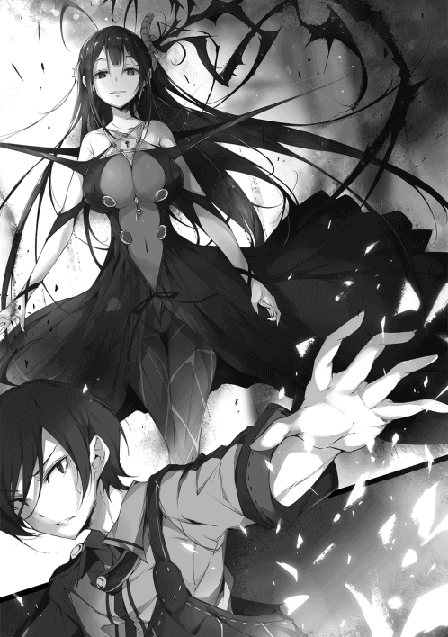
それはそうだろう。
なぜなら、今まで法廷に満ちていた死の瘴気が一瞬にして消失していたのだ。
気絶している傍聴人もいるが、基本的には無事である。
だが、それがいかにあり得ないことだったのかは、モルテッシモの......死神の表情が物語っていた。
「その力......まさか原初のスキルか？ 人の身で原典に届く者がおろうとは......」
「原初のスキル？」
聞きなれない言葉に思わず聞き返す。
「知らずに使っておったのか。呆れた奴じゃな。いや、案外世界とつながる者とはそのようなものかもしれんが」
訳の分からないことをぶつぶつと言ってから、
「なに、死神の独り言よ。それにどうやらナオミ、貴公の力の源は、その孤児たちを『守る』ことだと、この死神は悟った。原初のスキルはすなわち根源的概念の顕現。よほど、そこな仔たちが大事なのであろうなあ」
ふん。
「別に仕方なく面倒をみているだけだ。俺が孤児院長でなければ、こんな面倒なことをするつもりはない。あくまで義務を果たしているだけにすぎん」
「ならばな、ナオミ」
死神モルテッシモは掲げていた大鎌を一振りする。
その衝撃波がリュシアたちを襲おうとした。
しかし、
「ふん！」
俺も『守る』スキルを解放し、その攻撃を弾き飛ばす。その衝撃で天井が吹き飛ぶ。
「その程度の攻撃、俺には効かんぞ」
「分かっておる。いや、違うな」
彼女は頷きながら、
「それを確かめたまでじゃ、ナオミ。わらわがこのままではそなたに負けはせぬが、勝てもせぬことを、な」
なんだと？
「ゆえに」
死神はそう言うと、大鎌を出した時と同様、空間に融け込ませるようにして消失させる。
「まずは貴公の力の根源こそを削ぐとしよう。汝のスキルは人が生まれた際に与えられた原初たる才覚。じゃが、だからこそ、選ばれし者であるがゆえに、概念の根元さえ潰えればあっけなく終わる。なるほど、我が王はそのために孤児院を潰えさせよとお命じであったか。それに、我が王の復活にも役立つしの」
「？ それは一体どういう......」
が、俺の言葉を待たず、死神は漆黒の黒髪をふわりとなびかせながら踵を返したのであった。
そして、荒れ果てた議場を、悠々とした足取りで退廷していく。
俺はなぜかその後ろ姿に声をかけることが出来なかった。
まるで死という存在が示す通り、突如現れ、そしてあっさりと過ぎ去ってしまうように、決して干渉できないように思えたからである。
そうして、静寂が訪れた。
法廷に残されたのは気絶した裁判長と傍聴人、そして衰弱した孤児とユースティアたちだけであった。
その後、裁判は続行不可能としてあえなく中止となった。
俺は晴れて無実となったものの、モルテッシモの放った言葉が脳裏に焼き付いて離れないのであった。
「はぁ、はぁ、ご主人様、もっと、もっとです！」
「こうか？」
「はぅぅぅ、それですぅ。ああ、癒されます〜」
「リュシア、お前、本当にまだあの時のダメージが残っているのか？ すっかり元気になっているように思うが」
頭を撫でられて声を上げるリュシアに俺は言った。
その訝し気な表情に、一瞬動きを止めるリュシアであったが、
「い、いいえ、いいえ。ご主人様に撫でられるだけで元気が回復するんです。はい、嘘じゃありませんよ。ほ、ほら、リザレクションみたいな効果が、ご主人様に触れることで発動してたりするんじゃないでしょうか⁉」
尻尾を横に振りながら言った。
ふうむ、まあリュシアが嘘を言う理由もない。
それに俺は嘘を見破ることに長けている。少女の言葉に嘘はないようだ。
実際、俺に撫でられるとリュシアはたちまち元気になるからな。
こうして子供の頭を撫でるなど、俺に似つかわしくないことこの上ないが、孤児の体調面の管理は院長の仕事だ。
ゆえに、俺は非常に不本意ながら、リュシアの要請に基づき、院長の義務を果たしているというわけである。
「撫でていただければ、調子が良くなります！」などというよく分からない希望だったが、実際、元気になるのだから致し方ない。
リザレクションをリュシアに無意識に行使した時の様な効果が、俺のナデナデには秘められているのだろうか？
ふっ、余りの才能にほれぼれするな。さすが俺だ。
まあ、俺自身に感知できていないのが不思議だが......恐らく何かしらの深淵な理由があるのだろう。いずれにせよ、あのリュシアが言っているのだから嘘ではあるまい。
（それに実際、モルテッシモの攻撃はすさまじいものだったしな）
俺は先日の出来事を思い出す。
スキルを発動させて防いだものの、その被害は甚大と言って良い。
俺と死神の攻防によって、法廷の天井や壁は倒壊し、その場にいたほとんどの者が病院送りとなったのだから。
無論、俺のスキルがなければ、その程度は済まなかっただろうが。
間違いなく、あの場にいた全員の命はなかっただろう。よくあの程度の被害で済んだものだ。
──そう、あれから一週間。
死神は思わせぶりなことを言って去って行った。すぐに何かしらのリアクションがあるのかと思っていたのだが、結局今の今までそれらしき兆候はなかった。
何もないと言うのが逆に不気味ではある。
と、そんなことを考えていた時だ。
「んだよ！ まーたリュシアはマサツグに甘え......治療してもらってんのか。まったく、軟弱な奴は困るぜ。......ううん、けど、あたしも先週から体調が戻らないんだよな。うん、まあ、そうだなあ、嫌だけど仕方ねえなあ。ま、院長の義務ってんなら仕方ない。あたしも孤児だからなあ、逆らえねえからなあ。ほら、あ、あたしの耳も撫でていいぜ？ あっ、でも、いきなりはダメだぞ？ 刺激が強すぎるからな。そっと、ゆっくりとだぞ？」
「あー！ お姉ちゃんも、お姉ちゃんも混ぜて混ぜてー！ お姉ちゃんはナデナデより、ハグハグがいいなー！ いいんだよ、ワイルドで！ お姉ちゃん、マー君のそんなところも愛しちまってるからねえ！」
いきなり、やかましいわ！
「お前たちは、明らかに元気だろうが。昨日だってユースティアが冤罪の詫びだとか何だとかで買って来た高級肉を、二人で半分以上平らげたろうが！」
「う⁉ ま、まあ、そりゃアレだ。元気を取り戻すために、あえて沢山食べてやったわけだ。そ、そう！ べ、別にあんたの焼き加減が抜群だったから、舌鼓を打ってたわけじゃねえぞ！」
まあ肉を焼くのにコツなどないのだから、その感想は当然だ。
「しょうがないね！ マー君の作ってくれた大根おろしに魚醤をかけて、ほんの一かけらでも口の中に入れちゃえば、極楽浄土の味が広がっちゃうからね。サーンクチュアリ!! お姉ちゃん、思い出すだけでよだれが出ちゃう！」
「そうか良かったな。今度は貴様の堕肉も調理して出してやろう」
「それって私は味わえないよね⁉」
やれやれ。
俺はため息をつきながら、
「それにしても、今更だがお前たちはエルフだったり自称女神だったりするはずだが、肉を食っても大丈夫なのか？」
自称じゃないよ！ というエセ女神の叫びは無視する。
イメージでしかないが、いわゆる種族におけるルールのようなものに抵触したりはしないのだろうか？
「は？ なんだそりゃ、肉は山の恵みだろ？ なら、ありがたく頂かなくちゃバチがあたるぜ」
エリンが言った。
なるほど、そういう考え方か。
森の民だからこそ、その恵みを大切にするというわけだ。
納得のできる答えではある。
と、シーも微笑みながら、
「うん、お姉ちゃんも水の精霊だからね。水は自由でなくちゃいけないでしょ？ だからね、だからね、細かい戒律なんかは一切ないんだよ！」
ふむ、こっちは予想通り納得できない、意味不明な発言ではあるな。
「でもね、ひどいんだ！ お姉ちゃんが友達の女神を焼肉に誘っても、火の精霊神も雷の精霊神も風の精霊神も、みーんなみんな、なぜか顔をしかめたり、困った顔をして断って来るの！ ひどくない、ひどくない⁉ お姉ちゃんイジメにあってるようっ！」
うわん！ などと言って馬鹿女神が嘆く。
「その程度で許してくれる他の精霊神に感謝しておけ」
俺はため息を吐きながら言った。
「なんで？」
シーが純朴な表情で小首を傾げる。
なかなか腹の立つ顔だな。間違いなくシーが知らないだけで、厳格な神々のルールがあるのだろう。
「まあいい。リュシアのナデナデもそろそろ終わりだ。また今日も露店で新商品の販売をしに行かないといけないからな......」
「はう、堪能しました......」
リュシアのその反応に首を傾げながら、俺が外出の準備を始めようとした、その時である。
「ナオミ・マサツグ！ ナオミ・マサツグはいるか⁉」
そんな女性の声とともに、ルーナ孤児院の扉がバン!! と勢いよく開かれたのであった。
無論それは、息せき切って駆け付けた、王国児童保護監察官ユースティア・ライメイルだ。
「遅かったな、ユースティア。お前の提供した肉は、飢えたガキどもの胃の中だ。まあ、一人無駄な肉を蓄えてるエセ女神がいる。そいつを調理することはやぶさかではない」
「いやん♡ お姉ちゃんマー君に料理されちゃう」
「まずはそのよく回る舌からだな」
肉厚のあるタンになりそうである。
が、そんなやりとりをユースティアは無視し、大きく口を開いた。
そして、
「孤児の......リュシアたちの里親が見つかったぞ！」
そう言ったのである。
「「「「......は？」」」」
俺たちのそんな間抜けな声がルーナ孤児院に響いたのであった。
「くそっ、右腕をもっていかれた！」
俺は悔しそうに叫んだ。
現在の俺は孤児院の二階にいて、廊下の先にある一室を注意深く睨んでいる状態だ。
いや、覗き見ているといった方が良いか。
廊下の角に身を隠し、相手からの攻撃が届かないよう待機しているのだ。
「まったく何をやっているんだ」
俺は苛立たし気に言う。
廊下の先の一室はガランとした倉庫だ。
そこに今、三人の少女たちが迎撃態勢を取って潜んでいる。
無論、その三人とはリュシア、エリン、シーという孤児たちである。
いや、元孤児たち、だ。
なぜなら......、
「お前たち、いい加減にしろ！ 里親が見つかったと聞いただろう！ さっさとこんな孤児院を出て、その里親の元に行け！」
「絶対に絶対に、ぜーったいに嫌です!!」
「あたしだってベーだからな！ 誰があんたの言う事なんか聞くもんか！ この、えーと、えーと、ばかー！」
「そうよそうよ！ このオタンコマー君！ お姉ちゃんがいなくなったらマー君の身の回りのお世話は誰がするの！ 居なくなってから気づく大切さもあるんだよ⁉」
「そうですそうです！ 私はずーっと、ご主人様のお背中を流し続けるんですからー!! わーん!!」
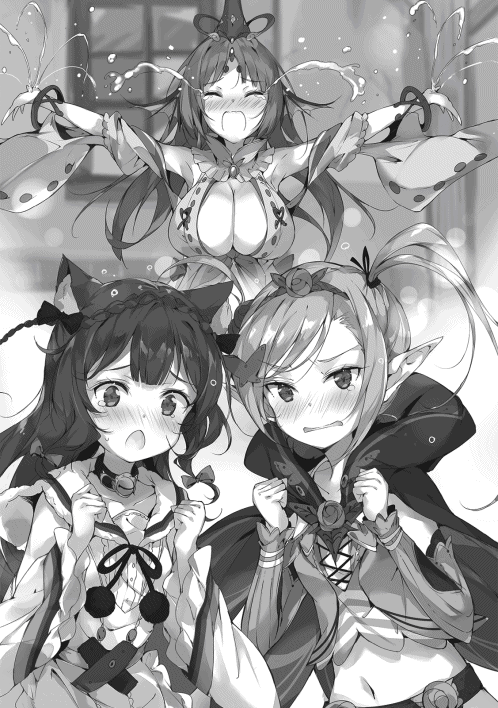
と、いつの間にか死角に出現していた浮遊する水が、バシャリ！ と振りかかる。
くそっ、今度は左腕をもってかれた！
俺は舌打ちをする。リュシアが嗅覚で俺の居場所を探り、エリンが風魔法によって、シーの生み出す水をコントロールしているのだ。要するに嫌がらせだが。
里親の話をしてから、ずっとこうした戦争状態にある。
特に普段最も聞き分けの良いリュシアが一番抵抗しているのが意外で、俺ともあろうものが若干ながら動揺していた。
「馬鹿が！ とりあえず一度その里親の元に行ってみろと言っているだけだろうが⁉ 嫌だったら帰ってくればいい！ ともかく、俺などに育てられるよりは、余程マシなのがどうして分からん！」
分かりません！ と即答がかえって来た。
俺はため息を吐く。
なぜ、こんな当たり前のことが納得できないのか理解に苦しむ。
あと、シーに身の回りの世話をしてもらったことなど一度もないわ！ と、それだけは言い返しておく。
「ユースティア、本当にその里親は大丈夫なんだな？」
と、俺の隣で同様の姿勢で前方を窺っていたユースティアに、何度目かの同じ質問をした。
女は頷きながら、
「え、ええ。もちろんです。その名乗りを上げてくれた方は地元の名士で本当に良い方なのです。慈善事業も手広くやっている方で、私も会ったことがあります。温厚な老夫婦ですよ。しかし......」
ユースティアは思案顔になり、
「これほど孤児のみなさんが反対するようでしたら、里親の件は白紙に戻すのもやぶさかではありません。あなたがこれほど慕われているとは意外でした。話を持ってきた身でありながら恐縮ですが、私から老夫妻には今回の話は無かったことに......」
「馬鹿を言うな」
俺はぴしゃりと言った。
「は？」
口を開いたままユースティアが動きを止める。
「俺などが院長をやっていること自体が問題だ。親に捨てられた子供が、孤児の面倒をみるなど冗談にもならん」
俺は当たり前のことを淡々と告げた。
が、ユースティアは徐々に目を丸くして、
「ナオミ・マサツグ、あなた......」
何か変なことを言っただろうか？
だが、俺は当然のことを言ったまでだ。
親の愛情を知らず育った子供が、子供に愛情を注げるわけがないのだ。
無論、あんな手間のかかる面倒な孤児たちを心配しているわけではない。
そんな温情を俺が持っているわけがない。
平たく言って、どうでもいい。
全くもって、どうでもいい存在たちと言って良い。
だが、だからこそ、だ。
だからこそ、どうでもいいからこそ、俺のような人間にわざわざ育てられる必要はないだろうと心底思った。
あいつらは、ちゃんとした親の元で、ちゃんと育つべきだ。
俺の様にではなく、当然あるべき愛情を受けて、ひねくれずに普通の人生を手に入れるべきだと思った。
いや、思った、じゃない。
院長になったときから、当然のように胸にあった『思い』だ。
俺はあくまで国王に命じられたから院長をやっていただけで、自ら院長などと言う職務に従事しているわけではない。
なぜなら、命じられた瞬間に直感したのだから。
院長などと、俺に最も不適任な仕事をあてがったものだと。
生きていくためには、その命令に忍従もしよう。
が、もしも、俺の代わりがいるというのなら、喜んで交代しよう、とそう決めていた。
そのことは、自嘲も皮肉もない。当たり前、自然なことだ。
だからこそ、俺は何の気負いもなく言う。
「信用がおける相手なら何の問題もない。お前が言うのなら、まあ、信じられないこともあるまい」
「ですが、あなたは、それでいいのですか？」
「もちろんだ」
やはり俺は即答する。
「俺のやっているママゴトに巻き込むわけにはいかん。ああ、違う。ママゴトには俺が飽きた。黄昏時になれば砂場で遊んでいたガキどもは家に帰る。それと同じだ」
そう、遊びの時間は終ったのだ。
俺は濡れた腕の裾をまくりあげて、奴らが潜伏する倉庫を見る。
あいつらが敵に回った途端、俺のスキルの効力が格段に落ちた。
その意味は分からないでもない。
ゴブリン王との戦いで理解はしている。
「しかし、どうするというのです？ 地の利は完全に向こうが上ですよ？ 遮蔽物のない直線の廊下、そこを相手は完全にスナイプしてきます。孤児たちの元へ無傷でたどりつくことは不可能と言って良い」
ユースティアがまじめな表情で解説する。
無傷で、か。
「最後まで頭の固い女だ」
「なんですって⁉」
「いいから黙って見ていろ」
「えっ？ あっ、待ちなさい、ナオミ・マサツグ⁉ そんな真っ直ぐ突っ込んではっ！」
後ろから悲鳴のような声が聞こえたが、完全に無視する。
「ご、ご主人様が突っ込んできちゃいました⁉」
「ひ、ひるむんじゃねえ！ い、一斉斉射だ！」
「了解！ 撃て撃てうてーい、私ぃ!!」
文字通りの水鉄砲が俺に迫る。
いつもならば造作もなく避けるのだが、
「ぐは⁉」
俺は無様にもかわし損ねた一撃をモロ顔面にくらってしまう。
「だ、大丈夫ですか、ご主人様⁉」
リュシアの悲鳴が耳に届いた。
馬鹿が。敵の心配とは、余裕をかましてられるのも今の内だぞ？
それに大したことはない。所詮は水だ。
エリンの風魔法で加速されているせいで、痛いのは痛い。だが、それだけだ。
（所詮は児戯にすぎん）
多少の痛みや怪我など無視して突っ込んでしまえば、それで終わりだ。あとは、無理やりにでもあいつらを里親の元へ送り出して......。
俺はびしょびしょになった顔を、ブルブルと振ってから再度駆け出そうとした、が......。
「ご、ご主人様、大丈夫でしたか？ お怪我はっ、お怪我はありませんか？」
そう言って、心配そうに耳を伏せたリュシアが、必死に俺の体をぺたぺたと触った。
と、
「あっ、おい、リュシア、お前出てっちゃだめじゃねーか！」
「マー君、いつからＭになったの⁉ わざと私の魔法を顔面で受けるなんて⁉ もっとサービスしよっか？」
そんなことを言いながら、エリンとシーも、すぐ目の前で心配そうに俺の顔を眺めていた。
......やれやれ。
思わず嘆息する。
そして口を開き、先ほどの続きを言おうとした。
が、俺はなぜか次に言うべき言葉を一瞬見失う。
胸の底から不意に湧いて来た不思議な感情が、その言葉を言うことを押しとどめたからだ。
が、
「よく聞け、お前たち。孤児の生活は今日で終わりだ。明日から里親の元へ行け」
俺はその感情をあっさりと無視する。
これまでもそうして来た通り、感傷などという下らないモノより、合理的な選択を優先したのだ。
不思議といつもは感じない疲労感が、その判断には伴ったが。
「ご主人様。ご主人様はリュシアが嫌いになっちゃったんですか？」
泣きそうに......いや、泣きながら、俺の体を労わっているリュシアが言った。
「好きか嫌いかなどと言う問題ではない。お前たちのためだと言っているだけだ」
淡々と告げる。
「私たちのためでしたら、私はここにいたいです！ エリンちゃんもシーさんも同じ気持ちです」
「あっ、あたしも今回だけはちゃんと言うぜ！ あたしだってここにいたい！ ここがあたしの家なんだ！」
「ペットは一回飼ったら最後までちゃんと面倒みないといけないんだよ！」
ワンワンと喚く。
だが、俺は逆にどんどん冷静になっていく。
そうならなければいけないと、なぜか強く思った。
「わがままを言うのはやめろ。こんな貧乏孤児院にどうしてこだわる。隙間風が入るし、虫は出る。近所からは幽霊屋敷だなんだと陰口三昧だ。今は大丈夫でも、今後も生活をしていけるかどうか、何の保証もない。そんなところに進んで住みたがるなど正気の沙汰ではないぞ？」
「それでも、私はご主人様の傍に......」
「それが一番問題だ」
俺は思わず言った。
「ご主人......様？」
赤くなった目で俺を見上げてくる。俺はそれを無視し、
「何と言ってもダメだ。今日で孤児院は終了とする。お前たちが何を言おうとも、これはもう決まったことで......」
「ぐす、......てないでください。ご主人様」
ん？
「......てないで。......てないで」
何を言っているんだ？
「お願いです。リュシアを、リュシアを捨てないでください。ご主人様」
「......」
俺は思わず言葉を失った。
『捨てる』
子供を捨てる。見捨てる。
それは、かつて俺がされたことだ。
俺は、俺の親がやったことと、同じことをコイツらにしようとしているのか？
不意に、そのことに気づいた。
三人を見る。
全員が、どこか怯えた表情をしているような気がした。
それは、まるでかつての自分を見ているような気分で、
「......分かった」
俺は思わず口にしてしまった。
しまった、と思ったが、もう遅い。
「ご、ご主人様⁉」
パッとリュシアが目を見開き、顔を上げた。
俺は首を横に振りながら、
「勘違いをするんじゃない。俺の意向は変わらん。お前たちは里親の元へ行くんだ」
「で、でも」
「最後まで聞け」
俺はぴしゃりと言って、
「最初言った通りだ。もし、気に入らないなら戻って来たらいい。俺もすぐには孤児院を閉じず、お前たちが万が一帰ってきたくなったら、帰って来れる場所を確保しておいてやる」
その言葉にパッと少女たちの表情が晴れる。
「分かりました！」
「だが、一週間は暮らしてみろ。それで気に入らないなら、戻って来るといい」
まあ、それくらいでしたら......。
こちとら一年間路頭に迷ってたんだぜ！ 一週間くらいすぐさ！
遠距離恋愛プレイだと思って、お姉ちゃん頑張るね！
そんな言葉を少女たちが口にする。
やれやれ。
俺は嘆息する。
「ユースティア、すまないが里親との連絡や一週間過ごして帰るかどうかの確認は、お前が仲介してくれ。院長の俺が行くのも良くないだろう」
ユースティアが頷き、
「分かりました。というか、それこそ私の業務の範疇ですので。リュシアさんたちの意向を最大限に尊重するようにいたします」
そう言ってニコリと微笑んだ。
こうして、三人の孤児たちはルーナ孤児院を後にした。
一週間後には帰ってきます！ と元気な声を上げながら。
俺は約束した通り、ルーナ孤児院の維持に努めることにした。
だが、建物の補修や掃除、食事の準備と、一人でやるには限界がある。リュシアがいないのが痛恨だ。
......いや、違うか。
俺一人が住む分には、そこまでやる必要はそもそもないのだ。
身の回りのことだけをしていれば、それで一応の生活は出来る。
というか、
「シーでさえ、いないと困るとはな」
俺は苦笑した。
あいつがいないと毎日風呂に入ることは難しい。仕方なく濡れたタオルで体を拭い、清潔さを保つ。
庭に目をやれば、エリンがいなくなったせいで、雑草たちが元気に背を伸ばしはじめていた。
まあ、悪い事ばかりではない。
「なるほど、一人で食べる食事と言うのは気楽なものだ」
それに食費もずいぶん安くつく。多少の贅沢も出来るかもしれない。
......が、味は何となく落ちたような気がした。
何と言うか、味気ないのだ。
「しかしまあ、そもそも味などどうでも良いか」
成長盛りのあいつらがいないのならば、食事を口にするのは俺だけだ。ならば、別に味にこだわる必要もないだろう。あいつらが沢山食べるように、色々と工夫していただけだ。
無論、院長としての義務だったからである。
あと三日。
二日。
一日。
そんな調子で一週間が過ぎた。
そうして、
「ユースティアからマサツグへ報告します。リュシアたちですが、里親の元で生活することを希望しました」
リュシアたちは帰ってこなかった。
「言うまでもありませんが、リュシアたちとの接触はしばらく避けてください。里親との生活が始まった大切な時期です。非常にデリケートな期間にあたりますので、もし何か伝えることなどがある場合は私を通してください」
「そうか、分かった」
ユースティアは淡々とした口調で説明すると、さっさと帰ってしまった。
あれほど戻りたがっていたのに、とは全く思わない。
この孤児院はひどいところだ。
廃墟同然の建物に、貧相な食事。風呂事情くらいしかいいことがない。が、何よりも──
「俺などが院長ではな」
そう、この結末はあたりまえだった。
ちゃんと親の愛を与えられる者の元で子供は育つべきだ。
それは、親から愛を受けなかった俺には、決してできないことなのだから。
こうして俺は、ルーナ孤児院の院長を辞したのである。
その時のユースティアの表情や仕草にまったく違和感を持つこともなく。
いや、持つことも出来ず。
「はあっ！」
ガシュっ!!
俺の振り下ろした剣が相手を貫いた。
が、絶命させるには後一歩足りなかったらしい。
ブルブルとブルーの体を蠕動させて、スライムの体から勢いよく触手が何本も突き出されようとする。
チッ、と俺は思わず舌打ちする。以前ならば考えられないことだ。
俺は次に訪れるであろう衝撃に備えて身構える。
が、
「あらん、ナオミさんの貴重なおこぼれ。わたくしのナイフが頂きますわね〜♡」
「ボクもボクも！ ダーリンには指一本触れさせないよ！」
そんな声とともにモンスターに向かって刃が二つひるがえった。
それは素人の俺から見てもほれぼれするような刀さばきで、瞬時にスライムはばらばらに解体される。
「シルビィと......、アルノンか」
「うん、そうだよ！ あなたのアルノンだよ！ どうだったかな、今の。役に立ったでしょ！」
ニコニコと微笑みかけてくる美しい少女に対して俺は、
「余計なことをするな。あんなものは俺一人で十分だ。お前は病み上がりらしく、冒険者などやめてベッドの上で横にでもなっているんだな」
助けられておきながら、何たる言いぐさかと思わないでもない。
が、
「あうぅぅう、それ、そんなこと言われたら、ますます......。もう、ほんっとにダーリンはボクを喜ばしてばっかりなんだから♡」
「どこにそんな要素があった？ この馬鹿が」
「ああ、そんな、もう......」
こいつに対しては、少しばかりきつめに言うのが正解だ。
そうしないと、こちらの意図が伝わらないのである。
「悦ばしているだけなんですけどねえ」
こちらを若干呆れたような表情で見ながら、シルビィがぼそりと漏らした。
喜ぶ？
罵倒されて喜ぶような奴がいるわけがあるまい。
「それよりも、お前たちにはモンスターどもの偵察を命じておいたはずだが？」
「もちろんとおっくに終わってますわ。モンスターの影は一切見当たりませんでしたぁ」
やれやれ、と、俺は本日何度目かのため息を吐いた。
俺は今、ワルムズ王国から南に二十キロほど行ったところにある洞窟に足を踏み入れていた。
孤児院を閉院した俺は、なぜか何もする気になれず、誰ともつるまなくて済む冒険者稼業に身を投じたのである。
ここはいわゆるダンジョンと言うやつで、モンスターが跋扈している危険な場所だ。が、素材をうまく集めれば大きな収穫になる。
そんな訳で、本来ならばソロでダンジョンを探索しているはずだったのである。
が、現実は面倒ごとしかもたらさない。
目の前の少女たち。
シルビィ・リスキス。
そして、アルノン・キンブルク。
リスキスにキンブルク、それらのファミリーネームが示す通り、彼女たちは普通の娘たちではない。
即ち、リスキス家とキンブルク家の正当なる後継者たち。
俺のような平凡に生きることだけを願う男からすれば、絶対に避けなければならない疫病神どもだ。
「先に進むとしよう。......何度も言うが、ついてくる必要はないぞ？ 別に目的があっての探索ではない。俺がその日の糧を得るための行為にすぎないわけで──」
お前たちが手伝ういわれはない。
そう言いかけたのだが、
「あらん、あららん。なーにをおっしゃるんですか、ナオミさん。このシルビィ・リスキス、打算ありありなのは認めますが、それはこれ、あれはこれ。お仕事きっちり裏稼業。されど恋路は別稼業。恋路も罠も全力なのです♡」
「ボクもだよ！ マサツグさんのポーションのおかげでせっかく元気になったんだから。結婚するしかないよね。ううん、結婚なんて生ぬるい。いっそ、あなたから生まれ直したい！」
頼むから出来の悪い悪夢であってほしい......。
この二人がなぜ俺などにくっついてくるのかと言えば、いわく、俺に対して大きな借りがあるから、らしい。
シルビィは数か月前にゴブリン王を打倒したお礼がまだできていない、という理由だ。
孤児院を閉じた瞬間、目の前に現れたのである。
そして、アルノンは──、
「命の恩人に恩を返すのはあったりまえだよねー。さあさあ、足をなめましょう！」
「やめんか！」
自然な流れで足元に跪こうとするアルノンの頭を思わずはたく。
「やあん♡」
大きな悲鳴が響いた。
「ったく。大げさな声を上げるな。軽くはたいただけだろうが」
「だってぇ」
顔を赤くして抗議してくる。
こいつは案外、こうしてすぐに怒るのである。
「はぁ、うらやましい関係ですわ。私もそういうプレイをナオミさんと繰り広げたいですわ」
「？」
シルビィが訳の分からないことを言う。まあ、いつものことか。
アルノン・キンブルク。こいつは前回、俺の作った中級ポーションによって不治の病から復活した少女である。
だが、中級ポーション製造の依頼時は、たしか息子だと聞いていたのだがな。
「男だよ。性別は女だけどね。家は男が継ぐことになってるからねえ」
よく分からんが、後継者になるために男性として育てられているらしい。
「あっ、でも安心してね！ 女として、あんなことしたのはダーリンが最初だから。他の誰にもあんなことしてないよ」
ほんのりと頬を染める。
これほど美しい少女が頬を染めて、俺の方に悩まし気な瞳を向けてくるのだから、普通ならば、もっと華やいだ気持ちになりそうなものだ。
が、こいつの言う『最初』とは、俺と初めて会った時にいきなりパンツを渡して来たことを言っている。
「生まれた時から産廃で恥ずかしくないのか？ さっさと焼却処理するのがお前のためかもしれんな」
「⁉ もっと、もっと言っていいんだよ⁉」
と、
「お二人ともお楽しみのところ申しわけありませんが、そろそろ先に進みませんかぁ？」
いい加減呆れたような口調でシルビィが口を開いた。
俺は文句を飲み込みながら今後の方針を告げた。
「モンスターがこの先いないというのなら先に進むまでだ。最下層の五十階まであと五階層。進めるところまで進むぞ」
「まあ、勇ましい！ 男の子はこうでなくてはいけませんよねえ。無理無茶無謀もなんのその、ですわ〜」
「ふん、別に文句があるのなら、ついてこなくても構わんぞ？」
最初から言っている通り、そもそもソロで潜るつもりだったのだ。
なぜか、こいつらと一緒にはいるが、基本的には誰かといるのは煩わしい気分なのである。
それがなぜなのかは、よく分からないのだが。
「いやん、拗ねちゃったんですのね？ 大丈夫ですよ、お姉さんがいい子いい子してあげますから」
「ふん、一人でやっていろ。俺は行く──」
──ぞ。
そう言いかけた時である。
ビュッ！
「⁉」
俺は予想していなかった一撃に思わず体が硬直する。
空気の鋭い擦過音は遅れて聞こえた。
そう、死角から襲撃を受けたのである。
それが致死の一撃と気づいた時にはもう遅い。
その投擲されたナイフは俺の眉間を突き刺し、命を奪っていた──
「とまあ、そう簡単にくたばれたら人生と言うのは楽なのかもしれんがな」
俺は表情を変えずに死角より放たれた投げナイフを二本の指で掴みとっていた。
弱体化していても、これくらいのことは可能だ。
だが、相手の攻撃を許してしまっている時点で、ピークの時の一％の力もない。
「で、お前ら、申し開きはあるか？」
俺は二人の少女たちを睥睨する。
敵はいない。そう報告したばかりでこれだ。
これで、この少女たちが実は敵だった。ということならば、分かりやすいのだが......、
「心外だなあ。ボクたちが愛しのダーリンに嘘を言うと思うの？ ショックで子宮が震えちゃうよ。モンスターはいなかったって、ちゃんとそう報告したのにぃ！」
モンスターはいなかった。
だが、敵がいないとは言っていない。
例えば、敵が盗賊などであれば、モンスターではないから報告する義務はない、ということだ。
「って、そんな訳があるか！ どこまで馬鹿なんだお前らは！ 敵よりよほど性質が悪いわ！」
「まあ、ショックです。純朴に、純粋に、混じりけなしに、ナオミさんのピンチを救って点数を稼ごうとしたわたくし達の行いが、これほどまでに糾弾されるなんて！」
「それは単純に腹黒なだけだろうが！」
純粋とか言ってるんじゃない！
「さあさ、ダーリン、そんなことより戦闘だよ、せ・ん・と・う。出て来た出て来た。わらわらと。ボクのカタナの錆になるのだ〜♪」
「お前は弓術士だろうが？」
そんな指摘はどこ吹く風と、アルノンが弓を構えた。
シルビィがナイフを取り出す。
目の前には物陰に隠れていた盗賊たちが次々と現れ始めていた。
全部で二十人はいるだろうか？
まだどこかに隠れているかもしれないが......、
「マサツグさん、ちょっとこいつらの様子、変じゃない？」
俺は頷く。
無論、正常な人間が盗賊などやりはしない。
だが、そういう意味ではなく、どこか様子がおかしい......、いや、異様だったのだ。
なぜならば、
「こいつら、殺意がない」
いや、殺意どころか、こちらを害そうという気配すら感じられないのだ。
盗賊たちの目はどこか虚ろで、こちらを見てはいるものの、どこか焦点があっておらず、口元もだらしなく開いている。
姿勢もフラフラとしており、まるでゾンビのようだ。
いや、これは──、
「操り人形、でしょうか？」
言い得て妙だ。まるで天井から吊るされた人形のように、フラフラとしていて表情というものが読めない。だが、こちらへの攻撃の意志だけは明確で、殺意もなく、害意もなく、ただただ、そういう行動プログラムを遂行するだけのロボットのように思えた。
と、盗賊の親玉と思われる男が口を開いた。
いちおう口は利けるようだ。
「我らが泥の王の供物として貴様たちの命を捧げる。これだけの人数にお前たち三人だけでは勝つことは出来ない。今であれば水の主上の温情による恩赦を与えよう。苦痛は与えず、ただ命をもらうだけで許してやる」
「ふーん、あっそ。ところで泥の王に水の主上？ 聞いたことないなあ......シルビィさんはどーお？」
「知りませんわねえ......。わたくしの情報網にひっかかってこない腕白な方がいつの間にか住み着いていたのでしょうか？」
屈辱ですわ〜、とシルビィが唇をとんがらせて言った。
完全に無視された盗賊が続けて口を開く。
「愚かな。ならば主上の温情は不要。すべてを奪い、すべての苦痛を授けてから、その命を奪うとしよう。見たところ、ただならぬ仲の男女と見える。ならば、その尊厳を最も情け容赦ない形で奪うとしよう。なに、女に守られているような男だ。大したことはあるまい」
そう言って暗い笑みを浮かべた。
操られているが、こちらを害することについては知恵が回るようだ。というか、誰がただならぬ仲だ。
「そのプレイそそられるなあ、僕」
顔を赤くしてこちらを見てくる女がいるが、俺はそれを一切無視する。
「それにしてもわたくしたちがナオミ様を？」
「守る？」
まあ、何はともあれ、
「そういうことなら、単純で助かる」
俺は剣を構える。
何せ、やることは思ったよりシンプルだ。
「どうするの、ダーリン？」
フッ、決まっている。
「舐めたことをしてきた奴には落とし前をつけるだけだ。これまでと同様に、な」
俺は酷薄に笑った。
「この人数にたった三人で挑むとは、愚か者どもが」
親玉もまたニタリと顔を歪ませる。
それは虚ろで作り物めいたものではあったが、獲物たちの命が自分の手のひらの上にあることに疑いを持っていない者がする顔であった。
嬲り、辱め、弱いものを圧倒することに喜びを感じる目。
自らが強者と驕る者たちがする目である。
なるほど、とシルビィが呟く。
その目は常の時とは異なり、細く、冷たく、鋭い。普段は絶対に見せない裏の顔である。
「操られているのではなく、狂わされている、のですね」
「そのようだな」
俺は頷く。
こいつらには意志がないわけではない。
正気がないのだ。
正常な判断力を奪われ、狂わされているのである。
だが、誰に？ 何の目的で？
無論、俺には見当もつかない。
......いや、そう言えば一度聞かされたことがあったか。
何でも、泥の水という魔法には、精神を汚染し、ヒトを狂騒させる力があるのだと。
聞いてもいないのに、キャインキャインと一方的に説明して来た。
その姦しく唾を飛ばして来た相手とはもちろん──、
「来ます！」
シルビィの鋭い声が洞窟に響いた。
俺は思考を中断し、敵の存在のみを意識する。
三対二十。
以前の俺ならば物ともしない数だが、守るべき者たちがいな......いや、なぜか力が失われた今となっては必勝とは言えない数だ。
（院長だから守っていた。その孤児院がなくなれば......院長ではなくなったなら、力が失われるのは当然のことだ）
「守る義務がなくなったのだから、な」
あの『守る』スキルは、俺が院長でなければ発揮されない。そういうものだったのだろう。
だから、今はその残滓と言ってよいほどの、わずかな力で戦わなければならない。
「はっ！」
俺は剣を遠距離から一振りした。
衝撃波を放ったのだ。
かなり手加減をしたため、先頭に立っていた二、三人の男たちを壁にたたきつける程度の力しかない。以前ならばこの洞窟の地形くらいは変えられたのだがな。
「さっすがダーリン、圧倒的ぃ！ 後で私を的にして練習してくれていいからね！」
「あらあら、以前のナオミさんを知らないんですのねえ。こんなものじゃなかったんですからぁ」
「むむ⁉ 何やら上から目線を感じるよ!!」
「ふざけるのはそこまでにしておけ。お前たちもさっさと──」
戦え、と指示を出す前に、二人は動き始めていた。左右、離れた場所に展開する。自分たちの戦いがしやすい距離を確保したのだ。
二人とも『冒険者』である。
しかも、どちらもワルムズに十三人しかいないというＡ級冒険者だ。
親の七光などと陰口をたたく人間もいるようだが、俺はそんな奴らこそ鼻で嗤う。
なぜなら、
「へっへっへ、姉ちゃんたち、さっさとかかってこいよ。この人数にぶるっちまったのかぁ？ もし俺たちの女になるってんなら、特別に許してやってもいいんだぜえ」
狂った人形たちがいやらしく笑う。
数はおよそ半数ずつ。
俺はまずはシルビィの側に加勢する。
圧倒的な人数差だというのに、シルビィは冷たい視線を投げかけていた。
「ゴミに震えるとはどういう理屈か理解しかねます。それよりも、ゴミが口を開くと臭くてかないませんわ？ 閉じておいてもらえますか？ ええ、今だけではなく、永遠に」
戦いのときのこいつは、その得物が示す通り、ナイフのように鋭い雰囲気になる。
「ひっひっひ、強がりを言いやがる。そこのちょっとばかり腕の立つ兄ちゃんがいるからかぁ？ へへへ、だが、この人数にかなうわけがねえ。今から数分後には、その綺麗な顔が苦痛に歪んじまうぜえ！」
まぁ、とシルビィが目を丸くする。
「あなた方ごときの敵にナオミ様は贅沢すぎますわ。わたくしはただ、ナオミ様のつゆ払いです」
「へ、強がりを......」
「であるならば」
シルビィは初めて笑い、
「まずはこちらにいらっしゃいませ。でなければ、私と言う至高の獲物を取り逃すことになってしまいますわよ？」
そう言って腕を広げた。まるでこちらまで来ることができるのか、と挑発するように。
盗賊たちは笑みを深め、
「わきまえてるじゃねえか！ なら、遠慮なく俺たちが──え？」
「どうした......あれ？」
「な、なんでだ⁉」
男たちがたちまち慌てだす。
それはそうだろう。
なぜなら、今こいつらは、
「あ、足が動かねえ⁉」
「お、俺もだ⁉」
「ぐえ⁉ た、立ってられねえ⁉ そ、それどころか、立ち上がることもできねえぞ⁉」
一体どうなってやがるんだ⁉
次々にバランスを崩して地面に転がると、悲痛な声を上げる。
「い、いつの間に、何をしやがった⁉ てめえのナイフは一ミリたりとも俺たちに触れてすらいねえってのに⁉」
転がった一人が必死の形相で喚いた。
こいつらの言う通り、シルビィは手に持ったナイフを少しも動かしてはいない。
が、それが答えだ。
「そうですわねえ。わたくしのナイフは一ミリたりともあなた方に届いていませんわ。だって仕方ありません。わたくし、ナイフなんて一ミリも使えないほど、不得手なのですから」
そう言ってニコリと笑う。
「「「は？」」」
地面に転がった盗賊たちが、あっけにとられた顔をした。
「わたくし、一度もナイフ使いなどと名乗ったことはありません。使えませんわ、こんな野蛮な得物なんて。ああ、怖い怖い」
カラン。
と、ナイフを地面に放りだした。
「ば、バカな⁉ だが、偵察していた時、その男との会話の中で、ナイフ使いだ、と......⁉ モンスターだって倒していたはずっ......！」
「うふふ、そうでしたかしら。女ですもの、好いた殿方の前なら、ちょっとは張り切っちゃいます。でも、倒したのはアルノンさんですし、わたしにナイフなんて使えません♪」
キャハン♡
などと可愛い子ぶる。
まあ、いくら今さら可愛い子ぶっても、コイツの本質は隠しようもないが。
シルビィは無論、偵察されていることが分かっていて、あえてモンスター相手にナイフを使ったのだ。いつものように自然と嘘を弄すように、息を吸うように相手を嘲弄してみせたというわけだ。
......が、俺はこいつがもう一つ大きな嘘をついていることを知っている。それが一番性質が悪い。
「く、くそ！ こ、こんなことで俺たちは！」
「はぁい、そろそろ貴方たちの出番は終わりですわぁ。次に目覚めたときは洞窟の肥やしになって、せめて世の中の役に立つのですのよ？」
「ひいいいいいい⁉」
「悲鳴だけは及第点ですわぁ」
そう言って、盗賊たちの意識を次々に奪っていく。
殺してはいない。
使っているのは、先ほどから盗賊たちの急所へと打ち込んでいた透明な細い針のようなものだ。
「点穴、と申しまして、人は誰しも魔力の経路と溜まりがあるのですわ。それを突いてやれば、人の体など思うがままです」
笑顔で解説してくる。
ナイフは囮だ。
構えることで、これみよがしに得物であるとアピールし、注意をそちらに引き付けた。
無駄な会話や挑発もそのため。
隠した方の手では、ひそかに相手の急所へ針を投擲していたというわけである。
まるで手品師だな。
モンスターをナイフで倒したところから、ここまでを計算していたのだから。
いや、
「詐欺師、というのが正解か」
俺は呟く。
「まあ、ナオミ様ったら。か弱い乙女を捕まえて何ということを言うのでしょうか」
頬を膨らませる。
が、なぜもヘチマもない。
なぜなら、
「お前の得物は正真正銘、そのナイフだろうが」
地面に落ちていたナイフをヒョイと拾い上げるシルビィを見ながら言った。
先ほどのモンスターも、盗賊たちの言う通り、そのナイフで切り付けていたのだ。
使えないわけがない。
「あらん、何のことでしょうか」
貼り着いた微笑を向けてくる。
まったくもって不可解な女だ。
俺はため息を吐きながら、無駄と知りつつ、
「なぜ意味のない嘘をつく？」
そう問いかける。
が、やはり少女は変わらぬ微笑みを浮かべながら、
「うふふ、女の子には秘密が多いのですわ」
そう言って懐にナイフをしまうだけだ。
やれやれ。
こいつの本音を引き出すことは、それこそ父親のドランにすら難しいだろう。
そう思ってアルノンの方に意識を向けようとする。
が、その時、静かな声で、
「......ええ、でも」
そう口を開き、
「正体のないものはつかめませんわ。定義されないことこそが大事です。形あるものは必ずなくなりますし、生きているものは腐ります。で、あるならば、私は形を持ってはいけません。生きてはいけないのですわ。するりするりとつかみどころのない幽霊であること。それがわたくしのギルドでの役目なのです。と......」
ナオミ様相手だと、いつもついついしゃべりすぎてしまいますね。
そう言って舌をペロッと出した。
それは年相応の少女の顔に見える。
......が、それを聞いてなお、俺の感想と言えば、
（まったく、疲れる女だ）
というものだが。
多少の本音を聞いたぐらいで、コイツへの評価を変える程、俺はちょろくない。
面倒な女であると言う認識が一層深まっただけだ。
......が、俺も一つ勘違いしていたことは分かった。
（こいつは別に嘘をついているわけではないのだ）
そのことが何となく理解できた。
こいつは、ただ単に本当のことを言っていないだけである。
実際、シルビィはナイフ使いと言う訳ではないのだろう。
厳密には『ナイフしか使わない』ような戦い方は出来ないのだ。
それは自分の存在をはっきりと相手に示してしまうことになるのだから。
それはコイツの立場上、許されない。
リスキスの裏を司る者が持たざるを得ない『制約』とでも言うべきだろうか。
要するに、
「やはり難儀な女ということだな、お前は」
俺はため息を吐いてから、アルノンの加勢に向かうことにした。
結局、こいつへの評価は出会ったころから変わらないということが再認識されただけだ。
なお、なぜかその言葉にシルビィは目を丸くしていたのであった。
さて、アルノンもまた十名近くの盗賊たちと対峙している。
が、
「あー、もー、しっつこいなー！ ちょっと離れろってのー！」
弓が打てないじゃんか、もー!!
既に戦いは始まっていた。
多勢に無勢。それに何よりアルノンの武器は弓だ。
距離を取らなければ不利なことは明白である。
俺が前衛を務めなければ、ジリ貧だろう。
というか、
「なぜ今回に限ってシルビィと組んで応戦しない？ 遠距離型のお前が、一人で十人の盗賊たちを相手どるなど、自ら死地に立つようなものだろうが！」
「わっ、ダーリン来てくれたんだね♡ もちろん、こうしてお姫様の僕のために息せき切って駆け付けてくるナイト様ごっこをするためだよぉ♡」
いつも通り、訳が分からない。
「やはり貴様を前衛にして、俺が後ろから衝撃波で吹きとばすことにするか。誤って巻き込んでしまうかもしれないが、尊い犠牲だ」
辛辣に告げるが、
「別にダーリンになら、そういうプレイもいいんだけど。あっ、でもね！ 他の人と一緒なんてやだから、するなら僕一人にしてね！」
「はぁ......。ふざけたことを言っていないで、さっさと後ろに下がれ！」
俺はアルノンを押しのけて前に飛び出ると、殺到してきていた盗賊どもを、一撃のもと弾き飛ばす。
「ぐあっ⁉」
「げえ!!」
ちっ、手加減しすぎたか。
盗賊どもは吹きとばされて、地面に倒れ呻いている。
死なない様に気絶させたつもりだったのが......。
相変わらず、手加減というのが一番難しい。
「さっすがダーリン！」
「ふん、別に大したことではない」
それよりも、
「腐蝕は進んでいるのか？」
「えっ？ それはもちろんだよ」
俺の問いにアルノンは即答する。
ニコニコとしながら。まるで人畜無害な深窓の令嬢の様な笑みを浮かべて。
なるほど、そうか。
ならば俺の手伝いは余計だったかもしれないな。
なぜなら、既に戦いは終わっていたのだから。
と、そんな中、盗賊たちが声を上げる。
「チッ！ ちょっとばかり強いからって粋がってんじゃねえぞ！ 女二人もはべらせやがって！ この人数に勝てると思ってんのか。男は殺し、女は楽しんだ後に主上に献上するから、覚悟しやがれ!!」
何だと？
「貴様、今なんといった？」
「へっ、自分の女のことを言われて、頭に血がのぼったか！ 肝のちいせえ男で......」
「こんな奴らが俺の女でたまるか！」
俺は思わず剣を振るう。
その衝撃破にしゃべっていた盗賊が数十メートルの距離を吹き飛ばされた。
「まったく、とんでもない誤解だ。こいつらは勝手に付いて来ているだけだというのに」
名誉を傷つけられれば誰だって腹を立てる。
当然の報いである。
仲間がやられたことで残りの盗賊たちが激高し、襲い掛かって来た。
ちっ、他の奴らにも誤解を解いておきたいところだが......。
「......が、もはや訂正する時間はない、か」
俺がそう呟いた瞬間である。
「ぐっ⁉」
「げえ⁉」
「うっ......!!」
突然、盗賊たちが胸をおさえて苦しみ出した。
「腐蝕する十一月」
アルノンが呟く。
こいつは弓術を使う。だが、それはあくまで遠距離から攻撃して、時間を稼ぐためだ。
こいつは馬鹿だからナイト様ごっこ（？）とやらのために、あえてソロで戦ったが、本来ならば前衛は俺やシルビィの役目だ。
その間にコイツはあることをするのだ。
それが『腐蝕』と呼ばれるユニークスキル。
今回使ったのは『腐蝕する十一月』という技だ。
その効果は『空気を腐らせる』。
そう......。
はっきり言って、とんでもなく使えないゴミスキルである。
もちろん、腐った空気を吸い込めば呼吸器に異常が現れる。
だが、その効果には即効性もなければ、致死性もない。
そもそも、空気というものは限りなくある。他の所からいくらでも供給されるものだ。一部の空気が腐っても、まったく影響はないのである。
また、このスキルは一人では使用することができない。敵に瞬時に間合いを詰められて殺されるだけだからだ。そのため、必ず頼りになる前衛が必要になる。
考えれば考える程、役立たずの能力と言えるだろう。
が、もしも。
もしも頼りになる前衛がいて、空気の供給に限界があり、なおかつ敵に囲まれるほどのスペースがないような特殊な環境下であれば話は別だ。
そんな限定的な環境であれば、これほど強力かつ最悪な能力は他にない。
なぜなら、人が当たり前のように使う空気が使えなくなるのだから。
魔術師は詠唱が不可能となり、戦士はその自慢の筋肉を動かすことができなくなる。
生きとし生けるものは、全て死に絶える。
すなわち。
アルノンは、この『死出の洞窟』において、無双とも呼べる活躍をしてきたのである。
ゆえに、彼女は冒険者ギルドにおいてこう呼ばれる。
『不帰姫』と。
それは、『武装祭壇』などと呼ばれる、シルビィ・リスキスと双璧を成す存在と認識されていた。
と、
「がおｓｄｆじょあしえｆは＠おいｈごあほｇはおしはご!!」
「が；おおえいあ；うぇぱｓぽふぁじぇぽｊふぁぺおｊふぁｐｊｗぺあｆ!!」
「が；えｊがじぇ!!」
「────────!!」
俺の衝撃波や腐食により倒れていた敵が、一斉に立ち上がった。
先ほどシルビィに倒された盗賊たちも、意味不明な叫び声を上げながら同時に立ち上がる。
まるで操り人形のように規則的な動きをしながらだ。
いや、リーダー格の一人だけは正気を保っているらしい。
そして、
「こうなったら奥の手だ！ 皆狂え！ 人数で押しつぶせばなんとかなる！ 男だ、男を狙え！ モンスターから女どもに助けてもらっていたくらいだ！ 奴がこのパーティーのウィークポイントに違いねえ！」
そう叫んだ。
「十一月の腐蝕じゃ効かないっぽい⁉」
「変ですわねえ。点穴もまったく効きませんわぁ」
なるほど。
「完全に魔力で操られているというわけか。それなら、酸素も神経も必要ない」
「誰が、そんなやんちゃなことしてるわけ⁉」
「そんなことは知らん」
いや、見当はつく。こいつらの言っていた主上とやらだろう。
が、それを考えている暇はない。
もはや目の前に二十体の敵......、いや生けるゾンビどもが、俺たちを咀嚼しようと肉薄してきているのだ。
数で押しつぶす、というのは単純な強さにつながる。
特に戦術を駆使するシルビィやアルノンといったタイプの戦士にとっては脅威になるだろう。
いや、
「『七月』を使うよ!!」
「お手伝いしましょう！」
「助かるね！」
「祭壇展開!!」
アルノンとシルビィが切り札を使おうとする。
合体スキル『広域殲滅魔術』。
アルノンのスキルに、シルビィの補助魔術を混成し、新しい効果を生み出す秘術。
奥の手には奥の手、といったところか。
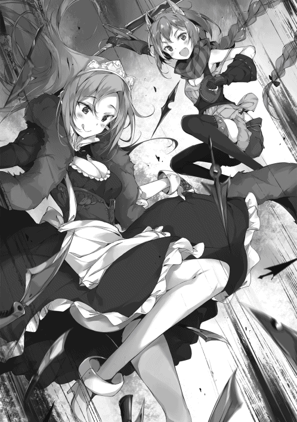
が、
「いい加減にしろ。もう飽きた」
俺は少しばかり力を込める。......いや、手加減するのを少し緩めたと言うべきか。
そして、
「ふん」
今まで通り、俺は殺到する敵たちに向かって、少しばかり強い力で剣をただ一振りしたのである。
「もう、あれで終わるなら、最初からやってればよくない⁉」
「まあ、アルノンさんったら無茶言わないの。全盛期のナオミ様だったら、洞窟ごと倒壊しているのですから。盗賊相手といえど、本気を出すのをためらわれていたことも理解できます」
「むむむ、またもや上から目線⁉」
シルビィとアルノンが下らないおしゃべりをしている間に、俺は気絶していたリーダー格の男を叩き起こし、尋問を進めていた。
話をはぐらかそうとすれば、
「ぐへえ⁉」
という無様な声を上げる程度には容赦はせずに、だ。
一度気絶したことで、傀儡状態は解除されている。
だが、あいにく俺には敵に優しくしてやるような温情はない。
まあ、正気を保たせられながら、狂わされる、などという訳の分からない状態にされていたことを鑑みて殺したりはしないが。
しかし、情報は全て引き出す。
「では、貴様らの言っていた主上とやらは女なんだな？」
「へ、へえ......間違いありやせん、ナオミの旦那。あっしら気づいたら、いつの間にか操られていたんでやす」
口調まで変わっているが、無視して話を進める。
「馬鹿が。もともと盗賊だったお前らの自業自得だろうが。......で、どんな奴だ。どこにいる？」
「へ、へえ。ひどく冷徹な表情をした魔女です。誰が最初に言ったのか分かりやせんが、汚濁を操る魔女、だとか、悪濁の女神だとか言われてやした。冒険者ギルドにまでは伝わっていなかったはずでやすが、一部では闇の女神が洞窟に住み着いたって噂になってやした」
女神は、この死出の洞窟の地下五十階、『無窮なる大空間』に居座っているそうだ。
「なるほど」
恐ろしい敵のようだな。
俺もさすがに気を引き締める。
女神、というからには神の系譜に属するものだろう。そして、汚濁や悪濁、魔女といった単語からは、その女神が決して善性を持っていないことがうかがわれる。
恐らく、笑顔など想像もできないほど、悪辣で恐ろしい神だ。
気を引き締めてかからねばなるまい。
と、
「ああ、そうだ。言い忘れてやした」
「なんだ？」
言ってみろ、と促す。
「冷血としか言いようのねえ女でやしたが、変わったところもありやして、どうも金品の巻き上げに熱心でやした」
ふむ？
「まあ、それはありうることだろう。神々と言うのは時に金銀財宝が存外好きなものだしな」
元の世界の伝承などを思い出す。
ああ、いや、そうなんですがね。と、盗賊は頭をかきながら、
「あっしが以前、間違って一ギエルコインを地面に落としたんでやす。で、それを拾おうとしたら、本当に一瞬。本当に一瞬のうちに女神がそのコインに手を伸ばしていやして......。さっきまで玉座に座っていたはずなのに、でやすよ？ そのあと、何事もなかったように玉座に戻っていきやしたが。生贄を求めるような女神でやすから、そこだけが妙に......」
どこかで貧乏でもしていたんでしょうか？
そう言葉を続けるのであった。
俺はその言葉に、激しく嫌な予感を覚えたのである。
「呼ばれて飛び出てじゃかじゃらん！ 悪辣なる女神、堕ちた天使とはまさにこのわたし！ 美しき水の調べを顕せしブルーの髪に、見えそうで見えない煽情的で魅力的な神衣をまといし愛の化身！ 他の女神たちからも一目も二目もおかれた大人気神性！ それこそ、このお姉ちゃん属性マシマシのハイスペック堕天使、シーちゃんなのでっす♪」
「くらえ、俺の全力の一撃をぉぉぉおおおおお！」
「きゃああああああああああああ⁉」
バチバチと帯電する衝撃波を放った俺は、玉座に座る女神ごと吹きとばす。
広大なスペースを誇る死出の洞窟五十階には、こいつが収集したのであろう金銀財宝がそこかしこに積まれている。
それらが俺の放った衝撃波とともに散乱し、ぎらぎらと散る様はなかなか景気が良い。
が、
「いったいなー、マー君ったら♪ お久しぶりなのに、いきなりそんな熱いアプローチをしてくるなんて！ ちょっとお姉ちゃん照れちゃうな。実際焦げちゃってるし、てへぺろ♡」
全力の一撃だったんだがな。
「やかましい！ あー、やっぱりお前か。お前じゃないことだけを期待して、ここまでやってきたってのに」
俺は頭を抱える。
「シーさん、ですか？ なぜこんなところに......。せっかくライバルが減ったと喜んでおりましたのに」
「ちょっとマサツグさんと距離近すぎない⁉」
お前らはお前らでやかましいな。
ともかく、
「この馬鹿ペットが。貴様は新しい飼い主に連れられて、新しいペットライフを始めたとばかり思っていたが、なんでこんなところで盗賊の親玉のようなことをやっている？」
というか、仮にも女神だろうが。
「そこは語るも涙、聞くも涙の物語があるんだよ、マー君。聞きたい、聞きたい？」
「全然、聞きたくは」
ない！ と、そう返答しようとした時、
「リュシアちゃんやエリンちゃんがもうすぐ死んじゃうかもしれないけど、それでも興味ないかな？」
ニコニコとしながら聞いて来た。
なるほど。
俺は頷く。
ちょっとばかり勘違いしていたようだ。
「お前が操られているんだな」
盗賊を操っていたのはこいつだ。
だが、コイツ自身も誰かに操られている。考えてみれば当たり前のことだ。
なぜなら、
「あはは」
シーは嗤う。笑うのではなく、うすら寒く嗤う。
それは俺がルーナ孤児院でこいつと一緒に過ごしてきて、一度も見たことない表情だったからだ。
「聞かせろ、シー。里親に引き取られてから、何があった？ 監察官であるユースティアは何をしている？ 誰がお前をそんな風にした？」
「んー、そうだねえ。将来お姉ちゃんを娶るマー君だから教えちゃうけどお」
誰がだ。
「先に訂正しておくと、操られている、っていうのは正確じゃないかな。私が盗賊さんたちを汚濁の水で正気を失わせて、強制的に出来損ないのお人形にしていたのとは訳が違うの」
どういうことだ？
「別にお姉ちゃんは『こうしろー』って操られているわけじゃないってこと。わたしという女神の別の側面を強化されているっていうだけだよ？」
「......ふん」
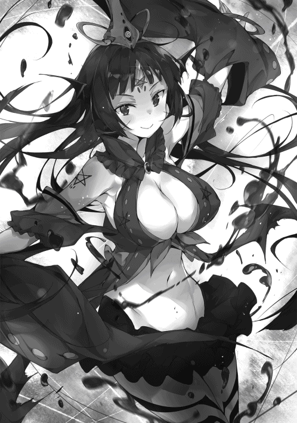
俺は不機嫌そうに鼻を鳴らす。
自称・女神のくせに生意気なことだ。
つまりこういうことだろう。
神には通常、複数の顔がある。
愛を司る女神が戦いの女神であったりするし、生と死が同じ神性に同居していることもある。
こいつの神性は水だ。
水......すなわち命の源と言って良い。
誕生、愛、生命。生きていくには必須の存在である。
......が、ならば。
ならば、真逆の性質をも包含していると考えることもできなくはないだろう。
すなわち、死、独占欲、汚濁といった負の性質だ。
なぜならば、それらは真逆に見えながら、実は同一ともいえる概念だからだ。
生まれたからには死に、愛は独占を肯定し、形あるものはいつか崩れる。
「マー君はさすがに理解が早いねえ。もうちょっと驚いたり、怯えてくれてもいいんだよ？」
「ふん、死んでもごめんだ」
えー、とシーは不満そうに頬を膨らませる。
「せーっかく、マー君を驚かせることが出来るって思ったにー。じゃあ、これでも驚かない？ これからマー君は本気モードのお姉ちゃんと戦って、四肢をばらばらにされちゃうんだ？ でねでね、でもね、殺したりはしないの。お水を中に入れて、永遠に生かされて。それで、お姉ちゃんと世界の終りまで一緒にいるんだよ？」
「ふん、そんな脅し文句で俺が怯えるとでも」
「それで、また院長さんになってもらうんだ♪」
そう言って微笑んだ。
「......なんだと？」
俺は眉根を寄せる。
二人っきりの孤児院だけどね♪ などと言葉を続け、
「マー君は院長さんじゃないと、シーたちのこと捨てちゃうからねえ。なら、もう一度院長さんになってくれれば、今度こそずーっと一緒にいられると思わない？」
俺は思わず沈黙する。
捨てた訳ではない。
それは確信を持って言える。
確かに里親の元へ強引に送り出しはした。
だが、それは当然のことだ。
院長の資格などない俺にとっては、選択の余地などない当たり前の判断。
院長でないのならば、こいつらの面倒をみる理由はない。
守ってやる理由などない。
ないはずだ。
そこに一点の矛盾もない。
そう思った。
しかし、
「うふふ、嬉しいな、嬉しいな。今度こそマー君はずーっと院長さんなんだ。私は孤児。ううん、ペットでもいいの。どっちだっていいわ。それでまたマー君が寂しそうな顔をしなくてすむなら♪」
そう言ってニコニコと、無邪気そうに微笑んだのである。
俺は思わず「は？」と声を上げてしまう。
「何を言っている？」
「何って......」
シーは不思議そうな顔をして、
「マー君ったらお姉ちゃんたちを送り出す時、凄く凄く寂しそうな顔するんだもん。里親が見つかって院長をやめちゃったから、私たちと関わっちゃいけないと思ったんだよね？ だから、あんな顔をしてたんでしょう？」
「俺は......」
その言葉に俺は何も言い返せない。
里親の元に送り出した時と同じだ。
何も言わず、そして何の感情も見せはしなかった。
だが、それは、何があっても動じないとか、そんな格好いいものではない。
単に、無感動な自分を育て上げてきたというだけだ。
俺はあの時、本当はどんな表情を浮かべていたのだろうか。
何を感じていたのだろうか？
「馬鹿だなあ、マー君は」
と、突然シーが罵倒の言葉を吐いた。
何だと？
俺は眉根を寄せて相手を見やる。が、一方のシーは微笑んでいた。
「いつもは素直なのに、肝心なところではそうじゃないんだから！ やりたいようにやればいいんだよ！ やりたいようにやれば！」
？
何を言っているのか分からない。
やりたいように、だと？
俺にやりたいことなど......。
......いや、
「だからか？」
その意味が分かりそうにもない言葉にシーは、
「そうだよ？」
すんなりと頷いた。
「だから、あの方の提案を受け入れて、黒化することに同意したんだ。愛する人に悲しい顔をさせたのはお姉ちゃんのミスだもん。まったく恥ずかしいよ。水の神性、愛の神、この女神シャノンが初めて好きになった人にあんな顔をさせちゃったんだから」
──だから私は私を許さなかった。
「ちゃんと独占して、二度と寂しい思いをさせないようにするからね。平等な愛は殺して、私だけが貴方を独占するからね！」
やりたいように、するんだ。
そう言って俺を真っ直ぐ見つめるシーの瞳には、底知れぬ闇が広がっているように思えた。
が、なるほど。
俺は確信する。
（こいつは変わり果てても間違いなくシーだ）
そう強く感じた。
決して操られてなどいない。正真正銘のシーである。
でなければ、
「とりゃ！」
「ぎゃん⁉」
俺は足元の硬貨の詰まったズタ袋を蹴っ飛ばして、シーの顔面に直撃させた。
ふん、と俺は鼻を鳴らす。
でなければ、こんな状況下で、こんなバカげた提案をしてこないだろう。
「まったく呆れたことばかり言うな。なぜペットの貴様ごときに、俺が可哀そうがられなければならん？」
「ええー、今の流れ、結構よかったと思うけどなあ。お姉ちゃんの包容力に、マー君がころっと行っちゃう感じで」
「どこがだ？」
完全に人を陥れる邪神っぽさしか感じなかったぞ。
俺は不機嫌そうに言う。
が、すぐににやりと笑った。
まったく。
「黒化しているのなら容赦はいらんな。しかも操られていないのだとすれば、本気で叩きのめしても問題あるまい」
「え......マー君......？」
「ペットのくせに、俺の心にずけずけと上がり込んで来た罰だ。一度厳しくしつけてやる」
「あっれー？ お姉ちゃんの思ってた流れと随分違うぞ〜」
俺はシーの言葉を無視して、まず自分が持っている剣を投げ捨てた。
そして、
「シルビィ。魔法剣をよこせ」
「はい、ナオミ様」
恭しく差し出して来る。
鞘を投げ捨てて、俺は刃を突きつけた。
「見せてみろ、自称・女神の力とやらをな。もし、俺が勝ったら大人しくこのふざけた計画を立案した黒幕を吐いてもらおう。が、反対に俺に勝てたなら、そうだな、何でもしてやろう」
「何でも⁉ 今何でもっていったよね⁉」
「ああ、言ったな。これは誓約だ」
「チャンス到来！ これは黒化されちゃった甲斐があるってものね！ じゃあ、私が勝ったらマー君を好きにしちゃうからね。うふふ、ずっとこの洞窟の地下で一緒にいようね！ 遊びじゃないよ。ずっと私が寮母で、マー君が孤児院長。ぎゅーっとして、二度と離さないから！」
そう歓喜の声を上げながら、ふわりと浮き上がった。
生命の女神、すなわち母性の象徴。
母が子に対する愛情は何よりも深い。
それが今、俺に全て注がれているということだろう。
「でもね、マー君。マー君は一つ、まだ勘違いしてると思うんだ」
上空より俺たちを見下ろしながら、シーが言った。
「勘違い？」
そうだよ、とシーは頷く。微笑みながら、しかし超然とした神のように嗤いながら。
それは、
「今の私は世界を司る純然たる一柱！ とーっても強いってことをね！」
そう言って、上空から大量の水を降らす。
バチバチと空間に物騒な音を立てながら。雷電を帯びた凶悪なる代物だ。
だが、
「ふん！」
そう裂帛の気合を込めて、剣を一振りした。
その一撃で降り注いで来た即死の雨を全て吹きとばす。
「さすがマー君。簡単に防いじゃうんだね。楽勝って感じだねえ！」
「楽勝？」
馬鹿を言うな。
俺は俺の放った衝撃波がもたらした惨状を見やる。
即死の雨を吹き飛ばしたことで、広大な空間はその広さを二倍にしていた。
無論、それは俺の一撃が壁を巻き込んで消し飛ばしたためだ。
尋常ではない熱量に溶かされた壁は、どろりとマグマのようになって流れ出している。
「お前と戦う意味くらいは知っている」
「......そう。そうなんだね、さすがマー君だよ。気づいてるんだね、この戦いが何なのか」
黒化シーは微笑む。
一方の俺は不機嫌そうに眉根を寄せた。
なんで俺がこんな戦いをしなくてはならないのか、と文句を言いたくて仕方なかったからだ。
が、あえて口にはしない。
言葉にすると余計腹が立つしな。
しかし......、
「こういうのは『神話』とでもいうのでしょうか？」
シルビィがあえなく口にした。
舌打ちをする。まったく、一瞬で人の努力を台無しにするんじゃない。
......が、認めざるを得ないか。
前方を見やる。相手は狂った女神。
そして、こちらはただの人間だ。
その構図は、まさに荒ぶる神に抗う人間と言う太古からの構図。すなわち『神話』そのものだ。
であるならば、
「手加減など考えられるはずがない、か」
俺は剣をひるがえして、シーに向かって駆け出したのだった。
『──黒天にけぶる魂の驟雨。業火にくべられ叫喚するは亡者の呻き。いでよ慟哭の泉。千の社へ亡霊たちを導け──』
シーによる神言が洞窟に鳴り響く。
ゴブリン王の時は『ピッチャピッチャじゃぶじゃぶランランラン』などと詠唱していたくせに、生意気な。
いや、
「生意気なのは詠唱だけでは無いか！」
俺は地面から突如として生え始めた青白い手を薙ぎ払いながら声を上げた。
「触るなよ！ 死ぬぞ！」
俺は本気の警告を発する。その手から命を奪う死の存在を感じとったからだ。
「ちょっと、これは想定外の難易度ですわ〜」
「死ぬ死ぬ死んじゃうよ！ まだダーリンの足すら舐めさせてもらってないのに!!」
やはり死ね、と言いたいところであったが、そんな余裕はない。
手に掴まれたり触れられた岩や金貨が次々とボロボロに傷んでいく。
「死ぬんじゃないよ〜。『死』という『状態』を『付与』しているだけだよ〜☆」
ニコリとしながらシーが言った。
訳が分からん！
「貴様、これほど物騒な悪霊だったのか！」
「んもう！ 悪霊じゃないよ！ ずーっと言ってるのにぃ！」
今のお前は悪霊以外の何者でもないわ！
「ちっ、お前たち無事か⁉」
「切り札その一。ちょっと貴重な護符を使わされてしまいましたわ〜」
「僕も切り札の『十三月の亡月』を使わされちゃったよ〜」
二人は「大損だ〜」などと嘆きながら、背中を預け合い立っていた。
その二人の周りには、吹きとばされた手の痕跡や、今まさにぐつぐつと沸騰し、その形を崩壊させて行く亡者の手どもの姿がある。
「ふん、なんだ生きていたのか」
「それはもう。ナオミ様のパートナーですもの！」
張りのある声が響く。
が、そこに余裕がないことはすぐに分かった。
ナイフを使っていたかと思えば針を使い、次は護符。手の内を見せないことこそが強さの源泉であるシルビィにとって、余裕などあるはずもない。
「これは本気でピンチですわねえ」
「そうだな」
俺はそうあっさり頷く。
その言葉にシルビィとアルノンが生唾を飲み込むのが分かった。
「だが耐えろ。亡者を召喚し続けている内は、少なくともあいつは回復しないからな」
「......は？」
「へ？」
シルビィとアルノンが間の抜けた声を上げた。
急に俺が『回復』などと言いだしたから虚を突かれたのか。
珍しい事だ。どうでもいいことだが。
「見ろ」
俺はそう言って上空に視線を移す。
青い髪をたなびかせて、黒い衣を纏う悪霊がそこにはいる。そして、その顔には不気味な笑顔が張り付くとともに、俺が先ほど蹴りつけたズタ袋で負った傷が、少しだけ残っていた。
そう。
一番最初に俺が全力で放った衝撃波の傷はすぐに完治したにもかかわらず、今さっき負った傷は残っているのだ。
なぜか？
理由は簡単だ。
「亡者を召喚しているアイツは死霊に近い。生とは真逆の存在だ。滅びこそすれ、成長......すなわち回復など望むべくもない」
俺の言葉にシルビィとアルノンが唖然とした表情になる。
「驚くほどのことではない。見ていれば分かることだ」
「い、いえ。さすがナオミ様です。素晴らしい観察眼だと思いますわ」
「そうだよ、すっごい洞察力」
俺はその言葉を無視する。
本当に大したことではなかったからだ。
何せ、シーと戦うと分かったとき、まず警戒したのはその回復力だったからである。
シーは常々孤児院で魔法の実験をする際、魔法を暴走させて自爆を繰り返していた。だが、その際の負傷をいとも簡単に治してしまうのだ。
そう、ユースティアが来た朝もそうだった。
だから、これは俺にしか気づかなくとも無理ないことだ。
「単に一緒に暮らしていたから偶々分かったというだけの話だ」
だから、大したことではない。
「ナオミ様......」
シルビィがなぜか微妙な表情を浮かべるが、そんなことに頓着をしている場合ではない。
「お前たちはそのままデスハンドどもをおさえろ。俺はシーをたたく」
「わ、分かりましたわ！」
「でも、勝算はあるの⁉ 仮にも神様らしいよっ⁉」
俺はフンと鼻を鳴らし、
「ペットを少しばかり、しつけ直してやるだけのことだ」
俺はそう答えるとシーの方へ歩み始めた。
「さっすがマー君。頭脳プレイだねえ！」
低空に降りて来たシーが口を開いた。
「黙れ。分かっているなら、デスハンドどもを出すのをやめればいいだけだろうが。別にお前は死神ではないのだからな」
シーは自称・水の女神だ。こいつが今『死』という側面に大きく振れているのは確かだが、死そのものではない。
「俺をなめているのか？」
「まっさか！」
シーがニヤッと笑う。
「耐久でマー君と戦うなんて嫌だなって、そう思っただけだよ！ それにチマチマと邪魔が入るのもごめんだなって！ 出来れば二人っきりで、全力でやりたいもの」
「ちっ」
俺は思わず舌打ちをした。
なるほど、と納得してしまったからだ。実にシーらしい馬鹿っぽい理由である。
今のこいつは驚くほど凶悪で、以前は唾棄すべきほどのアーパーだった。
が、それは方向性は真逆ではあるものの、性質は同じなのだ。
愛し方の激しさに変わりはない。ただ、殺してでも独占するか、相手の都合はお構いなしに迫るかという、それだけの違いである。
つまり、こいつは自分のしたいようにしかしない奴なのだ。
感じたことが真実であり、他人の評価など関係がない。
そのことを俺は直感的に愚かだ、と断じた。
が、それが俺に欠けてしまった何かだということも同時に理解できる。
まったく、
「生意気が過ぎるな」
「なら止めて見せてね、マー君♡」
シーはそう言うと、ズラリと何もない空間に氷柱を生み出す。それぞれ直径百メートルほどはあるだろうか。
それが五十本以上、空間に浮かんでいた。
いつの間にか天井の壁が見えないほど遠のいている。シーがやったのだろう。
「驚いた？ 創世神話に記述が残る、大地を氷に閉ざしたニブル・ヘイムだよ！」
「......やはり悪霊だったか」
「ち、違うよ！ あの時は善神オルティス様の元で奮闘してたんだから！ でも、相手を封印するために、仕方なく北の大陸を氷土に変えないといけなかっただけだよ！」
犯人には違いないじゃないか。
「で、それをどうするつもりだ？」
「もちろん、マー君を串刺しにして永久標本にするんだよ」
「なるほど。ところで一つ聞くが......」
「ん、何かな？ 観念して私のお婿さんになるって言うんなら、攻撃はやめてもいいけど？」
「まだ氷柱のほうが抱き心地がよさそうだな」
俺は鼻を鳴らしてから、
「これほどの大魔術だ。さすがのお前も無理をしているんじゃないか？」
「んん？ お姉ちゃんの心配？ ふふふ、確かにそうだね。でも大丈夫！」
シーは手を振り上げる。
「だって、これで終わりだもん。さあ、マー君、これからはずっと一緒だよ」
永久に、常しえに、私の愛に包まれてね♡
シーはそう言うと、手を振り下ろす。
一つ一つが何億トンあるのか予想すらできない、悪夢の塊が空から迫って来る。
世界の終わりとはこういうものなのだろうかと想像させる光景だ。
もはや、ここまでくれば質量兵器。
かわすとか、弾き返すとかそういう問題ではない。
甘んじて受け入れるほかない。
無論、直撃すればただではすまない。
いや、シーの言葉を借りれば標本になるんだったか？
その質量兵器どもは恐ろしい正確さで俺へと肉薄した。
一ミリのずれもなく、すべてが俺に命中する！
そして、
「う、うそ......」
シーの唖然とした声が洞窟に響いたのである。
「いつの間に⁉ いつの間にそんなアイテムを使ったの⁉」
間抜けな声の次は騒々しい。まさしくシーである。
「相変わらずやかましい奴だな」
「だ、だって！」
シーが叫ぶ。
「今のって千年魔女の護符だよ⁉ 伝説の魔女セイレムが世界に数枚しか残さなかったっていう、伝説の......！」
そう。
そして、その効果は、
「一度だけ、どんな攻撃であろうとも、その効果を完全に無効化するというものだ」
「い、いつの間に〜⁉ マー君がそんなもの持ってるはずないし、他の娘たちだって使ってる仕草なんて一つも......」
いやいや、
「さっきシルビィが言っていたじゃないか」
「えっ？」
ポカンとする。
「切り札を使わされた、と言っていただろう？ お前は相変わらず人の話を聞かないな」
「あっ、あれはデスハンドを倒すために使ったんじゃ......」
まったく。
奴がそんな素直なタマなわけがないだろう。
「あいつは根っからの詐欺師だぞ」
ひどいですわ〜！ という非難の声が、遠くから聞こえて来るが無視する。
だいたい本当のことだ。シルビィは核心については最初から一言も口にしていない。
「デスハンドを倒したのはアルノンの切り札だ。確かにシルビィは同時に千年魔女の護符を使ったが......」
考えてみれば分かる。
「どこの世界に、切り札を二人がかりで使う奴がいる？」
そんなものは切り札ではない。
「確かに⁉ 分かってたら思いっきり邪魔してたのにぃ⁉」
ふん。
「で、どうする。あれほどの魔術を行使し、それをあえなく防がれたんだ。今、お前の魔力は空っぽのはずだが？」
「むむむ。な、舐めないでよね！ 仮にも女神だよ⁉ すぐに回復する......あっ......」
彼女は顔を青くする。
「今のお前は『回復』しない。無論、デスハンドどもを引き上げさせれば別だが......」
俺は大地を蹴る。
「無論、そんな時間を与えるつもりはない」
「ぎゃいん⁉」
俺の必殺の『手加減』が、シーに炸裂したのであった。
「ふええええええん、いたいよ〜！ マー君が〜、マー君がお姉ちゃんをぶった〜！」
うるさいなあ。
「手加減しただろうが」
「うえええん、でもめっちゃ痛いよ！ マー君本当に手加減下手すぎだよお！」
「しょうがないだろうが！」
本当に苦手なのだ。それに、あれで気絶しなかったら、こちらの負けなのだから。
そんなことよりも、だ。
「話を最初に戻すぞ。里親に引き取られてから、何があった？」
「ふふん、お姉ちゃんがそんなに簡単に口を割るとでも？」
あのな、
「分かっているぞ？ お前はもう黒化していない。元のシーに戻っていると」
ビクッ、とシーの肩が震えた。
「な、なんのことかなー......」
「怒られると思って、誤魔化そうとしていることも分かっているが」
「えっ......、あのー、その......」
顔を青くしてオドオドとしだす。
やれやれ、この馬鹿が......。
「分かっている。別に俺と敵対するために裏切った訳ではないことも。むしろ、俺を助けようとしたこともな」
正しいとは思わんが。
「ま、マー君」
それに、
「すまなかったな。痛かっただろう」
俺はシーの頭に出来たたんこぶを撫でてやる。
身内に手を上げるつもりはなかった。
それは俺の中で禁忌に近い。だが、今回は仕方なかった。
「マ、マーくぅん......。もっと、もっと......」
潤んだ瞳でシーが俺を見上げていた。
俺は即座に手を離す。
「つけあがるのでこれくらいにしておこう......そんなことよりもだ」
ああん、いけずぅ、とシーは気持ち悪い声を上げてから、表情を切り替えた。
「じゃあ、まずは大事なところから、だね。リュシアちゃんとエリンちゃんは大丈夫。まだ、大丈夫、だよ。でも急がないといけないよ？」
急いで、か。
院長ではないから関わらない、などとは、今になってまで言うつもりはない。
だが、本当に良いのだろうか？ という疑念は根強く心に残っていた。
「......ふん、それで一体何が起こっているんだ？」
うん、とシーは口を開き、
「生贄だよ。目立たない様に孤児である幼い子供たちを集めて、生贄にしようとしているんだ。里親が見つかったって嘘の情報を流して、監察官を操ってね」
あれは嘘だったのか。だが、
「生贄だと？ 一体」
何の？
そう問うまでもなく、あっさりとシーはその正体を口にする。
「邪神、だよ」
「邪神？ それは......」
「ええっ⁉ 邪神って、あの邪神ルイクイ⁉ 復活したら世界が終わるっていう、あのルイクイ⁉」
「あらあら、これは大変ですわねえ......。まじで大変なのですわねえ」
俺の言葉を遮って、アルノンとシルビィが声を上げた。
どうやら有名な存在らしい。
無論、異世界人である俺が知っているはずもないが。
「創世神話。神魔大戦で善神オルティス様と戦った相手だよ！ でも、確かオルティス様自身が封印の楔になることによって、永久に出てこれない異次元に封じられたって言われてるけどなぁ......」
「とは言いましても、もう千年も前のことですからねえ。今となってはよく分からないのが実態ですし」
二人が首を傾げた。
シーが言葉を続ける。
「その神話では、邪神が復活すればこの世界は終わりを迎える、と言われててね。その復活の儀式のために一万の純粋な魂を集める必要があるらしいよ」
「ふうん。だが、妙な話だな」
「妙？」
俺は頷き、
「一万程度なら、千年もかけずに集められそうな数じゃないか？」
わざわざ孤児にこだわる必要もない。
多少目立っても、気づかれる頃には子供の数も集まっているだろう。
世界を破滅させようとする奴らが、倫理観やら何やらに配慮するとは思えない。
それこそ、血なまぐさい手段に訴えて、早々に邪神ルイクイとやらの復活を成し遂げそうなものだ。
「楔が緩んだんだよ。ほんのつい最近ね。それで邪神からその眷属たちに指示が出始めたんじゃないかな。でも、完全復活には全然届かないから、指示が中途半端になってるんだね」
「......は？」
シーがサラっとトンデモない事実を告げたので、俺は思わず声を上げた。
「楔、だと？ なぜ、そんなことが分かる？」
「だって、その結果が目の前にいるし」
「目の前？」
一体、何がいるというんだ？
俺はきょろきょろと辺りを見回す。
「マー君のことなんだけど」
「はぁ⁉」
俺の叫びに、シーはムフフと笑い、
「勇者召喚の儀式で、マー君は異世界から呼ばれたでしょう？」
勇者召喚......。忘れるはずがない。
俺をこの異世界に呼びよせたクソ儀式だ。
が、今はそんなことはどうでもいい。
あの儀式が一体何だって言うんだ。
「勇者召喚の儀式は善神オルティス様が残した秘儀なの。何万年も後になってオルティス様の力が弱まったときに、邪神を再び封印するための力を異世界から呼び寄せるための、ね。その際はオルティス様の力が弱まってるわけだから、異世界に力を求めるってわけ。つまりね、勇者召喚が行われる時代というのは、邪神ルイクイが復活する時なんだよっ！」
「って、おい、ちょっと待て⁉」
俺は眉間にしわを寄せながら口をはさむ。
「それは、おかしいだろう？」
ん〜？ とシーは首を傾げた。
「順番が逆じゃないか。邪神が復活するからこそ、勇者召喚の儀式が行われるのだろう？ 勇者召喚が行われたから邪神が復活する、というのでは、本末転倒じゃないか」
「そのあたりはテキトーなんだよね〜」
「はぁ？」
シーはウンウンと頷き、
「神様にもなると、因果の逆転なんかお茶の子さいさいってやつだからね。勇者召喚がなされたということは、邪神が復活しそうなんだ、って解釈もできるよね？ ましてや、その儀式を残したのは善神オルティス様自身だよ。言ってみれば、自分で自分が弱ってます、って言ってるようなもの。例え自分でそう言ってなくても、神様っていうのは人の信仰による霊的存在だからね。ガワさえ整っちゃってれば、多少無茶苦茶でも、それが事実になっちゃうの」
訳が分からん。
が、分からんなりに整理すると、つまりこういうことか。
「ワルムズ王国の馬鹿どもが自国のために勇者召喚の儀式をしてしまったばっかりに、邪神が復活して世界がやばい」
「イグザクトリィだよ、マー君！」
「最悪だな、おい」
が、だとすると一つ疑問が残る。
そもそも、
「なぜ、ワルムズの連中はそんな重要な秘儀を知っていたんだ？ 誰も彼もが使えては問題だろう？」
「うーん、実はそれ、よく分からないんだよねえ」
分からない？
俺の言葉にシーは、
「うん、分からない。というか、あり得ないんだよね。だって、そもそも勇者召喚の儀式は善神オルティス様の......」
「ねえ、その話ってまだ続く？ 早くリュシアちゃんたちを助けに行かないといけないんじゃないの？」
アルノンが口をはさんだ。
重要そうな情報ではあった。......だが、そうだな。
起こってしまったことを根掘り葉掘りしても仕方ないのも確かだ。
目の前のうんざりする状況を先に何とかするべきなのは間違いない。
が、これだけは確認しておかねばなるまい。
「ちなみに、シー。お前はなぜその生贄とやらにされなかったんだ？ 一緒に捕まったんだろう？」
「............歳が（ボソ）」
「なるほど」
こっちの理由は納得がいった。
「なるほどじゃないよー！」
バンバンとシーが地面を叩いた。
「こんなピッチピッチのお姉ちゃんをつかまえて、年寄り扱いなんてひどすぎるよぉ！ 挙句の果てに、そんな歳だからマー君に捨てられたんだ、とか毎日聞かされてさあ！」
「お前、まさかそんな挑発にのって黒化したのか？」
「えっ⁉ う、うーん、さすがにそう言う訳でもないけど。ちょ、ちょっとだけだよ？ と、ともかく、あの時はマー君に捨てられたと思って凄く悲しかったから、そこに付け込まれちゃったんだよねえ。精神干渉を受けて、簡単に属性を変えられちゃった」
アーパーでごめんなさーい、と嘆く。
まあ、今はそんなことよりも、
「大体の事情は分かった。それで、シー。その黒幕はどこにいる？ お前を黒化させて、孤児を集めて生贄にしようとしている輩はどこのどいつだ」
世界を滅ぼそうとする敵は誰だ？
その質問にシーは、
「ワルムズ王国宰相モルテッシモ。ううん、捕まって分かったよ。あれはかつて邪神ルイクイの元で百万の命を刈り取ったとされる死神。『死神モルテ』だよ」
そう答えたのであった。
ちゅどおおおおおおおおおんんん!!
「いったい何だ？ ぐわあああああああああああああああ!!」
吹っ飛ばされた城門と一緒に、兵士たちも吹っ飛んでいった。
「うんうん、さすがマサツグさん！ 本当に凄いよ！ こんな戦略思いつかないよね！」
「さ、さすがナオミさんです。いつもわたくしの予想の斜め上を行きますわ！」
「おっかしいな〜！ 第一候補は確か『夜陰に紛れてこっそりと潜入』だったし、第二候補も『商人に化けてこっそりと侵入』だったはずだよ？ それが、あれ、なんで？ なんでまさかの正面突破になってるの⁉」
「いいから口でなく、手と魔力を動かせ！ スピードが命だぞ!!」
どっかあああああああああああああああああああああああああああああああああんんん!!
「ぎゃあああああああああああああああああああ!!」
喧騒と阿鼻叫喚がワルムズ城の城門付近で発生していた。
リュシアたちを救出するにあたり、様々な案が出された。
潜入案、変装案、奇襲案、などなどだ。
が、それらはどれも、そこそこの仕込みと時間が必要なものばかりであった。
だが何よりも、
「どう考えても、俺の性に合わない」
「だからって、正面突破じゃなくってもよくないかなぁ⁉」
「まあまあ、女神様。ああは言ってるけど、ちゃんとダーリンには合理的な理由があるんだよ」
「む？」
「そうですわねえ。限られた時間の中で、最大限の力を相手に叩き込むのなら、コソコソとするよりも正面突破のほうが宜しいかもしれませんわ。もちろん、ナオミ様ほどのお方でなければ難しいお話でしょうが」
「むむ？」
「それに、僕たちもいるからね。サポートなら任せてよ！ ちゃんとダーリンをラスボスのとこまで無傷で届けてあげるから」
「むむむ⁉ 何だか私よりマー君のこと分かっちゃってます感、出しちゃってない⁉ いつの間に私からヒロイン交代しちゃったの⁉」
「お前がヒロインだった時代などない」
俺は城門の兵士を気絶させながらツッコミを入れる。
それよりも、
「懐かしい顔のお出ましのようだな」
俺の呟きと同時に、十名の若い男女が行く手を阻むように現れた。
今まで倒して来た兵士たちとは違い、どこか幼い顔をしている。
もっと言えば、世の中のイロハも知らないガキどもが、何の間違いか能力だけを手に入れてしまい、増長してしまったような、そんな印象を受けた。
「ふ、まったく、相変わらず度し難いほど間抜けな面だな」
「てめえ、マサツグ！ 何しに来やがった！ ここはてめえみたいな落ちこぼれが来ていい場所じゃねえ！ 俺の様な選ばれた勇者がいるべき神聖な場所だぞ⁉」
いきなり怒声を浴びせかけて来たのは他でもない。
かつて元の世界で同じクラスに所属していた同級生。
そして何を勘違いしているのか、自分が最も優れていると思い込んでいる哀れな男『ミヤモト』であった。
「ふん、他のクラスメイトどもを連れてゾロゾロと出て来たか。相変わらず群れるのが好きな連中だ」
俺は心底軽蔑した声音で言う。
ミヤモトは不機嫌そうに眉をしかめ、
「はぁ⁉ んなもんったりめーだろうが！ 俺にはそれだけの人望があるんだからなぁ！ そうだろ、てめえら⁉」
そう言って振り返る。
他の奴らもそれに素直に頷き返した。
肯定の声も、俺への罵声も口にせず。
まるで人形のように。
「お前たちも、か」
俺はそう言って嘆息する。
先ほどの兵士たちもそうだった。
どこか顔色が悪く、悲鳴を上げているのに、どこかその悲鳴が作り物めいているのだ。
そう、まるで、そこで悲鳴を上げることがプログラムされているから、悲鳴を上げるかのように。
「相手は死神モルテッシモ、か」
死者を操ることなど、お手の物だろう。
「なにを訳の分からないことをっ......、て、ははーん、俺が現れたからブルっちまったんだな⁉ そうなんだろ、おい？」
......いや、全員が操られている訳ではないらしい。
少なくとも、この馬鹿は馬鹿のままだ。
「マー君、気づいてるかもしれないけど、あのミヤモトっていう気持ち悪い人だけは操られてないよ」
「ああ、そうみたいだな。だが、なんでだ？」
馬鹿は風邪ひかない論理か何かか？
「いや、そうじゃないよ。単純にすっごい耐魔力を持ってる。だからだと思う」
なるほど。
「驕る理由はそれなりにあると言う訳か」
「あ、ううん。そうじゃないかな」
うん？
「どういうことだ？」
「それは......」
「何をさっきからゴチャゴチャ言ってやがる！ この聖剣使いのミヤモト様に恐れをなしたってかぁ⁉」
馬鹿がいきなり斬りかかって来る。
俺はそれをヒョイと避けた。
「くそっ、よけるんじゃねえ！」
「シー、もしかして、これか」
俺の淡々とした質問に、シーも淡々と頷いた。
「そう。その聖剣フランブワンの効果だよ！ 邪神を打ち砕くとされる伝説の聖剣!!」
「なるほど。だが、それはそれでやはり大したものじゃないか」
俺は更に斬りかかって来たミヤモトの剣を、適当に拳で弾き返しながら返事をする。
その言葉にミヤモトは反応し、鼻の穴を大きくしながら、
「ぐっ。......く、くはははっはあ！ はぁはぁ、わ、分かってるじゃねえか、マサツグのくせによお！ その通り、その通りだ！ 俺は選ばれた存在、聖剣の担い手のスキルを持つ唯一無二の存在！ それがこの世界を救う異世界の勇者『ミヤモト』様だぁ！ 聖剣は担い手を選ぶ！ 俺にしかこの聖剣は扱うことができないんだ!!」
俺は納得する。
愚かではあるし、下らないとは思うが、一応増長する理由にはなっている。
聖剣の担い手。
選ばれた者のみに許された勇者の資格といったところか。
が、
「あ、それ君、勘違いだよ？」
「くははははは......は？」
シーの言葉に、ミヤモトの笑いが止まった。
「て、てめえ、何いきなりでたらめを言いやがる？ あ、ははーん、そういうことか」
にやりと（気持ち悪く）笑い、
「俺の気を引こうって魂胆か？ ははは、無理もねえな。何せこのミヤモト様の魅力に女子ってのはかなわねえものだから、な。よく見なくてもあんた超美人だからな。俺の恋人にしてやってもかまわな......」
「冗談は存在だけにしてね♪」
シーがニコっと満面の笑みを浮かべる。
どこか迫力のある笑みだ。というか、俺でも初めて感じる程の鬼気迫るものがあった。
「っていうか、お姉ちゃん、もうマー君に売却済みだからねえ！ 身も心も捧げちゃってるから♪」
「なっ⁉ こ、こんな奴に⁉」
ミヤモトが叫ぶ。が、叫びたいのは俺の方である。
「お前の身も心ももらった覚えなどないわ！」
「だめだめ！ ちゃんとここに証文があるから！ 金百ギエルでシーちゃんを嫁にします、って！」
「お前、自覚があるのはいいが、安く出たものだなあ......。いやいや、いくら安くてもダメだ。というか、普通にねつ造だろうが！」
俺はくっついてくるシーを引きはがそうとする。
が、
「ちょおっと待った！ ダーリンは僕のダーリンになるんだよ！ ワルムズ王国だけじゃなくて、大陸全土に金融網を整備！ 全世界を僕とともに牛耳るっていう壮大な夢があるんだから！」
「いえいえ、それこそ看過できかねますわぁ。ギルドの全力を持って阻止しなくてはなりませんわねえ。そもそも、ナオミ様には冒険者ギルドの幹部になっていただいて、そして最後に他の有力者を出し抜いてわたくしをＧＥＴ。めでたく次期ギルドマスターになるという宿命なのですから」
「どっちもろくなもんじゃないな！」
今度はアルノンとシルビィが抱き着いて来た。
俺は心底げんなりする。
明らかに、どちらも先月まで一介の学生だった俺の様な若造が担うべき立場ではない。
しかし、二人はなぜか半眼になり、
「それって何を今更、じゃない」
「そうですわねえ。ナオミ様は既にワルムズ王国を救った英雄なのですし。もっと自信をもっていただかなくては」
「おい、そのことは口にするなと何度も」
「いい加減にしやがれええええええええええええ!!」
本気でミヤモトが聖剣フランブワンで切りかかって来る。
「俺にしか、俺にしか使えない聖剣フランブワン！ 『ソードダンサー』ミヤモト様の手にかかって死ねええええええええええええええ!!」
俺はそれを、
「さっきからうるさいな」
ヒョイっと二本の指で掴むと、
「え？」
唖然とするミヤモトから聖剣を取り上げたのである。
「ふうん、これが聖剣か。なるほど、確かにすごいな」
俺はそう感想を呟きながら、試しに聖剣で素振りする。
キン！ キン！ という音が刃から鳴った。
「妙な音がするが......」
「信じられないけど、それ空間を切ってるよ。異界に存在を半ば固定してる存在......つまり神様だって、その聖剣だったらダメージを与えられると思う」
「あらあら、それってとんでもないのではありません？」
「もちろん、とんでもないよ！ それって神殺しじゃない！ お姉ちゃんも初めて見たけど、命の危険を感じたのは初めてだし！」
神殺しか。
確かにすごそうだな。
ならば、これを使いこなすと言うミヤモトもさぞ強いに違いな......、
「な、なんで使いこなせるんだよおおおおおおおおおおおおお⁉」
突然、ミヤモトが絶叫したのだった。
「いきなり大声を出すな！ 何だって言うんだ、まったく？」
「何だ？ じゃねえ！ てめえ、なにをズルしやがった！」
ズル？
俺は訳が分からず、思わず訝し気な表情を浮かべる。
「意味不明なことを言うな。馬鹿かお前は？ 俺はこうして軽く聖剣を振るっているだけだろうが」
そう言って、ビュン、ビュウンと軽快に剣を振るう。
妙に手になじむな、と不思議な感覚を抱きながら。
が、
「聖剣は俺にしか、俺にしか持てないはずだし、振るう事もできねえはずだ！ なのに、どうしててめえごときに......マサツグなんかが自由に扱えてやがる！」
そう叫んだのである。
「む？」
俺は首を傾げる。何を言っているんだ、この馬鹿は？ という顔をしながら。現に担い手でも何でもない俺がこうして軽々と扱っていると言うのに。
が、シーが深い深いため息を吐きながら、
「だから、勘違いなんだって。無関係な人は持つことすら出来ないものなんだよ、聖剣っていうのは。世界を救う選ばれた人にしか使えない伝説の武器なんだから」
ん？ それは一体どういう......？
「そこのミヤモトって人はただの運び屋だよ。別に聖剣の選定を受けた使用者ってわけじゃないから」
それくらい波長で分かるよ、などと言う。
「ば、バカな！ う、嘘だ、嘘を言うな！ お、俺は確かに『聖剣の担い手』だと、天稟読みがちゃんと言って......」
「だから、担い手でしょ？ 運び屋って意味だよ、それ」
「なぁ⁉」
ミヤモトが唖然とした表情を浮かべる。
......なるほど。
確かに『担う』という言葉には、単純に担ぐという意味もある。
「だが、なぜそんなスキルがある？ 『担い手』などという中途半端なスキルが」
「うーん、それはたぶんマー君のせいだねえ」
「......は？」
なんだと？
「多分だけど、マー君が正真正銘、本当の意味での『聖剣の担い手』なんだよ。世界を救う、ね。で、ここからが大事なところなんだけど、『聖剣』はその特性として、真の担い手にたどり着くために運命を操作するんだよ」
「運命を操作？」
「そう。多分、本来だったら、その聖剣はマー君が持つはずだったんだろうね。召喚されたその日にね。でも、マー君は確か、すぐにお城を出ちゃったんでしょ？」
「確かに、そうだが......」
「なら、聖剣としては追いかけるしかないってことだよ。そのためにはどうするか。他の人間に運ばせるしか方法はない」
つまり、こういうことか。
「俺がこの世界を救うという、真に聖剣に選ばれた者だということか」
「イグザクトリーだよ！」
ふん、
「はた迷惑な話だ」
俺は鼻で嗤う。
それが本当であろうとなかろうと、俺には全く興味がない。
と、
「認めねえぞおおおおおおおおおおおおお！」
ミヤモトの絶叫が響いたのである。
「認めねえ！ 認めねえ！ なぜだ、なんで俺じゃねえ⁉ よりにもよって、てめえ、マサツグごときが、学年でも俺にただ一人逆らった空気のよめねえ負け組のテメエが、どうして聖剣の選定者に選ばれる⁉ 俺は絶対に認めねえぞおおおお！」
俺はその様子を嘆息しながら眺めて、
「よく分からん奴だ。そんなに世界を救う者とやらになりたいのか？ 貴様にそんな正義感があったとは到底思えんが？」
「うるせえ！ 俺以外に世界を救える奴がどこにいる⁉ 俺は世界を救い、周りから敬われる人間だ。そしてゆくゆくはこの国の王となる！ 元の世界では成し遂げられなかった夢を、この世界で叶えるんだ！」
ふっ、
「予想通りで安心した。実にくだらん理由だ」
「何だと⁉」
青筋を立てるミヤモトに対して俺は、
「大望、野心は結構だ。だが、周りの人間すら守れない男が、果たして世界を救えなどするのか？」
ミヤモトは気づいていない。
先ほどから周りのクラスメイトは一言も発していない。
いや、感情すら見せていないのだ。
無論、操られているからだが、ミヤモトはその様子に気づいていないのである。
自分以外、見えていないのだ。
「マー君、それって」
分かっている。
それは俺も同じだ。
ミヤモトと何ら変わりはない。
まんまと里親と言う偽情報に騙され孤児たるを送り出してしまったこと。
なら......、
「ならば、俺にだって、聖剣を担う資格などあろうはずがない」
ほら、返してやる。
そう言って俺は、聖剣をミヤモトの方へと放り投げたのであった。
「うわっ、とととと」
ミヤモトが手を差し出して受け取ろうとする。
ふん、惜しくとも何ともない。さっさと持っていくがいい。
が、
「ぎゃああああああああああああああああああ⁉」
ズドン！ と地響きのような音がすると、聖剣は何十トンもある岩のように地面にめり込んだのである。ミヤモトを押しつぶしながら。
「だ、誰か！ た、助けてくれ！ なんで、なんでなんだ！ さっきまでは確かに持てたはずなのに！ く、くそ、お前ら、何をさっきからぼーっとしてやがる！ マサツグを、マサツグをころせえええええええええええ！ い、いやそれよりも助けてくれえええええええええええええ!!」
その言葉にやっとクラスメイトたちが反応する。
ためらいの無い明確な殺意を持って。
無論、誰もミヤモトを助けようとはしない。
「さすがに死んでもらっては寝覚めが悪い、か」
俺は返還した聖剣を再び掴む。
聖剣は軽々と持ち上がり、何よりも先ほどより、よほど俺の手になじんでくる。
「気持ち悪い剣だな」
まるで猛烈なアプローチを受けているようで気色が悪い。
「マー君、聖剣の選定を気持ち悪いって......。ああ、でも確か聖剣にも意志があるとか何とか」
俺はシーの言葉を無視して、やむを得ず握った聖剣を振るい始める。
一振り。
ズバアアアアアアアアアアアアアアアアアアアアアアアアアンっっ......！
それだけで、クラスメイトの半分が地面に沈んだ。
物理的に。
苦手な手加減を避けるために、俺はあえてクラスメイトどもの足元を狙ったのだ。
怯ませるだけのつもりで。
だが、結果としては、
「マー君、地割れみたいになっちゃってるよ⁉」
「......ああ。計算通りだ」
「それは嘘をついてる時の目だよね⁉」
シーの詰問を無視する。
目の前には突如として『谷』が出現していた。
小規模ではある。だが、数十メートルほどの地面がえぐられた、深淵な谷だ。
巻き込まれたクラスメイトは、何とか途中にある突起やら何やらにぶら下がっていた。
無論、この現象は聖剣が起こした奇跡である。
「聖剣の力、恐るべし、というところか」
「えっ、うーん。伝説においても、聖剣の一振りで谷が出来たなんていう逸話はないんだけど......。マー君の力があってこそのような......」
ふん、どうでもいいことだ。
「さあ、残りもかかってこい！」
「ああああああああああああああああああああああああああああ!!」
正気を失ったクラスメイトたちが襲い掛かって来る。
しかし、俺が剣を振るうまでもない。
「ダーリンにおしおきしてもらうのは僕だけの権利なんだからね!!」
「ナオミ様には早く冒険者ギルドの幹部になってもらわなくてはなりませんので、皆様におかれましては早々にお引き取りくださいませ」
そうだったな。
仮にもこいつらはＡ級冒険者だった。
クラスメイトたちも優れたスキルを勇者召喚によって得たはずだが、戦いの年季が違う。
詠唱しようとする者、馬鹿正直に正面から斬りかかろうとする者、力の限り攻撃を仕掛けようとする者、すべてがポテンシャルを引き出す前に潰されるなり、叩きのめされたりしている。
「く、くそ⁉ ひ、卑怯だぞ⁉」
ミヤモトがそんな様子を見て悲鳴じみた絶叫を上げる。
確かにな。だが、
「卑怯で何か問題あるのか？」
俺は不思議そうに首を傾げたのである。
「くそおおおおおおおおおおお！ なんで、なんでお前みたいな奴がぁあああああああああああああああ！ ち、ちくしょう！ 返せ！ 返せよ！ 俺の聖剣を返せ!!」
そう言ってミヤモトが泣きじゃくりながら俺に迫ってくる。
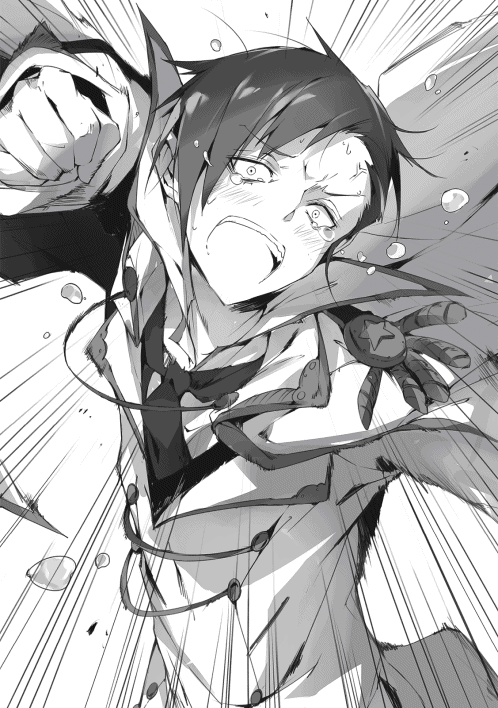
そう言うのなら、と。
俺は再び殴りかかって来るミヤモトに対して、聖剣の返還をするのであった。
聖剣はミヤモトに返したままだ。
城内に侵入した俺たちは二手に分かれている。
シルビィとアルノンは陽動だ。
「貸し一ですわ〜。ナオミ様」
「僕は恩返しだよ。どう、この慎ましやかな感じ！ シルビィと一線を画す感じ！」
「ああ、あと予備の魔法剣ミスリルです。ナオミ様、お使いくださいませ。こういう時にちゃんと武器を用意している。これこそ内助の功、できる半身というものですわ」
「あっ、じゃあ僕はこの可憐な唇を使って、マサツグさんの靴磨きでもしようかな！」
「その綺麗になった靴で踏んでもらうのが真の目的ですわね？」
「何で分かったの⁉」
「はやく行かんか！」
というスムーズなやりとりによって、俺たちは二手に分かれたのである。
「重くない？ マー君？」
「別に大したことは無い。それよりも先を急ぐぞ」
「うん」
弱体化しているのは確かだが、剣を振れないほどではない。問題あるまい。
そして──。
「特別に設えられた巨大地下牢、か。ここで間違いないんだな」
「うん、操られる前、死神モルテから確かにそう言われたもん」
周囲を眺める。
犯罪者などが収容される牢屋とは少し趣が異なる。
見張りの兵士はおらず、薄暗くはあるものの、汚れてはいない。
衛生的というよりも無機質、まるで儀式を執り行うための祭壇の様な場所だ。
牢はむしろ生贄を安置しておくべき結界に見えた。
それは幾つもあり、多数の子供たちが収容されている。
全員が眠らされていた。
「そうか。......それにしても、なぜ敵のはずのお前にそんなことを教えるのか分からんな。やはり罠か？」
「え？ うーん、どうかな。案外、敵だと思ってなかったのかもしれない」
何？
「それは一体どういう」
「あっ、リュシアちゃんにエリンちゃん。それにユースティアちゃんも！」
⁉
見つけたようだ。
が、
「こっちか⁉」
「探せ！」
後ろからシルビィ、アルノンの陽動にひっかからなかった別動隊がやって来た。
「私が行くね！」
そう言うと、止める間もなくシーが飛び出していく。
「にゃー！ にゃー！」
「ふざけた奴がいるぞ！」
「捕まえろ！」
何も言うまい。目立つという事に関しては成功している。
俺はシーに囮役を任せて牢へ近づいて行く。
「リュシア、エリン！ ついでに正義感馬鹿女！」
「うーん、あっ、ご主人様。助けに来てくださったんですね！」
リュシアが反応を示す。
他の二人は目を覚まさない。
だが、見た感じ眠っているだけで、ひとまず全員無事のようだな。
「ふ、たまたま通りがかっただけだ。お前たちを助けに来たわけではない」
シーがいれば何か言われたかもしれないセリフを吐きながら、俺は鉄格子へと駆け寄った。
「それよりもさっさとここを出るぞ。里親の件は嘘だったと聞いた。お前たちガキどもを生贄として集めるためのな。ふん、だからさっさと孤児院に戻って来るといい」
俺はそう言って彼女たちの閉じ込められた牢へと近づく。
そして、鉄格子へと触れようとした寸前、
「いいえ、ご主人様。私はここから出たくありません」
リュシアがはっきりとした声で、そう言ったのである。
「なん、だと？」
俺は聞き間違いかと思い、反射的に問い返していた。
だが、リュシアは再度はっきりと、
「ありがとうございます。ご主人様。お気持ちだけで十分です。ここまで助けに来てくださって、リュシア、本当にうれしかったです。ですので」
ですので、私はここまでで結構です、とリュシアは微笑みながら言ったのだった。
俺は思わず、
「正気か？」
と問い返す。
当然だろう。
こいつが何を考えているのか、理解できなかったからだ。
もしや、敵に操られているのか？
いや、それよりも単純に寝起きで混乱しているだけかも......。
「私は正気ですよ？ ご主人様」
リュシアは明快な口調で言う。とても寝ぼけているようにも見えない。
彼女は続けて口を開いた。
「わたし、ご主人様のために何でもして差し上げたいと思っています。今だって同じです。ご主人様のためなら、何だって差し出します」
「いきなり何だ？ なぜ今そんなことを言いだす？」
言っていることの意味も分からなければ、なぜこんな状況下で、わざわざそんなことを言いだすのかも分からなかった。
ああ、いや。
「まさか、無理やり里親の元に送り出したから怒っているのか？」
俺は「それだ」と思って口にする。単に拗ねているだけだ、と。
確かにあれは乱暴なやり方だった。
こいつらのことを考えてのことだったが、怒るのは無理もない。
だが、それも覚悟の上で......。
「違います。もう本当にお優しいですね、ご主人様は。そんなことを気に病まれていたのですか？」
リュシアは微笑みながら首を振る。
そんなこと、だと？
「ならば、なぜだ？ なぜ、出たくないなどと言いだす？」
俺は思わず問いただした。
自分でも、なぜこんなに焦っているのか分からない。
まるで俺が今まで気づかなかった謎を、目の前に突きつけられているような気がしたのだ。
が、リュシアはもったいつけることもなく、あっさりと答える。
「何って。ご主人様こそ何をおっしゃってるんですか。もうご主人様は孤児院の院長ではないのですから、わたしたち孤児を無理に助ける必要はないんですよ？」
無理に助ける、だと？
「無理など、俺は......」
いいえ、とリュシア。
「私たちを里親に無理やり送り出したことで怒ったと思われたんですよね？ もう、そんなの、ご主人様が私たちのことを思ってやったことぐらい、みんな分かっています。そんなことで、大好きなご主人様を嫌いになるはずがないじゃないですか。そりゃあ......。そりゃあ、すごく悲しかったですけど、同時に嬉しくもありましたし」
「嬉しい？」
はい、とリュシアは頷いた。
「ご主人様は私たちのことを凄く考えて下さってました。だからこそ、自分ではダメだと思われたんですよね？」
俺は思わず答えに詰まる。
いや、頭が真っ白になった、というのが正直なところだった。
なぜなら、全てリュシアの言っている通りだったからだ。
「......ふん、単に厄介払いした可能性もあるが？」
何とか皮肉を口にする。
が、
「それなら、一言、『出ていけ』と告げればいいだけですから。わたしたちは......」
言葉を少し切ってから、
「私たちは、ご主人様に『ここにいてもいい』と、あの日そう言ってもらったから、居場所を得ることのできた孤児たちですから」
そう。
その通りだ。
追い出すことなど、本当は簡単だった。
一言いえば、こいつらは出て行っただろう。
それに、もし出て行かないならば、俺が出ていけばいいのだ。
それだけで、俺たちの関係は解消されていた。
彼女たちは、俺が許したから近くにいたに過ぎない。
だが、そうはしなかった。
その理由は......、
「さっきの続きです。ご主人様のご厚意を拒む理由......。私は......私は、ご主人様の優しさに付け込んでいたんです」
リュシアが突然突拍子のないことを言った。
リュシアが俺の気持ちに付け込む？
「そんな覚えはないが」
むしろ、それならば......、
「いいえ、そんなことはあるのです。わたしは......」
彼女は一呼吸おいてから、
「私はご主人様が思っているほど良い子ではないのです。ご主人様の心根がお優しいのを利用して、ずっと一緒にいたいと願った我儘な孤児なのです。ご主人様が嫌がっても、そのお優しい性格を利用して、ずっと一緒にいたいと。だから、里親の時も思いっきり反対しました。情に訴えかけたんです。ご主人様がどれほど私たちを重荷に感じていたとしても、そんなことは関係ないと。私たちは私たちの望むままに、ご主人様と一緒にいるのだ、と」
でも、とリュシアは呟いた。
「それはご主人様にとってはお辛い事だということも分かっていたのです。ご家族から捨てられたご主人様に、私たちの親代わりをして頂くのがどれほどの苦痛か......。よく分かっていたのです。だから......だから、こうして生贄として捕まった時に、いいえ、『死ぬ』のだと教えられたときに、私は決めたんです」
「決めた？」
何を？
いや、そんなことは言うまでもなかった。
「ご主人様が私たちを完全に切り捨てられるように生贄になることを、です。そうすれば、お優しいご主人様は、もう私たちのことで気を煩わされることはありませんから」
「何をバカなっ......！」
俺は思わず叫ぶ。
が、
「何でも差し上げると言いましたよね？ なら、この命だって例外ではありません」
淡々とそう言った。
あっ、でも、と慌てた様に続け、
「エリンちゃんとユースティアさんは助けてあげて下さいね。これは私だけの思いですし、お二人を巻き込むわけには行きませんから」
そこは焦ったように言う。
......この馬鹿が。
「お前の決意など知らん。まったくもって的外れだからな。聞くに堪えん。ふん、ともかく、全員ここから助け出す。お前の誤解を解くのは、とりあえず孤児院に帰ってからだ」
俺は早口でそう言った。
ひどく動揺しながらも、なんとかそれだけを口にすることが出来たのである。
内心は大混乱しているというのに。
ともかく、どんな状況下でも体だけは動くのが、俺がその生い立ちゆえ取得せざるを得なかった特殊技能である。今はそれをフル活用していた。
正直、リュシアの言っていることに何の反論も出来ない。
正しいのか間違いなのかもよく分からなかった。
だが、痛いところを突かれたのだ、という自覚はあった。
でなければ、生まれて初めてと言って良いほどの、これほどまでの混乱はしないだろう。彼女の言った言葉を何一つ整理できないのだから。
だが......。
だが、ともかく今は、彼女の言葉を何一つ認めてはいけない。なぜか、それだけは確信していた。
認めれば何かが決定的に終わってしまう、と。
俺の脳がそう警鐘を鳴らし続けていたのである。
ゆえに。
ゆえに、俺の体は俺の意志を離れて動き続けた。
反論を、言い訳を、何か理由を考えるのは後でも良いと。
今はこの窮地を脱することが先決だと。
だが──、
「虫たちの声がうるさいと思えば、そなたであったか」
そこに死神はやって来た。
「死神モルテか」
「そなたはナオミ・マサツグであるな。来ると思っておったぞ？ だが、お主の希望はかなえられぬ」
階段から降りて来たモルテは淡々と、ただ事実を紡ぐように言う。
ふん、と俺は鼻を鳴らす。
「邪魔をしに来たか。死神自ら、虫けらと認識する相手にご苦労なことだ」
「もっともじゃが、そなたは別よ。そこいらの地を這う虫どもとは違う」
俺は少し目をつむってから、
「ふん、貴様の訳の分からん物言いはこの際どうでもいい。かかってくるといい。俺はお前を打倒して、牢からこいつらを連れ出すだけだ」
が、死神は不思議そうに首をコテンと横に倒すだけで、
「その労力は不要であろう。気づいてはおらぬのかえ？」
「なんだと？」
今度は俺が眉根を寄せた。
と、死神がニマニマといやらしい表情を浮かべ、
「分からぬか。ふふふ、いと愚か者め」
「ちっ」
俺は舌打ちをすると、
「貴様にかまっていては時間の無駄だ！」
そう言ってシルビィから受け取ったミスリルを掲げた。
そして、
「リュシア離れろ！ はああああああああああああああああああああああああああああああああ!!」
バッキーンッ！
全身全霊を込めて、その刃を振るったのである。
予想通り、雷鳴の様な大音声が鳴り、そして、
『カラン......カラン......』
と、鉄の破片が地面を転がる音がした。
「なん......だと......？」
「そ、そんな⁉」
俺とリュシアが同時に声を上げる。
「言ったであろう？ 我は指一つ動かす必要を認めぬ。なぜなら、その牢は我の作った結界。人の持つ魔力ごときで通じぬは道理ゆえ」
人類の作り出せる最強の剣。
ミスリルはその姿をむごたらしく変えていた。
そう、先ほどまでの美しい刀身は既になく、その刃は根元から破断。
その断面からはまるで血のように、内包されていた魔力が顕現化して流れ出していた。
足元に転がる虹色だった物体は、今は鉄くずのように鈍い銀色を静かにたたえるのみである。
「くっ、ま、まだだ！」
俺は驚きながらも、すぐに気持ちを切り替えて鉄格子に掴み掛かる。
萎縮することは無意味だ。
そんな態度はハイエナに弱点を晒す様なものである。
常に動き続けることだ。そして動じないこと。
しかし、
「ぐああああああああああっ⁉」
格子に振れた俺の手からブスブスと煙が上がり始める。
モルテの強力な結界が俺の手を焼いているのだ。
その熱量は言語に絶する。地獄の煉獄ですら、これほどの灼熱をたたえはしまい。
「ご、ご主人様⁉ ど、どうして⁉ わたしが触ったときは何ともなかったはずなのに！」
「ふむ、その程度の理屈も解せんとはあきれ果てた虫よな」
そう言ってモルテは蔑視を向ける。
「無論、わらわがそう設計したからに決まっておる。我は神ゆえ、魔術も自由に作り出せるからの。此度は......」
彼女はそう言うと、ブォンと自らの掌の上に即席の魔力弾を作りだして、
「このような仕掛けで、そなたをもてなそうとしたまでじゃ！」
そう叫んで、こちらへすさまじい速度で打ち出す。
「チッ」
俺は紙一重でかわす。
そのまま魔力弾は牢屋へと直進する。
ぶつかる！ そう思った瞬間、
『カッ！』
そんな世界を灼くが如き、すさまじい魔力が牢より放たれたのである。
魔力弾は消滅していた。
「これは......同じ力？」
「さすが察しは良いようじゃの」
モルテは満足そうに、
「そなたがどれだけの力を振るおうとも破れぬ『不破の檻』というわけよ。強大な力を振るうならば、それを対消滅させる魔力を放出する。無力な......例えばそこな虫が触れても、ただの鉄格子にしかすぎぬといった具合にな」
「ふん、たかだかガキどもを閉じ込めるためだけに御大層なことだな」
俺は皮肉を込めて言う。
だが、
「まあ、その通りじゃの」
死神は突然ため息を吐くと、
「ナオミにここまでする必要はなかったようじゃ。優れていると言っても、所詮は人よ。無力でか弱い、哀れなる者に過ぎぬ」
そう言って、憐憫に満ちた視線を俺に向けたのである。
俺はその言葉に、カッと頭に血が上るのを感じた。
馬鹿にされたからではない。
罵られたからでもない。
「俺を憐れむとは、いい度胸だな、死神よ」
そう言って俺は睨み付けた。
長い髪を揺らしながら、こちらを悠然と見下す、この世界の生命の終端を司るグレート・オールド・ワンを。
だが、
「無理はよすがよい。か弱き仔よ」
モルテはそう言って更に憐憫を深める。
「先ほどそなたは鉄格子へと......わらわの結界に振れた。そして、その全力をもって格子を破ろうとしただろう」
「だから、どうした？」
俺は淡々と言う。
いや、出来るだけ淡々とした調子で答えた。
「先ほどから言っておろう？」
モルテは言葉を続け、
「無理をするでない。なぜならば、もはや、そなたに力は残っておらぬのじゃから」
「えっ、ご主人様？」
モルテの言葉にリュシアがこちらを見た。
忌々しい。俺は舌打ちをする。
誰かに憐れまれることも、リュシアにそんな表情を浮かべられることも俺の癇に障った。だが何よりも頭に来るのは、
「ふん、この程度で終わるものか！」
俺は膝をつきそうになるのを何とかこらえる。そして、もう一度鉄格子へと触れた。死神の作った結界へともう一度挑むためだ。
が、格子は反応すらしない。
俺の力がもはや無いから、それを相殺する必要がないためだ。
いけ好かない死神の言葉に反論する余地すらない。それがあまりに腹に据えかねた。
「くっ......」
「終わりじゃの。ナオミよ。そなたならばよもやと思うたが、もはやここまで。神の求めた仔へと成ってはおった。しかし、愛し仔ではあろうと辿りつけぬのならば意味はない。邪神ルイクイ様は間もなく復活し、世界はこれにて終焉を迎えよう。わらわもまた、数万年の時を生死の狭間で揺蕩うこととしようぞ。数億の命を冥府へ送ってからのう」
死神が葬送の詠唱を呟く。
だが、俺に反応している余裕はない。
諦めるつもりは無論なかった。
だが、どうすればいい？
どうすればこの窮地を脱することが出来る？
「では、さらばじゃ。ナオミよ」
そう言ってモルテが先ほど放った光弾をいとも簡単に十以上生み出した。
しかも、一つ一つから放たれる魔力は先ほどの数十倍に達している。
「くそっ！」
俺は覚悟を決めて、モルテへと突っ込もうと足に力を込めた。
作戦も何もない。破れかぶれの一撃を加えてやろうとしただけだ。
が、その時──
「待ってください！」
リュシアの声が地下牢へ響き渡ったのである。
「ご主人様！ どうして逃げて下さらないんですか！ 私たちはもうあなたの孤児ではないんですよ⁉ ご主人様は孤児院長ではないんです！ ですから、私たちのために戦って頂かなくてもいいんです！ 早く逃げて下さい！ 逃げるだけなら、ご主人様なら何とかなります！」
「そんなことが出来る訳がないだろうが！」
俺は思わず怒鳴り返す。
そんなことできる訳がない！
何をバカなことをと叫ぶように言うが、
「どうしてですか！ 訳が分かりませんよ、ご主人様!!」
リュシアもまた、必死に怒鳴り返して来た。
（いや、これは悲鳴だ）
俺は思わず悟る。
そう、リュシアは悲鳴を上げているのだ。
なぜなら、そう、俺が彼女たちを助ける理由が既にないにもかかわらず、俺がこうして、世界を滅ぼさんとする敵と対峙するなどという、訳の分からない行動に出ているからだ。
俺自身、訳が分からない
「それは......」
本当になぜなのだろうか。
俺はどうして、孤児院長でもない、赤の他人でしかないこいつらのために、世界を滅ぼす存在などと対峙しているのか。
「ああ、でも、それもまたご主人様らしいのかもしれません。なら、私も私の出来ることを、ご主人様のためにしなくては」
「リュシア？」
だが、リュシアはすぐに決意に満ちた冷静な声を上げた。
そして、
「何をしている？」
「何って......」
リュシアは鈍色に光るものを自分の首筋に当てていた。
か細い首には似つかわしくない、武骨で鋭利なそれ。
そう、エリンが普段持ち運んでいる『ナイフ』であった。
「捕まった時、武器は一切取り上げられませんでしたから。この結界があれば、そんな必要ないですからね。でも......」
リュシアは微笑み、
「それは大きなミスでした。確かに外に出ようとする分には役には立ちません。でも」
そこで少し言葉を区切ると、
「こうやって、ご主人様の楔を断ち切る刃としては役に立ちました」
「馬鹿が！ 何をしている!!」
俺の叫びにリュシアは落ち着いた声音で、
「お優しいご主人様は、何の縁も結ばれていない私ですら、こうして助けようとしてくださいます。私がいるから、ご主人様はお逃げになられない。いわば楔......なら、話は簡単です！」
「まさか⁉」
「私がいなくなればいいんです」
彼女はそう言うと、腕に力を込めた。
パッと綺麗な鮮血が舞った。
なぜだろうか。
なぜ、俺は彼女たちを助けに来たのだろうか？
『見捨てられる訳がないだろう！』
当然、そう思う。
......なぜ当然なのだ？
見捨てるべきではないのか？
関心など持たないことが俺らしいのではないか？
無論、一か月程度を一緒に暮らしたことは事実だ。
ならば、多少同情心が沸くことは否定しない。
自分は冷血で冷酷な人間だが、鬼ではない。
多少の感情が動くことはある。
だが、こうやって......。
城門を破り、そこに群がるのは無数の兵士。
アルノンやシルビィに陽動を頼み、自分はかつての級友どもを打倒してまでここに来た。
死ぬかもしれないのに。
何より、助けたとして、捨てた孤児たちに恨み言を吐かれるかもしれないのに。
だが、俺は頭のどこかで確信しているのだ。
『何度やり直そうとも、俺は必ず彼女たちを助けに敵地へと乗り込んだろう。たとえ、その相手がどれだけ強大な敵であろうと。国家であろうと、世界であろうと。......無論、邪神であろうと』
世界を破滅に導くことになったとしても。
それは一体、どうして......。
しかし、
『間に合わない！』
俺は確信を抱く。
思いの丈がいかほどであろうとも。その心根がいかに感情をほとばしらせようとも、それはゆるがせることが出来ない、たった一つの真実であった。
俺とリュシアとの間には、死神の作った『結界』がある。
絶対に破れない檻。いかなる強大な力すら相殺する力を持つ恐るべき障壁だ。
彼女はその結界の中にいる。
ゆえに、彼女の自死を止める術を俺は持たない。
そう、この手は彼女に届きすらしないのだから。
届かない手で、どうやって彼女を助けられようか。
赤の他人である彼女たちを『守る』理由すらないのに！
「......いや」
俺は微かな違和感を覚える。
結界は煌々と輝きを放ち、俺を嗤うように瞬いていた。
その向こうにはリュシアがナイフを首へと突き立てようとしている。あと、ほんのコンマ一㎜。時間にして刹那。一瞬の後には綺麗な血しぶきが結界の中を汚すだろう。
そして、俺の背後にはその光景をつまらなさそうに眺める死神モルテがいる。虫たちが愚かな喜劇を興じているのをクスリともせず鑑賞している。
『気に入らない』
と、誰かの声が聞こえた気がした。
俺は突然聞こえて来た声に驚き、左右を見る。
だが、誰もいない。
『気に入らないぞ』
更に聞こえて来た。
今度こそ何なんだ、という気になって視線を巡らせる。
だが、やはり誰も見つけることは出来ない。
自ら命を絶とうとするリュシア、それを眺める死神。愚かな自分という三者だけだ。
「気に入らないな」
と、今度はすぐ近くから聞こえた。
否──、その言葉は、
「気に入らないぞ！」
俺の口から漏れ出ていた。
そう。
そうだ。
気に入らない。
気に入らないのだ。
考えるまでもない！ 単純にして明快！
俺はこの状況が、
リュシアたちを里親に出すと決めた瞬間から──否、
『里親などという輩がしゃしゃり出て来た瞬間から』
当の初めから、メチャクチャむかついていたのである。
だって、そうだろう。
「守る理由はない」
それは事実だ。孤児たちが巣立ったのならば、守ってやる理由はない。しかし──、
だが、しかし!!。
「誰が守りたくないなどと言ったあああああああああああああああああああ!!」
俺はそう叫ぶと、リュシアに向かって手を伸ばした。
その瞬間、今まで引き延ばされていた時間が一瞬にして高速で再生を開始する。
リュシアの持つナイフが首を薄皮を一枚、薄く突き刺した。
そして刹那の後には、彼女の綺麗な首に穴が穿たれ......、
否、
「あ──」
「む......？」
「いてぇ......」
結界内に、パッと綺麗な鮮血が舞った。
そう、
「負傷を負ったのは初めてだが、まさかリュシアにやられるとはな」
ナイフを思い切り掴んだ俺の手のひらから勢いよく血が流れ出たのである。
「ご、ご主人様、だ、大丈夫ですか！ は、早く治療を！ そ、それに！」
リュシアは目を見開きながら、
「ど、どうやって死神の不破の檻を......。け、結界を？」
「結界だと？」
俺はその言葉を鼻で嗤い、
「あんな飴細工、お前たちを守るのに何の障害にもならん」
そう言った瞬間、後ろでガラガラと鉄格子が崩れ落ちる音が鳴り響いた。
無論、
「俺にかかれば、だがな」
それは先ほどまで不破と死神が謳ったモノ。その成れの果てであった。
だが、そんなことはどうでもいい。
仕方ない。
本当に仕方ない。
が、たった一回だけ。
今、生涯に一度しか口にすることは無いであろう言葉を、俺はここではっきりと言葉にしておかなくてはならない。
そうしなければ、こいつがまたバカな真似をするかもしれないからな！
......そして、俺という馬鹿にもついでに反省を促すためにも。
「リュシア！」
「は、はい⁉」
俺の大声に、ただでさえ状況を飲み込めていない彼女は目を白黒とさせる。
ちょうどいい。あまりジックリ聞かれるよりかは余程マシだ。
「俺は......俺のやりたいようにやるだけだ」
「......え？」
リュシアが首を傾げた。
さすがに今の言葉だけでは伝えたことにならないか。
シーじゃあるまいしな。
ちっ、仕方あるまい。
「俺は、よく分からんがお前らを『守る』ことが嫌ではない、と言ったんだ」
最初、リュシアはポカンとした表情を浮かべる。
恐らく俺が何を言ったのか理解できなかったのだろう。
だが、徐々に目を丸くすると、
「そ、それって⁉」
ふん。
「俺が孤児院長なのか、そうでないかなど実にくだらん。それこそどうでもいいことだ。ワルムズ王に院長をクビにされようが、里親が見つかって俺が院長失格の烙印を押されようが......」
俺は息を深く吸うと、
「俺はお前たちを守る。ただ、俺が守りたいから、お前たちを守るんだ」
最後は思わず早口になってしまった。
ちっ、だが、言うべきことは言った。
笑うか呆れられるか......。
ふん、どうとでもなれ。
......が、リュシアは優しい笑みを浮かべると、
「ご主人様......。実は私もなぜか分からないのですが、ご主人様と......マサツグさんと、ずうっと一緒にいたいと思っているんですよ？」
似ていますね？ と彼女は言ったのだった。
ふ、
「ならば、お前と俺は似た者同士なのかもしれんな」
「⁉ は、はい！ きっとそうです！」
リュシアの元気な返事が地下牢にこだました。
──そして、
「策はならなんだか。直接対決は避けよと言う邪神様のお言いつけに従い、モンスターを放ったりと色々してみたものではあるが......やはり奸計をもってして、そなたの力を封じることはかなわなかったようじゃのう。まさか、自分の殻を打ち破るとは。守りたいから、守る、か。ふふふ、その強固なる意志、自由なる翼がごとき躍動。さすが......」
死神は一度言葉を切ってから、
「さすが、人の剣であるなあ」
「勇者、だと？」
「自覚がないのかえ？ さよう、そなたは勇者。世界を救う人の剣よ」
「訳の分からんことを言うな。そんな話は聞いたこともない」
否......それは以前、どこかで聞いた言葉だ。
勇者。
善神の御使い。
世界を救う者。
ゴブリン王が邪神へ力の解放を望んだ際に叫んだ言葉。
その中にあった荒唐無稽な単語だ。
「まあ、どちらでもよい。自覚があろうがなかろうが。これか起こることは変わらぬのじゃから」
すなわち、それは、
「行くぞ、勇者よ。決着をつけよう。貴様によって邪神の復活は防がれた。だが、まだ芽がないわけではない。この──」
大鎌がいつの間にかその手に握られている。
「この死神モルテ。邪神ルイクイの尖兵を仰せつかっておる。そなたの意志を再度くじくとしようぞ？ そして、世界に終焉をもたらそう」
死神の冷徹な声が最後の戦いの始まりを告げた。
「はぁ！」
「くぁ⁉」
モルテの大鎌をかわして懐にやすやすと入り込む。
俺の突き上げた拳が、死神の鳩尾をえぐるように突き上げた。
『守る』
その力を取り戻した俺には、死神の動きが手に取る様に理解る。
「て、手加減を知らぬな！ 人の剣よ！」
「妙な名で呼ぶな、死神！ 俺はただの院長だ！」
ガギン!!
もう一撃、と放った拳は、今度は刃の腹で受け止められた。
「ではナオミよ！ 世界を救う......いや、今まさに世界を救わんとする勇者よ！ 我らとともに来い！ 貴様以外は虫に過ぎぬ。そのような者たちを救って何とする？」
訳の分からんことを言ってくる。
だが、一つだけ明らかなことがあった。
「誰が勇者だ!! 俺はただの......」
息を大きく吸って、
「俺はあのガキども限定の孤児院長だ！ 他の奴らのことなどあずかり知らん！ 剣だとか勇者だとか、そんな訳の分からんものでは断じてないわ！」
叫ぶのと同時に、相手の後ろへと移動して回し蹴りを放った。
「ぐはっ！」
勢いよく死神が吹きとばされ、壁に打ち付けられた。
その衝撃で天井が崩れ、瓦礫が死神を埋めようとする。
「その程度か？」
「まさか、まさか」
さすがの死神は、平気な顔で立ち上がる。
いや、
「やせ我慢はやめることだ。死に近しい神は傷の治りが悪いのだろう？」
「ほう、なぜ知っておる？ ああ、あの水神がおったな」
モルテはそう言うと、乱れた黒髪をばさりと払う。
が、
「......邪魔であるな」
そう言って、そのカラスの濡れ羽よりなお黒き髪を、ばっさりと、その大鎌で切断したのである。
「なっ⁉」
俺は一瞬不意を打たれる。
何をされても、それこそどんな攻撃が来ても油断しないつもりであった。
だが、目の前で女がその髪を......、俺から見ても美しい長髪を無残に切って捨てるとは、完全なる想定外だ。
「何をしている！」
「無論、時間を稼ぐためよ」
「なに......くっ⁉」
切られた髪が刃のようになって俺に襲い掛かって来る。
そんなものでやられたりはしない。
次々に撃ち落とす。
だが、前進は阻まれた。
その一瞬に、奴の後ろには多数の人影......いや、ゾンビどもが現れていた。
中には見知ったクラスメイトたちの顔もある。
「やはり貴様が殺して操り人形にしていたか！」
「殺してはおらぬ。人間どもの持つ死の側面を前面に押し出しておるのよ。ゾンビには変わらぬが、わらわさえ倒せば元に戻ろう」
死神はそう言ってから、
「さあ、行くがよい。忌まわしい虫たちよ。わらわが『正装』するまでの時間ぐらいは稼げよう？」
「......はい。モルテッシモ宰相閣下」
まさに操り人形といった具合に、ゾンビたちがこちらへと迫って来る。
ふん、肉の盾といったところか。
非道などと死神をなじっても仕方あるまい。
一気に吹っ飛ばし、奴にもきつい一発をお見舞いするだけだ！
俺は距離を詰めるべく、駆け出そうとする。
が、
「マサツグウウウウウウウウウウウウウウウウウウウ、てめえだけは許さねえぞおおおおおおおおおおおおおおおおおおおお!!」
絶叫の声を上げながら、ミヤモトが斬りかかって来た！
ギイイイイイイイイイイイイイイイイイイイイイン......！
聖剣が俺の体へとめり込む！
「はっ、ははははっははははっはははははっははははっはは!!」
ミヤモトの狂った様な笑いが響く。
「やった、やったぞ！ 俺が、俺がやった！ 聖剣、聖剣フランブワンで俺がやったんだ！ 俺が俺が真の勇者なことがこれでっ......！」
「痴れ者めが」
「馬鹿が」
モルテッシモの呟きと俺の声が重なった。
肩にめりこんだ聖剣は何ら痛苦を俺に与えてはいない。
それどこか、
「ぎゃっ⁉」
今まで剣を振り回していたミヤモトが崩れ落ちるように大地にめりこんだ。
担い手としての役割を終えたために、聖剣が再びミヤモトを拒んだからだ。
「なかなか容赦の無い聖剣だな」
「......」
反応がない。どうやら気絶したようだ。
だが、その間にモルテッシモには逃げられてしまった。
「ご主人様！ 死神の匂いなら追えます！ 特徴のある果物が腐ったような甘い香りです！」
「いてててて、寝違えた。くそ、何が起こってんだか眠ってたからさっぱりだぜ！」
「マー君、誘導完了だよ！ あとはシルビィちゃんとアルノンちゃんがやってくれるって！」
三人が集まって来る。
「よし、追うぞ！ ルーナ孤児院復活だ！ そして、これが最後の戦いだ！ 気合を入れろ!!」
「おおー!!」
「なんだ、なんだ？ マサツグらしくねえじゃねえか。でも、そういうのは嫌いじゃねえぜ！ おー!!」
「そうそう、やりたいようにやったらいいんだよ！ おおー!!」
いちいち締まらないが、ともかく鬨の声が地下牢にこだました。
「くそ、鬱陶しい！」
「ひええ、ゾンビさんがいっぱいですうううう⁉」
「エリン様の華麗な風魔法を披露してやるぜ！」
「私の前に立ったらグーで殴るよ〜！ くらいやがれぃ、お姉ちゃんパーンチ!!」
俺とシーがわらわらと沸いてくるゾンビどもを拳でなぎ倒し、吹きとばして行く。
その後ろからエリンが風魔法で援護し、最後尾のリュシアが自慢の鼻を活かして誘導役を務めていた。
なお、ユースティアは地下牢に残り、他の誘拐された子どもたちの避難を任せてある。
「モルテはこっちに逃げたんだな？」
「はい。臭いはそちらへ続いています」
「ふん、俺に恐れをなしたか」
俺は軽口を叩きながらゾンビを投げ飛ばす。
いや、さすがにそんな訳がないことくらいは分かっている。
遊んでいるのか？
（ちがうな）
遊びとは少し違う。
そう、奴の口調をマネれば、戯れというものに近い。
遊んでいるのではない。遊ばれているのだ。
「ちっ、ふざけた奴だ」
俺は苛立たし気に吐き捨てる。
「で、結局、今回は何がどうなってたんだ？ 眠っちまってたから、あたしにはイマイチ何が起こってやがったのか分からねえんだが......」
エリンが首をひねって言う。
「ふん、別にどうということはない。邪神を復活させ、世界を滅亡させようとした死神が、その生贄としてお前たち孤児を集めていたというだけだ」
「って、大したことあるじゃねえか！」
そんなことになってやがったのかよ......。
ふ、
「だが、それがどうした。世界がどうなるかなど、どうでもいいことだ。俺はただの院長だぞ？ 興味もない」
マサツグらしいな、とエリンが呆れた声を上げた。
ただよ、と続ける。
「あと一つ、どうしても理解できねえことがあるんだけど」
何だ？
「どうして里親を紹介するなんて、面倒な手段を取ったんだろうってな。ばばーって、さらっちまえば済む話じゃねえか？」
他のガキどもと一緒でよ、と。
ああ、そのことか。俺は納得する。
それは俺を孤児院長ではなくするためのモルテの策略だった。
俺のスキル『守る』が発動しないように、院長ではなくそうとしたのだ。
だが、そのことを説明する訳にはいかない。
言えば、俺が孤児院長などという立場がなくても、こいつらを『守る』ことにした、ということまで説明しなければならなくなる。
そんな恥の上塗りをするつもりは毛頭なかった。
「さあな。それこそ死神の戯れというやつだろう」
「ふーん」
エリンが納得したような、していないような微妙な声を上げる。
と、目の前に装飾華美な悪趣味極まる大きな扉が現れた。
「玉座の間か」
久しぶりだな、ここに来るのは。
「ここです、ご主人様！ ここからあの死神さんの匂いがします!!」
そして、どうやらここが終着らしい。
「......いくぞ」
「「「はい!!」」」
俺の言葉に三人は頷く。
そして、勢いよく玉座の間の扉を押し開いたのだった。
「よくぞ参った」
そう言って玉座に死神はゆったりと座っていた。
短くはなったものの、カラスの濡れ羽よりなお漆黒の髪と、光を一切反射しない底なき瞳。肩には武骨な大鎌の柄が添えられ、鈍色の刃は三日月のように光る。
ん？
「ワルムズ王はどうした？ 殺したのか？」
「ワルムズ王？ さて、よく知らぬよ。有象無象の虫のことなど覚えておらぬ。そもそも我には虫の判別が難しいゆえな」
死神はそう言って立ち上がる。
──死が動き出した。
腐った果実の様な甘い匂いが漂う。
「しかし、もう少しであったのだがな。あと少しで邪神ルイクイ様を復活させ、この世界に終焉をもたらすことが出来そうだったのじゃがのう」
さして残念でもなさそうに、モルテが言った。
「では、降参するか？」
「そなたらのような弱者にひれ伏すというのか？ まあ、それもまた被虐趣味らしくてよいのかもしれぬがな」
モルテはそう言って冷めた瞳をこちらに向けて来た。
「強がりはよしやがれ！ もう退路はねえぞ！」
「強がりでないことは、そこの勇者が一番よく分かっておろうよ」
ふん。
「正装とか言っていたか？ やるならば早くしろ」
「そうじゃな。では、はしたないが許せよ？ ナオミ」
死神はそう言うと、天高く鎌をかかげる。そして、
「ルイクイ様。善神の導きによりあなたの命を屠る運命を持つ人の剣が現れました。見えぬでしょうが、まさに我が目の前に。どうかわらわの現世封印を解除つかまつれ」
その声とともに、
ドンっ！
大音声。雷か爆弾か、何かが直撃したのかと思われた。
それほどの耳をつんざく衝撃、そして圧倒的な、
「な、なんだよこれ？ さっきまで、あたしたちは玉座にいたはずなのに......なのに......」
エリンが叫ぶように、
「なんで青空が見えてやがる⁉」
彼女が驚愕に震えるのも無理はあるまい。
なぜなら、今まであった光景が一変していた。
華美に彩られた玉座は地獄のような惨状を見せている。天井は吹きとばされ、壁と言う壁が崩落している。
そこかしこから呻き声が聞こえてきていた。
今の一撃で玉座の間の周囲一帯が壊滅したのだ。
まるで城の屋上にいるかのような光景がそこには出現していた。
「脆いのう。たかだか邪神様のお力を降ろしただけじゃというのに」
そう言って、もうもうと立ち昇る煙の中から現れたのは、死神モルテであった。
だが、
「ふん、貴様の姿のほうがよほど、この惨状よりも酷いと思うがな？」
「違いない。だから言ったであろう？ はしたないが許せと」
死神がそう言うのと同時に、吹き曝しに流れる風が、立ち昇る煙をさらって行った。
そして、その威容が完全に姿を現す。
間違っても、先ほどまで不気味なほど美しかった女の姿ではない。
なぜならば、
「さっきまでは生の側面を強めておったからの。現世では死の側面が矯正を受けるゆえ。じゃが、それもたった今、時間的な制限はあるにせよ解除された」
そう言って、死神はその真実の姿を現す。
右半身は先ほどと同じ、美しい黒髪の女の容姿を保っている。
だが、もう一方は、肉が腐り落ち、不気味なほど白い骨を晒す。
なにより、
「雲を突くほどの巨体。それが貴様の真の姿か？」
「さよう」
声は上方から降って来た。
下半身は蛇、上半身は人。しかして、その半身は生と死を示す化け物。
既にモルテの体はここにはない。
地上へと降りて立っていた。
俺たちから見えているのは、玉座の間をのぞき込むようにする死神の顔と、その上半身だけである。
「だからアリと言う訳か？」
「言い得て妙ではあるが、無論、それだけではない。無様にわらわに踏みつぶされる、はかなく下らぬ生命たちという、それが本来の意味ゆえなあ！」
死神はそう言うと同時に、右腕を振り上げる。
同時に天を突くほどの巨大な大鎌がその手に現れていた。
それを容赦なく、殺意を刃に乗せ横薙ぎに振るってくる！
「エリン！ 避退の風!!」
「いきなりだな、マサツグは！」
文句を言いながらもエリンは咄嗟に魔法を発動させた。
俺たちの体が風によって浮き上がり、高速で迫る鎌をすんでのところでかわす。
回避をこいつに任せられる分、俺たちは攻撃に専念できる！
「えーい！」
「お姉ちゃんパーンチ！」
「くらえ！」
一斉に攻撃を仕掛けようとした。
しかし、
「死の風よ。吹き狂え」
死神がそう言った瞬間、ゾクリとした悪寒が俺の背中に走る。
「ちっ！」
俺は舌打ちをして、奴の顔面に渾身の一撃を叩きこもうとしている二人を掴んで後退する。
「ご、ご主人様⁉」
「うおおおおおおおおお！ この行き場のないお姉ちゃんパンチの熱情はどこに向ければ⁉」
「木に向かってでもやっていろ！ それどころではない！」
俺はそう叫び、咄嗟に手をかかげる。
「こいつらを『守れ』！」
瞬間、
ドオオオオオオオオオオオオオオオオオオオオオオオオオオオオオオ‼
紫色の靄が俺たちを飲み込んだ。
鼻をつくような甘ったるい、果実の腐ったような匂い。
常に死神モルテから漏れていた抗いがたい誘惑の香り。
死神モルテの原点となる、『死』そのものが発する呪いである。
「防ぐか。だが、それでいかんとする？」
「ふん、いい気になっていろ。この靄が晴れた時が貴様の最期だ」
「それはナオミらしからぬ愚考であるなあ。死はわらわの神性そのもの。であれば、有限であるとなぜ考えたか」
「ちっ」
何度目かの舌打ちをする。
とんだ反則技だ。
奴が奴である限り、この触れれば即死というトンデモ攻撃は永遠に続くらしい。
倒さねば、この靄は晴れない。
だが、倒すにはこの靄を何とかするしかない。
『守る』だけならば、何とかなる。
だが、守っているだけでは、攻撃に移ることができない。
せめて、この霧を防ぐような盾があれば......。
いや、
「あるわけがない」
俺はそう言って手に握られた剣を見た。
そう、『聖剣フランブワン』である。
ミヤモトを倒した際に持ってきたのだ。
神殺しの剣。
神性を打倒すると伝承されし剣。
奴に届きさえすれば、倒すことは出来るだろう。
剣からはすさまじい力が伝えられていた。
切り札はこの手にある。
しかし、
「奴にこの剣を届かせるためには、死の靄を無効化できる盾が必要だ。前進するための盾が」
だが、そんな盾など人が生み出せる訳がない。
「さよう。そして、伝説においてもそのような盾が存在したことは無い。防ぐことのできない『死』と伝承された通りである」
死神モルテが嗤った。
「そして、良いことを思いついたぞ、ナオミよ。世界を救う者よ。わらわがこの姿でいられるのは七日七晩である。ならば、その間、わらわはこのまま死を振りまき続けるとしよう。ふむ、世界を破滅させることは貴様に邪魔されはした。だが七日もあれば、この靄でワルムズぐらいは包み込むには十分」
──われは謙虚ゆえ、王国の崩壊ぐらいで我慢するとしようぞ。
「ちっ、そんなことになれば......」
「私たちの孤児院も無事では済みません！」
「くそ、なんとかしねえとッ!!」
「お姉ちゃんの弱まっちゃった力じゃ押し返せないし、どうしたらいいの〜！」
俺の力があれば負けはしない。
だが、勝つことも出来ないのだ。
その間にワルムズ王国は崩壊し、無論孤児院も死の靄に呑まれるだろう。
孤児院はこいつらの......俺たちの帰る場所だ。
失うわけにはいかない。
だが、どうすればいい？
奴の言った通りなら、伝説においてすらこの靄を防ぐ盾は存在しない。
ならば、
「人の持つ力そのものならばどうだ？」
「「「えっ？」」」
ガキどもが声を上げるが、
「ふふふ、ナオミよ、それは名案であるな。じゃが、それは今、そなたが成し遂げている奇跡！ しかして、そのように勇者のみが使える護界の系統樹を発動すれば、逆に前進は出来ぬは道理。どうじゃ、その孤児どもを見捨ててみるか！ ワルムズを、世界を救うのが貴様の役割であるぞ？」
「人が適当に張っているバリアに妙な名前を付けるな！ それに、世界などどうでもいい。俺はただの院長だと言っただろうが！ こいつらを守るだけだ！」
「つまらぬなぁ、惑いもせぬとは」
そんなことを今更悩むつもりはない。俺が救うのは世界ではなくガキどもである。
世界はついでに救ってやるに過ぎない。
だが、
「ふむ、じゃが膠着状態が続けば、わらわの勝ちよ。時間は我の味方。ワルムズは崩壊し、お主は世界を救うのに失敗するのじゃからな」
その通り。
しかし───
俺は鼻で嗤う。
「何を嗤うか。そのガキどもを守れば勝ちであるからかえ？」
「馬鹿を言うな。俺が嗤ったのはお前の勘違いぶりにだ」
「なに？」
死神が怪訝な声を上げた。
と、その時である。
「マサツグぅぅうぅううううううううううううううううううううううう！ てめええええええええええええ、ここにいやがったかああああああああああああああああ!!」
そう叫びながら、場違いな人間が一人、崩れかけた階段から現れた。
「膠着状態？ 時間が貴様の味方だと？」
「そこの虫、なぜ......なぜじゃっ......!!」
モルテは初めて驚きの声を上げ、
「なぜ、この死の靄の中で動いておるっ⁉」
そう、それは俺に奪われた聖剣を取り返すために現れた、『聖剣の担い手』ミヤモトであった。
「マサツグうううううううううううううううううううう！」
そう叫びながらミヤモトが死の靄をかき分けて、俺の結界の中へと突撃して来る。
「俺の聖剣をかえしっ......！」
「来ると思っていたぞ。よく来た、もう一つの切り札よ」
「切り札？ この俺が切り札だと？」
切り札、と言う言葉にミヤモトの前進がぴたりと止まる。
「そうだ。今、あの目の前のデカ物がワルムズを、世界を破滅させようとしている。お前の力が必要だ！」
「は......ははははっはははははは！ 当然だな！ 俺こそが勇者、聖剣の真の担い手だ！ どうやら俺の出番らしい！ よし、その聖剣を渡せ。俺が見事、あの化け物を倒してッ......！」
「いや、お前の役割は『盾』だ。剣じゃない」
「倒して......って、は？」
間抜けな表情を晒すミヤモトを無視して、俺は近づいて来たミヤモトを捕まえる。
そして、後ろに手をまわして拘束すると、
「な、何しやがる⁉」
「さっき説明しただろうが。そして、お前は承知しただろうに。お前は切り札になるんだ」
そう、
「その無駄に高い抗魔力とやらを活かして俺の盾になれ！」
「な、なんだと⁉ 俺は勇者なんだ！ その俺様がどうして盾役なんぞに──ッ」
「黙っていろ。舌を噛むぞ！」
「ま、まて、ぎゃあああああああああああああああああああああああああああああ⁉」
「お前たちも掴まれ！ チャンスは一回、それ以上は盾がもたん!! 全力でぶん殴れ！」
「「「は、はい！」」」
「ひ、ひいいいいいいいいいいいいいいいいいいいいいいい⁉ ガクッ......」
盾があまりのスピードに気絶する。
だが、問題ない。
抗魔力は健在だ！
「馬鹿な⁉ わらわの死の靄を無力化しているだと⁉」
「これが俺たち、人間の力だ!! 驕ったな、死神！」
「小癪じゃな！ ほんにヒトというのはああああああああああああ！」
「くらええええええええええええええええええ、聖剣フランブワンよ、その力を見せてみろおおおおおおおおおおおお！」
俺の声に呼応するように、聖剣が金色の色彩をまとう。
そして、リュシア、エリン、シーたちすらも包み込んだ。
「すごい、力が、力が湧いてきました！」
「あたしも今なら大魔法使えそう！」
「お姉ちゃんも神様おしおきパンチを叩きこむよ！」
これも聖剣の力か？ よし！
「全員で聖剣を突き立てるぞ！ いくぞおおおおおおおおおおおおおおお！」
「「「了解！ とりゃあああああああああああああああああああああああああああああああ!!」」」
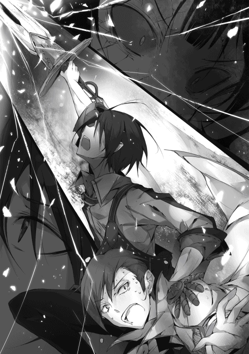
「ぬああああああああああああああああああああああああああああ⁉」
俺たちは流星のように死の靄の中を突き進み、死神モルテの額へと聖剣フランブワンを突き立てた。
「わらわは世界の死の概念そのもの！ その神性！ こんなことで終わるわけにはアアアアアアアアアアアアアアア！」
いつまでも覚えの悪い奴だ！
「何度も言わせるな！ 俺は孤児どもを守るだけだ！ お前の敗因は一つ！ こいつらを狙ったということだ！ 世界など、神かどうかなど、関係ない！」
と、額に剣を突き立てられながら、モルテは表情を崩す。
「ふ、ふははっははははっはは！ なるほど、なるほど！ そうであったか！ やっと......やっと合点がいったわ！ そなたは本当に孤児院長なのじゃな！ 勇者などでは、な、なかったか！」
最初から、そう言っている！
「消えろ、死神!! この世界から‼」
「ああああああああああああああああああああああああああああああああああ!!」
パキッ──
そんなガラスがひび割れたような音がするのと同時に、
バキイイイイイイイイイイイイイイイイイイイイ!!
突き立てられた聖剣を中心に死神モルテの体が縦に裂けていく。
死の概念をまとう神性を、聖剣が概念ごと切り伏せたのだ。
「み、見事であった。ヒトの持つ可能性、見せてもらったぞ、ナオミよ。ふ、ふふ、アリどもとは、失礼なことを言ったの......お前たちも許せよ......我が仔たちよ......」
どこか慈愛の眼差しでリュシアたちを見やった。
「モルテッシモ......さん？」
「ふ、ふふふ。ル、ルイクイ様、申しわけございませぬ......。死ではこの者たちを止めることはできませぬなんだ......ですが、わらわは......」
そんな言葉を残しながら、死神モルテは消滅していく。
死は生の一側面でしかない。
そのせいだろうか、
「綺麗......」
リュシアが呟く。
ふん。
一方の俺は鼻を鳴らした。
死神モルテは消えていく際、まるで燐光のような美しい光を放ちながら消えていく。
まるで、世界の命運が救われたことを祝福するかのように。
「相変わらずユースティアの持ってくる肉はうまいな」
「謝罪を。ですが、本当にこの程度で宜しいのでしょうか。操られていたとはいえ、ナオミ・マサツグや、あなたたちを窮地に追いやったというのに」
王国児童保護監察官ユースティア・ライメイルが苦悶の表情を浮かべた。
「まあまあ、ユースティアさん。そんなに気になさらないでください」
「リュシア......」
「そうだぜ。あんたが気に病むことじゃねえよ。悪いのは死神だろ？」
「エリン......」
「そうそう、気にしない気にしない！」
「シー......」
「いや、お前はユースティア以上に操られていただろうが」
俺を殺して標本にするつもりだったはずだが？
ごめんなさーい！ と喚き始めるシーを適当に責め立てた。
が、ユースティアの表情はまだ晴れない。
......まったく。相変わらずまじめで鬱陶しい奴である。
「何度目だ。もういいと言っているだろう。それより、余計なことは考えずに飯を食え。飯は美味く頂かなくてはならないというのが、この孤児院のルールだ」
「ナオミ・マサツグ......ですが。いえ、分かりました」
ユースティアはそう言うと、あきらめたとばかりに嘆息する。
金網の上で焼かれた肉にフォークを伸ばし始めた。
やれやれ、やっとか。まじめな分、悩み始めると長いのである。
......が、
シュン！
その狙っていた肉が一瞬にして目の前から消え去ったのである！
「そうですわ〜。もぐもぐ。わたくしの将来の旦那様の御心は空よりも青く、広く、深いのですわ。むぐむぐ。その頑固な頭を、このお肉ぐらい柔らかくして感謝されるのが宜しいと思いますわ。ごっくん」
ユースティアが目をつむり、フォークを置き、そして青筋を立てながら冷えた声を出した。
「なぜ、あなたがここにいるのでしょうか、シルビィ・リスキス？ 私はナオミ・マサツグに謝罪と、そのお詫びの品を届けたつもりだったのですが？ 孤児院の皆へ振る舞うためのお肉であり、決してあなたに振る舞うつもりはなかったのですが？」
「あらあら、わたくしたちも囮役で頑張らせて頂いたのですのにい？」
「存じています。ですが、あれはあなたたちが好きでやったことでしょう？ そこに私が何か感謝を示す必要がありますか？」
「まあまあ！ いいじゃないのユーちゃん！ かっちかちだよぉ、お固いなあ。さあさあ、固い事ばっかり言ってないで、ほうら飲も飲も。ダーリンとくんずほぐれつしようじゃないかぁ」
「誰がユーちゃんですか。それに飲みません。......それよりもアルノン・キンブルク、あなたもなぜいるのですか？」
「おうおう、ボクのお酒が飲めないってのかい⁉ ううん、ならダーリンに慰めてもらうしかないね。ね、ダーリン、よしよしってして！」
「地面が冷たくて気持ちがいいぞ。それで、その年中ゆだっている頭を冷やしたらどうだ？」
「うーん、マサツグさんったら魅力的な提案ばっかりするから、ボク困っちゃう！」
そう言って椅子から下りて地面に横になった。
いつものことなので放っておく。そのうち飽きて戻って来るだろう。
「ナオミ・マサツグ。やはりあなたの交友関係はこの子たちに悪影響だと断じます」
「断じて友人などではない」
勝手に上がり込んで、勝手に肉を食らう輩どもであり、それ以上ではない。
「はあ、それにしても王国監察官が、ギルドや金貸しの後継者たちと一緒にご飯を食べたなどと知られれば、何と噂されることか」
「ふん、自業自得だろうが」
それが一番のペナルティと言ったところか。まあ、知ったことではない。
それよりもだ。
「結局どうなった？」
「はい」
ユースティアが居住まいをただした。
今回の顛末を一通り聞く。
宰相モルテッシモ。その正体は死神モルテであった。人間たちを操り、王国の幹部、宰相に就任。邪神ルイクイ復活のため、生贄用の孤児集めに暗躍した。生贄。俺たちはその陰謀に巻き込まれた形だ。
「ワルムズ王や操られた奴らは無事だったのか」
「はい。ひどく衰弱していて、復帰までは時間がかかるようですが、命に別状はないそうです」
課題は山積みでしょうが、と続けた。
城は半壊し、政務は完全に滞っている。
まあ、そこは一院長である俺の預かり知る所ではない。
「聖剣も返しちゃったんですよね？」
「もったいねえなあ」
リュシアとエリンが言った。
ふん。俺は鼻を鳴らす。
そう、聖剣フランブワン。恐るべき神殺しの剣。それを俺は気絶したミヤモトへとあっさり返還した。
「孤児院に聖剣など、似つかわしくないことこの上あるまい」
「まあ、そうだけどよ。でもあれだろ、あんた勇者とか何かだってんだろ？」
エリンがまだ納得いかなさそうにした。
確かにな。
勇者とかなんだとか、奴は言っていた。
──だが。
俺は少し笑い、
「勇者だか何だか知らんが、俺がしたいことは決まっている。俺が何者であろうとも、な。俺はただ、それを......したいようにするだけだ」
だから、勇者だろうが、聖剣は不要である。
「まあ、マサツグがそう言うんなら、それでいいけどよ。......ん？ ところで、そのしたいことって......」
「さて、と」
エリンの質問を、俺はさえぎる様に立ち上がった。
「少し外す。すぐに戻るから待っていろ」
「ん？ あ、ああ」
エリンが首を傾げてから頷いた。
トイレか何かだと思ったのだろう。その方が都合がよい。
俺は立ち上がると、部屋を後にした。
そして、静かに孤児院の裏口から外へ出る。
そこには、
「久闊を序すには余り日が経ってはおらぬかな、ナオミよ？」
「俺は別に会いたいと思っていたわけではないが」
「連れぬ奴よ。まあ良いわ」
漆黒の髪を持つ幼い少女がいた。
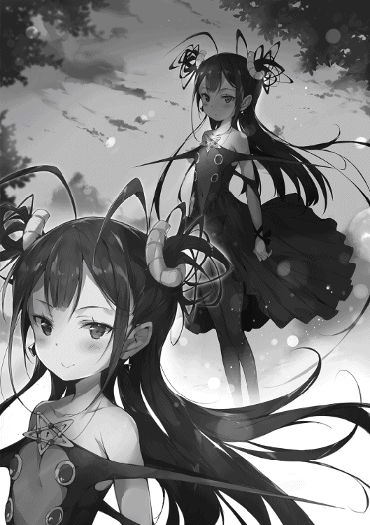
「死神モルテか......。いや......」
俺は首を振り、
「お前は別人だな？」
ふふ、と少女はあどけなく微笑む。
それは以前の死神とは違う、柔らかな仕草だ。
「神核は一緒である。だが、そなたの言う通り。わらわと前のわらわとは別の存在と認識してもらって良い」
「そうか」
「わらわは死の概念の顕在化した神性ゆえ、消滅はしても消失はせぬ。記憶も引き継いでおるしな。だが、そなたの知る死神は、あの死神だけよ。そなたらを虫けらと嘲笑ったあの死神だけじゃ」
ふん。
「勘違いするな。あいつは自分が高みにいると勘違いしていたイタい女ではあったが、別に俺たちのことを嗤ってはいなかった。むしろ、よく見ようと努力していたんだろうさ」
あいつ、妙に人間臭いところがあったからな。
シーみたいなのは例外なのだろう。
あいつが自分の死を予感した時に、はじめてリュシアたちを視野に収めて微笑んだように、神にとって人間一人一人を認識することは本来難しいことに違いない。
「......そうか。ふむ、そうか。そう言ってもらえると前の自分も救われる」
「で、何をしに来た？」
俺は話題をさっさと本題に移した。
「せっかちな奴じゃなあ。わらわもちょっとはなあ......。記憶を引き継いでいるわけじゃから、つまりじゃなあ」
「？」
死神は唇を尖らせてから、
「......はぁ、まあ良いわ。なに、大したことではない。単にお隣さんへの挨拶をしに立ち寄っただけのことよ。それ、粗品であるぞ。下賜してしんぜよう」
......は？
「何を言っている？」
「む？」
死神は怪訝な表情を浮かべ、
「わらわの言ったことが分からなんだか？ おかしいの、いちおう万能言語のスキルを行使しておるのじゃが。神言のほうが良いのかの？ ×●▽▼ＲＳ●●●●──※〝＃４◎○──」
「やめんか！ 何を言っているかくらいは分かっておるわ！ 意味が分からんと言っているだけだ！」
何だ、お隣さんって！
「おかしなことを言う奴じゃなあ。数少ない知己を頼って越して来るのが、そんなに不思議かえ？ 他に身寄りもおらんし、死神ゆえ、色々と人界での生活は不使ゆえなあ」
それに孤独は寂しいからの、などとのたまった。
「死神が甘えるな。それに貴様が再び敵にならんとも限らんだろうが」
「否定はせぬ。先日まで殺し合っていた訳じゃし。......が、やっぱりだめかのう？ まあ、もう一つだけ理由があるにはあるのじゃが......」
「どうでもいい」
どうせ下らない理由だろう。
「まあのう。実はわらわにもよく理由は分からぬのじゃがな。どうも前のわらわがな、お前たちのことを羨ましがっていたようでなあ。記録はあるが、感情は記憶していないがゆえ、なぜ、そんな風に思っていたのか分からんのじゃがなあ。孤児院に偵察に赴いた際に、ふと窓の外からケンカするそなたらを見たらしい。その際に、前のわらわはな『あの輪の中に混ざりたい』と、そう思ったらしいぞ？」
......なるほど。
時期は恐らく温泉の事件の少し前だろうか。
妙なことだ。喧嘩をしている情景を見て、そこに混ざりたいとは。
が、なんとなく納得はできた。
あいつの行動にはどこか無駄が多かった。
なにか俺たちで遊んでいるような。『戯れ』という言葉がぴったりのような、そんな言動が多かった。
......奴もまた、『家族』のような存在が欲しかったのかもしれない。
「まあ、やはり無理よな。ダメ元という奴よ。まあこれまで通り、せいぜい世界を外側より眺めることと......」
「ふん、まあとは言え、近所に住むことを俺が拒むことも出来ようもない。せいぜい勝手にすることだ」
俺はそう言って、粗品を乱暴に受け取った。
「良いのかえ？」
「勘違いするな。どこに住もうがお前の自由だ。死神だろうがな」
したいように、するがいい。
俺はそう言った。
「そうか」
「ああ」
「ありがとう。ナオミよ。礼を申すぞ？」
そう言って小さな死神は再び柔らかに微笑んだ。
こうして、俺たち孤児院の隣には一人の死神が住むことになったのである。
なお、この後こいつを中の奴らに紹介する際に、大騒動になったことはまた別の話である。
（終）
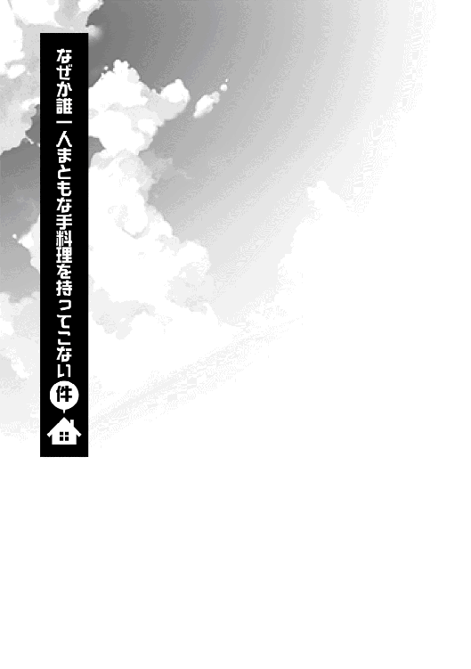
俺こと直見正嗣は、先日の一件にて、「俺は俺の意志で孤児を守る!!」、などと宣言してしまった。思い出すたびに舌を噛み千切りたくなる。
あんな恥ずかしい台詞をよくも宣えたものだ。
もし俺のスキルで過去にさかのぼれるならば、とって引き返してあの時の俺を背後から蹴り倒したい。
「勘違いするな。守るとは言ったが、そういう意味ではないんだからな！」
と心中で叫ぶ。
誰から蒸し返されている訳でもないので、そうするしかないのだ。
あぁ......（遠い目）。
......さて、そんな現実逃避をしていても始まらない。
知っての通り俺は合理的で現実的な男である。リアルを直視し、実効性のある対策を講じ、これを具体的手段によって解決する。
クラスメイトどものような口だけではない。俺は出来る男だ。
ゆえに、俺は対処しなければならない。
そう、
「ナオミ・マサツグ！ いいから開けなさい！ せっかくこの私が夕ご飯の差し入れに来たというのに!!」
「そうじゃぞ、ナオミよ。わらわもほれ、神代のりょうりとやらを再現した。幼子の体では素材を集めるのが大変じゃったが、そなたのために頑張ってみたのじゃ。だから、あけてたもれ」
我が孤児院の安寧を破壊しようとする二人の天敵。
王国児童保護監察官。俺とはきっぱり相性が悪い公務員であるところの超絶堅物女ユースティア・ライメイル。そして、先日までワルムズ王国を裏で操り、邪神復活の儀式を敢行しようとしたトンデモ死神モルテッシモ（の生まれ変わりの幼女）である。
（なぜ毎日やってくる⁉）
俺はまたしても心中で叫んだ。
俺の嫌疑は晴れ、監察官にまとわりつかれる理由はなくなったはずである。また、死神だって言ってみれば赤の他人だ。どちらかと言えば元敵同士である。
あたかも、さも、隣近所のなじみがごとく、毎日夕飯の差し入れをしてくるような間柄では断じてない。
......ああ、いや。
『そのことは、まだいいのだ』
俺は諦めの境地に至った心境で、大人の理解を示す。世には理不尽なことは数多ある。人知の及ばぬことも。ならば、これもその一つだと無理やり自分を納得させることも、まあ出来なくはない。
だが。
だが、しかしである。
「まったく......。本当に留守なのでしょうか。今日は手によりをかけて『激辛香辛料たっぷり卵焼き』を創って来たというのに！」
「ワシもそうなのじゃがなあ。せっかく竜の心臓と巨大マンドラゴラの葉が手に入ったゆえ、『新鮮野菜のさっぱりモツサラダ』を創って来たと言うのにぃ」
（それが問題だと言うのがなぜ分からん！）
俺は心中で叫ぶ（三度目）。
そう、こいつらはここ最近毎日ぐらいの頻度でやって来ては、なぜか独創的な（毒草的な）料理を振る舞おうとするのだ！
素直に言って、差し入れを持ってきてもらえることはありがたい。
孤児院には金がないし、こうしてオカズが一品でも増えるのはリュシアたち孤児の栄養になる話だ。鬱陶しいが、これを拒むことは合理的ではない。
だが、その料理があまりにも、あまりにもアレなのである！
ゆえに、俺は居留守を使う。
幸い、孤児どもは外出中だ。俺が声を立てない限り、あきらめて帰るだろう。
ふ、現状を打破する合理的で完璧な作戦である。
「あっ、ユースティアさんにモルテッシモさん。どうされたんですか？」
「おお、リュシアさん。それにエリンさんにシーさんですか。買い物の帰りですか？ 偉いですね。ええ、そうなのです。今日も差し入れを持ってきましたよ！」
「あッ......、ああ〜......、そ、それは、いつもどうもありがとうございます」
「いえいえ、とんでもないですよ！」
「わらわもそなたら『最も新しき神殺し』たちへ振る舞う手料理を持参したぞよ！ あがめ奉るがよいぞ！」
「別人とは分かっちゃいるが......あんたの血なまぐさいところは変わらねえなあ......」
「その辺はほれ、死神じゃしね」
「あ、これってもしかして竜の心臓⁉ お姉ちゃん一度も食べたことないよ!!」
シーの耳障りなキャンキャンとした喜声が響く。
「臓物で喜ぶ女神というのはありなのでしょうか......。ま、まあ、お客様を玄関でお待たせする訳には行きませんよね！ どうぞ、中にお上がり下さい!!」
「......」
俺は絶望で、汚い天井を仰ぐしかなかった。
『神を殺せば神に近づく。そなたたちは階を一段上がった。ゆえにわらわにはようやっとそなたらの顔がよく見えるようになった』
そのような訳でこのモルテッシモは俺たちをしっかりと認識できる。以前のように虫扱いにはならないというわけだ。
「虫けらですらこんなゲテモノ料理を食わされることはないだろう。つまり俺たちは虫けら以下ということだ」
俺は夕食のテーブルに着くなり、確信をもってそう言った。
テーブルの上にはどす黒い肉塊と紫色のやたら艶々とした葉で作られた冒涜的なサラダが置かれている。
「心を込めた手料理に対して酷い事言うのう！ さすが神殺しよの！ またしても死神を殺すつもりかの！ 精神的に!!」
モルテが嘆く様に言った。
「もうマー君ったらいい歳して好き嫌いが激しいんだから!! ほら、お姉ちゃんみたいに好き嫌いせずに何でも食べなきゃ、だよ!!」
げんなりとする俺の隣で、シーは普通にそのゲテモノを貪っていた。
なるほど。
「今回の事件で女神の可能性も仄かに感じていたが、やはり勘違いだったな。マンティコアの類だったか」
「違うよ！ 風呂焚きの精よりよっぽど降格しちゃってるよ！ ね、ねえマー君思い出してよ。今回のお姉ちゃんの女神的な活躍を思い出して！ マー君への慈愛に満ちた行動とか、女神っぽい神威に満ち満ちたバトルとか！」
とか、とか！ などと、いつも通り極めてやかましい。
というか、
「お前は今回一貫して敵だったろうが。とどめを刺せなかったのが残念だ」
「その通りだけど、とりあえず酷いよう！」
ああ、うるさい。
「何より、そもそも口の中に心臓の肉片を詰め込みながら女神だと力説する女神がどの世界にいる。まったく、お前など疫病神で十分だ」
が、
「おほ♬ でもでも、風呂焚きの精より、ちょいとばっかり出世してるんじゃない？ 神は神だもんねえ、やったぜえ、わたしぃ!!」
喜んでいた。
俺は無視した。
「ほ、ほうほう。これが現在の神と人との在り様なのじゃな。わ、わらわの知っておる神代とは大きく変わったのじゃなあ」
一方、モルテが目を白黒させていた。新しい死神の常識が大きく歪んでいくのを感じる。
だが、訂正をする暇は与えらず、
「か、か、か、か、辛いですぅ！」
「ハフッ、ハフッ、い、いやいや、リュシア。これくらいがいいんだよ。まったく、気の利いた辛さだぜ！」
「ふ、ふふふふ、ハフ、ハフ。エリンさんはよく分かっています。ええ、リュシアさんにもきっと分かってもらえるでしょう。この激辛の素晴らしさに！ ほとばしる正義の赤に!!」
暑くもないのに間抜けにも汗水を垂らしている女が三人そこにはいた。
「さて、そう言えばアルノンに呼ばれているんだった。少し出かけてくる」
俺は自然な流れで席を立とうとする。
「み、見捨てないでください、ご主人様ぁ！」
ガシィ！ とリュシアに腕を掴まれた。
「くっ、離せ！ 院長命令だぞ！」
「い、いきなり伝家の宝刀を使うほど嫌なんですか⁉」
と、エリンが、
「おいおい、大げさな奴らだぜ」
小ばかにしたように嗤った。
「大げさなものか。なぜ卵焼きを食べるだけでハフハフなどしなければならん」
どこの激辛カレーだ。
が、エリンはエッヘンとなだらかな胸を張り、
「ふふん。普段偉そうなことを言ってても、この程度の辛さがダメだとはな。へっ、私はへっちゃらだぜ。何せ違いの分かる大人の女だからな！」
コーヒーで酔っ払っていた奴が何を言うか。それになんだその大人の女というのは。
が、なぜかその言葉にリュシアは思いっきり反応し、
「お、大人の女⁉ か、辛い物が食べられないとお子様なんですか⁉」
「あったぼーよ！ こういうアダルトな味が分かってこその大人って奴だ!!」
エリンとリュシアの両方がこちらをチラチラと見てくる。
何なんだ一体？
というか、
「そんな訳がないだろうが......」
呆れた声を上げる。しかし、
「いいえ、いいえ、ナオミ・マサツグ！ エリンさんの言葉には理があります!!」
「いきなり割り込んでくるな」
「そもそもこの孤児院の味付けは全体的に『薄味』なのです！ 従って、濃い味に慣れていない。世間に出ればこれくらいの辛さのものはごまんとあるというのに！」
聞いちゃいない。ユースティアは「然るに！」と続けた。
「エリンさんの言っている言葉の意味はこうです。世間を広く知っている大人であれば、このくらいの卵焼きなどペロリと平らげるものだ、と！ つ、つまり、あの、せっかくあなたのため......、ああ、いえ、あなたたち孤児院の皆さんのために作ってきたのですから、ナオミ・マサツグ、あなたも私に感謝を捧げつつも、一口くらい食べて頂いて良いのではないかと......」
最後はなぜかモゴモゴと小声になってよく聞こえなかったが、とにかく俺に卵焼きを食えということらしい。
「御免蒙る!!」と喉元まで出かかるが、ぎりぎりで飲み込む。なぜなら、コイツは今、無視できないことを言ったからだ。
「俺の料理が薄味過ぎる......だと？」
「え？ え、ええ、まあそうですね。比較的薄味なのではないでしょうか。まあ、それが別に悪いと言う意味では......物のたとえというやつで」
「なんてことだ!!」
「キャッ⁉」
ユースティアが普段上げない黄色い悲鳴を上げる。が、そんな些事にかかずらっている暇はない。
痛いところを突かれたと思ったからだ。
「貧乏で外食など縁のなかった俺は、給食ぐらいでしか外の味を知らなかった......。まさか、まさか俺の作る料理の味が、世間からそれほどずれていたとはッ......すぐに改善しなければならん!!」
「あ、いえ、あのナオミ・マサツグ、そんなまるで世界を救うために立ち上がる勇者が如き意気込みで言われましても......。別にそこまで言ったつもりはないのですが。というか、あなたの料理は大変美味しいので、特に変える必要は......って、ああ、これは聞いていませんね」
鬼門でしたか......、とか何とかユースティアが言っているが、俺の耳には入らない。
テーブルの上に置かれた『正義の卵焼き（激辛）』、そして『死神謹製のサラダ（竜の心臓とマンドラゴラの葉）』を睨み付けた。
そして──、
「俺の料理のレベルアップのためだ。いただきます!!」
覚悟なぞ瞬時に完了させる。
ためらいなどない。
俺は叫ぶと、すぐにその両方を口に運んだのであった。
そして──、
「かっら！ というか、苦い!! 苦い苦い苦い!! なんだこれは！ おい、ふざけるな、いくら俺が世間の味を知らなくてもこんな味の料理がまかり通っている訳がないだろうが！ もしこれが普通なら既に邪神が復活した証だぞ！」
「何ですって！ どれだけ私がこの卵焼きを作るのに苦労したと思っているのです！ いくら何でもひどすぎますよ!!」
「そうじゃ、そうじゃ！ 人の気持ち、もとい死神の気持ちも考えるのじゃ!!」
「やかましい！ 人に物を食べさせたいならもう少しまともな料理を持ってこい！」
「もー、マー君ったらやっぱり好き嫌いが激しいんだから。まだまだ子供だね♡ さあ、お姉ちゃんの胸に飛び込んでおいで！」
「どさくさに紛れて抱き着いてくるんじゃない！ この堕肉の塊が！」
「うーん、確かに辛いけど、なかなかうめえと思うんだけどなあ（ハフハフ）」
「というか、今のは余りにも食べ合わせが悪過ぎのではないでしょうか。竜の心臓、マンドラゴラの葉、激辛香辛料ですし......」
「というか水をくれ、水を！ おい、シー、魔法で水を出してくれ!!」
「水もしたたるいい女ってこと⁉ マー君ったら公衆の面前で大胆すぎだよ!!」
「やかましいわ！」
わいわい、ギャーギャーと。
先日よりも少しだけ騒がしくなった孤児院の日常はこのようにして過ぎてゆくのであった。
なお、近隣の爺さんが「うるさい!!」と怒鳴り込んでくるのは、この三十秒後のことである。
ご無沙汰をしております。初枝れんげです。
この度は拙作をお手にして下さり、誠にありがとうございました。
本書もついに二巻目となりまして、お読みいただいている読者の皆様には感謝の言葉もございません。
今回のストーリーいかがでしたでしょうか？
皆さまお待ちかねの、あのキャラクターも登場し、ますます孤児院界隈がやかましくなってきました。
そして、徐々に正体が明らかになって来た邪神や勇者という存在。
今後どんな展開になるのか目が離せませんね!!
また、今巻では様々な新情報が矢継ぎ早に登場しました。
次の巻では更にそうした『世界の謎』や、登場人物たちが持つ『隠された物語』に焦点を当てていきたいと思っています。
ぜひとも、お楽しみに!!
さて、そして今巻でもまた素晴らしいイラストを描いていただいたパルプピロシ先生にはこの場をお借りして深くお礼を申し上げたいと思います。
宰相モルテッシモに、クラスメイトのミヤモト、そしてユースティア。
新しく登場したキャラクターたちの生き生きとしたイラストを描き上げるその腕はまさに神の域!!（いつも、わたしのいい加減なイラスト依頼にもかかわらず、素晴らしいイラストを本当にありがとうございます（汗））
異世界孤児院が最も幸運なのは、パルプピロシ先生というイラストレーターに当たったということですね。間違いない。
次巻もなにとぞ宜しくお願いします!!
また、いつも私のつたない乱文に赤を入れ下さる編集Ｓ様、校正様、そして編集長のＳ様におかれましても、深く深くお礼を申し上げます。皆様がいらっしゃらなければ脱稿ままならぬこと必至でございます......。
そして、最後になりましたが、本書を手に取って下さった読者の皆様。ネット掲載時から支えて下さっている皆様、本当にありがとうございました。
今後も更に面白い小説を皆様に届けたく精進してまいります。
それではまた三巻でお会いしましょう!!
著者プロフィール
初枝 れんげ
Hatsueda Renge
京都生まれの京都育ち。大学で働くサラリーマンです。傷ついた心を執筆活動で癒す三文小説家。そろそろ婚活せねば未来がやばいアラサー男子でもあります。
パルプピロシ
Pulp Piroshi
パルプピロシと申します。
最近自分は本当にたくさんの人に助けていただいて生かされてるなあと実感することが多いです。しみじみと感謝。あと今日も納豆がうまい。
異世界で孤児院を開いたけど、なぜか誰一人巣立とうとしない件２
2018年３月１日発行 ver.1.0
著 者 初枝れんげ
発行所 TOブックス
〒150-0045 東京都渋谷区神泉町18-８
松濤ハイツ２Ｆ
03-6452-5766（編集）
0120-933-772（営業フリーダイヤル）
Ⓒ2018 Renge Hatsueda
※無断で複製・複写・データ配信などをすることは、かたくお断りいたします。
本電子書籍は下記にもとづいて制作しました
異世界で孤児院を開いたけど、なぜか誰一人巣立とうとしない件２
発行日 2018年３月１日 第１刷発行
本作品の全部または一部を無断で複製、転載、配信、送信したり、ホームぺージ上に転載することを禁止します。また、本作品の内容を無断で改変、改ざん等を行うことも禁止します。
本作品購入時にご承諾いただいた規約により、有償・無償にかかわらず本作品を第三者に譲渡することはできません。
本作品を示すサムネイルなどのイメージ画像は、再ダウンロード時に予告なく変更される場合があります。
本作品は縦書きでレイアウトされています。
また、ご覧になるリーディングシステムにより、表示の差が認められることがあります。